<!DOCTYPE html>
<html lang="pt-BR">
<head>
  <meta charset="UTF-8">
  <meta name="viewport" content="width=device-width, initial-scale=1.0">
  <title>Saneamento Ambiental II (TH510) — Guia Definitivo de Prova & Folha A4</title>
  <!-- KaTeX for Math Rendering -->
  <link rel="stylesheet" href="https://cdn.jsdelivr.net/npm/katex@0.16.9/dist/katex.min.css">
  <script defer src="https://cdn.jsdelivr.net/npm/katex@0.16.9/dist/katex.min.js"></script>
  <script defer src="https://cdn.jsdelivr.net/npm/katex@0.16.9/dist/contrib/auto-render.min.js"
    onload="renderMathInElement(document.body, {delimiters: [{left: '$$', right: '$$', display: true}, {left: '$', right: '$', display: false}]});"></script>
  <link href="https://fonts.googleapis.com/css2?family=Inter:wght@400;500;600;700;800&family=JetBrains+Mono:wght@400;600&family=Kalam:wght@400;700&display=swap" rel="stylesheet">
  <style>
    :root {
      --bg: #f8fafc;
      --surface: #ffffff;
      --surface-alt: #f1f5f9;
      --border: #e2e8f0;
      --text: #0f172a;
      --text-muted: #475569;
      --primary: #0284c7;
      --primary-dark: #0369a1;
      --primary-light: #e0f2fe;
      --accent: #0d9488;
      --accent-light: #ccfbf1;
      --warn: #d97706;
      --warn-light: #fef3c7;
      --danger: #dc2626;
      --danger-light: #fee2e2;
      --success: #16a34a;
      --success-light: #dcfce7;
      --purple: #7c3aed;
      --purple-light: #ede9fe;
    }

    * { box-sizing: border-box; margin: 0; padding: 0; }
    body {
      font-family: 'Inter', -apple-system, BlinkMacSystemFont, sans-serif;
      background: var(--bg);
      color: var(--text);
      line-height: 1.6;
      padding-bottom: 60px;
    }

    /* Sticky Top Navigation */
    .top-header {
      position: sticky;
      top: 0;
      z-index: 1000;
      background: rgba(15, 23, 42, 0.95);
      backdrop-filter: blur(10px);
      color: #fff;
      border-bottom: 1px solid #334155;
      padding: 12px 24px;
      display: flex;
      flex-wrap: wrap;
      align-items: center;
      justify-content: space-between;
      gap: 12px;
    }
    .brand {
      display: flex;
      align-items: center;
      gap: 12px;
    }
    .brand-badge {
      background: linear-gradient(135deg, #0ea5e9, #14b8a6);
      color: #fff;
      font-weight: 800;
      padding: 6px 12px;
      border-radius: 8px;
      font-size: 0.9rem;
      letter-spacing: 0.5px;
    }
    .brand h1 {
      font-size: 1.1rem;
      font-weight: 700;
    }
    .brand p {
      font-size: 0.78rem;
      color: #94a3b8;
    }

    .nav-tabs {
      display: flex;
      gap: 8px;
      flex-wrap: wrap;
    }
    .nav-btn {
      background: #1e293b;
      color: #cbd5e1;
      border: 1px solid #334155;
      padding: 8px 16px;
      border-radius: 8px;
      font-size: 0.88rem;
      font-weight: 600;
      cursor: pointer;
      transition: all 0.2s;
      display: flex;
      align-items: center;
      gap: 6px;
    }
    .nav-btn:hover {
      background: #334155;
      color: #fff;
    }
    .nav-btn.active {
      background: var(--primary);
      color: #fff;
      border-color: #38bdf8;
      box-shadow: 0 0 12px rgba(2, 132, 199, 0.4);
    }

    .container {
      max-width: 1380px;
      margin: 24px auto;
      padding: 0 20px;
    }

    .tab-section {
      display: none;
    }
    .tab-section.active {
      display: block;
    }

    /* Quick Subnav Pills */
    .subnav {
      display: flex;
      gap: 8px;
      flex-wrap: wrap;
      background: var(--surface);
      padding: 12px 16px;
      border-radius: 12px;
      border: 1px solid var(--border);
      margin-bottom: 24px;
      box-shadow: 0 1px 3px rgba(0,0,0,0.04);
      position: sticky;
      top: 69px;
      z-index: 900;
    }
    .subnav a {
      text-decoration: none;
      color: var(--text-muted);
      font-size: 0.82rem;
      font-weight: 600;
      padding: 6px 12px;
      border-radius: 6px;
      background: var(--surface-alt);
      border: 1px solid var(--border);
      transition: all 0.15s;
    }
    .subnav a:hover {
      background: var(--primary-light);
      color: var(--primary-dark);
      border-color: #7dd3fc;
    }

    /* Cards & Sections */
    .card {
      background: var(--surface);
      border-radius: 14px;
      border: 1px solid var(--border);
      padding: 24px;
      margin-bottom: 24px;
      box-shadow: 0 2px 6px rgba(0,0,0,0.03);
    }
    .card-header {
      display: flex;
      align-items: center;
      justify-content: space-between;
      flex-wrap: wrap;
      gap: 10px;
      border-bottom: 2px solid var(--surface-alt);
      padding-bottom: 14px;
      margin-bottom: 18px;
    }
    .card-title {
      font-size: 1.35rem;
      font-weight: 800;
      color: var(--text);
      display: flex;
      align-items: center;
      gap: 10px;
    }
    .badge {
      font-size: 0.75rem;
      font-weight: 700;
      padding: 4px 10px;
      border-radius: 999px;
      text-transform: uppercase;
      letter-spacing: 0.4px;
    }
    .badge-blue { background: var(--primary-light); color: var(--primary-dark); }
    .badge-teal { background: var(--accent-light); color: #0f766e; }
    .badge-amber { background: var(--warn-light); color: #b45309; }
    .badge-red { background: var(--danger-light); color: #b91c1c; }
    .badge-purple { background: var(--purple-light); color: #6d28d9; }

    /* Callouts */
    .callout {
      padding: 16px 18px;
      border-radius: 10px;
      margin: 14px 0;
      border-left: 5px solid;
      font-size: 0.93rem;
    }
    .callout-title {
      font-weight: 700;
      margin-bottom: 6px;
      display: flex;
      align-items: center;
      gap: 6px;
    }
    .callout-info { background: var(--primary-light); border-color: var(--primary); color: #0c4a6e; }
    .callout-warn { background: var(--warn-light); border-color: var(--warn); color: #78350f; }
    .callout-success { background: var(--success-light); border-color: var(--success); color: #14532d; }
    .callout-danger { background: var(--danger-light); border-color: var(--danger); color: #7f1d1d; }
    .callout-purple { background: var(--purple-light); border-color: var(--purple); color: #4c1d95; }

    /* Grids */
    .grid-2 {
      display: grid;
      grid-template-columns: repeat(auto-fit, minmax(420px, 1fr));
      gap: 20px;
    }
    .grid-3 {
      display: grid;
      grid-template-columns: repeat(auto-fit, minmax(300px, 1fr));
      gap: 16px;
    }

    /* Tables */
    .table-wrap {
      overflow-x: auto;
      margin: 14px 0;
      border-radius: 10px;
      border: 1px solid var(--border);
    }
    table {
      width: 100%;
      border-collapse: collapse;
      font-size: 0.88rem;
    }
    th {
      background: #1e293b;
      color: #fff;
      font-weight: 600;
      text-align: left;
      padding: 10px 12px;
    }
    td {
      padding: 9px 12px;
      border-bottom: 1px solid var(--border);
      vertical-align: top;
    }
    tr:nth-child(even) td {
      background: #f8fafc;
    }
    tr:hover td {
      background: #f0f9ff;
    }

    /* Slide Gallery / Prints */
    .slide-box {
      background: #fff;
      border: 1px solid var(--border);
      border-radius: 10px;
      overflow: hidden;
      margin: 12px 0;
      box-shadow: 0 2px 5px rgba(0,0,0,0.05);
    }
    .slide-box img {
      width: 100%;
      height: auto;
      display: block;
      cursor: zoom-in;
      transition: transform 0.2s;
    }
    .slide-caption {
      background: #f1f5f9;
      padding: 8px 12px;
      font-size: 0.8rem;
      color: var(--text-muted);
      font-weight: 600;
      border-top: 1px solid var(--border);
      display: flex;
      justify-content: space-between;
      align-items: center;
    }

    /* Side-by-side Exercise Layout */
    .ex-enunciado {
      background: linear-gradient(to right, #f0f9ff, #e0f2fe);
      border: 2px solid #7dd3fc;
      border-radius: 12px;
      padding: 18px 20px;
      margin-bottom: 20px;
    }
    .ex-enunciado h4 {
      color: #0369a1;
      font-size: 1.05rem;
      margin-bottom: 8px;
      display: flex;
      align-items: center;
      gap: 8px;
    }
    .side-by-side {
      display: grid;
      grid-template-columns: 1fr 1fr;
      gap: 20px;
      align-items: start;
    }
    @media (max-width: 980px) {
      .side-by-side { grid-template-columns: 1fr; }
      .grid-2 { grid-template-columns: 1fr; }
    }
    .col-resolucao {
      background: #ffffff;
      border: 2px solid #cbd5e1;
      border-radius: 12px;
      padding: 18px;
    }
    .col-resolucao-header {
      background: #334155;
      color: #fff;
      padding: 8px 14px;
      border-radius: 8px;
      font-weight: 700;
      font-size: 0.9rem;
      margin-bottom: 14px;
      display: flex;
      justify-content: space-between;
      align-items: center;
    }
    .col-comentario {
      background: #fdf4ff;
      border: 2px solid #d8b4fe;
      border-radius: 12px;
      padding: 18px;
    }
    .col-comentario-header {
      background: #7e22ce;
      color: #fff;
      padding: 8px 14px;
      border-radius: 8px;
      font-weight: 700;
      font-size: 0.9rem;
      margin-bottom: 14px;
      display: flex;
      justify-content: space-between;
      align-items: center;
    }
    .step-item {
      background: rgba(255,255,255,0.85);
      border: 1px solid #e2e8f0;
      border-radius: 8px;
      padding: 12px 14px;
      margin-bottom: 12px;
    }
    .step-item h5 {
      font-size: 0.92rem;
      color: var(--primary-dark);
      margin-bottom: 6px;
    }
    .justificativa-tag {
      display: inline-block;
      background: #dcfce7;
      color: #166534;
      font-weight: 700;
      font-size: 0.74rem;
      padding: 2px 8px;
      border-radius: 4px;
      margin-right: 6px;
      border: 1px solid #86efac;
    }

    /* A4 Sheet Visual Simulator */
    .a4-controls {
      background: var(--surface);
      border: 1px solid var(--border);
      padding: 16px 20px;
      border-radius: 12px;
      margin-bottom: 20px;
      display: flex;
      justify-content: space-between;
      align-items: center;
      flex-wrap: wrap;
      gap: 12px;
    }
    .a4-wrapper {
      display: flex;
      flex-direction: column;
      gap: 32px;
      align-items: center;
    }
    .a4-page {
      width: 210mm;
      height: 297mm;
      background: #fffef9;
      border: 2px solid #475569;
      box-shadow: 0 10px 30px rgba(0,0,0,0.15);
      padding: 4mm 5mm;
      display: grid;
      grid-template-columns: 1fr 1fr;
      grid-template-rows: auto 1fr 1fr;
      gap: 2.5mm;
      position: relative;
      overflow: hidden;
      font-size: 5.9pt;
      line-height: 1.14;
      color: #111827;
      -webkit-print-color-adjust: exact;
      print-color-adjust: exact;
    }
    .a4-page.handwriting-mode {
      font-family: 'Kalam', cursive;
      font-size: 5.8pt;
      line-height: 1.12;
    }
    .a4-banner {
      grid-column: 1 / -1;
      background: #0f172a;
      color: #fff;
      padding: 2px 6px;
      border-radius: 3px;
      font-weight: 800;
      font-size: 7.2pt;
      display: flex;
      justify-content: space-between;
      align-items: center;
      font-family: 'Inter', sans-serif;
    }
    .a4-quad {
      border: 1px solid #334155;
      border-radius: 4px;
      padding: 3px 4.5px;
      background: rgba(255,255,255,0.96);
      display: flex;
      flex-direction: column;
      justify-content: flex-start;
      gap: 1.5px;
      overflow: hidden;
    }
    .a4-quad-title {
      background: #e0f2fe;
      color: #0369a1;
      font-weight: 800;
      font-size: 6.6pt;
      padding: 1.5px 4px;
      border-radius: 2px;
      border-left: 2.5px solid #0284c7;
      margin-bottom: 1px;
      display: flex;
      justify-content: space-between;
      align-items: center;
      font-family: 'Inter', sans-serif;
    }
    .a4-quad table {
      font-size: 5.5pt;
      margin: 0.5px 0;
      line-height: 1.1;
    }
    .a4-quad th {
      padding: 1px 2.5px;
      background: #334155;
      color: #fff;
    }
    .a4-quad td {
      padding: 1px 2.5px;
    }
    .a4-formula {
      background: #f1f5f9;
      border: 0.8px dashed #64748b;
      padding: 2px 4px;
      border-radius: 3px;
      font-weight: 500;
      margin: 1px 0;
      font-size: 5.8pt;
      line-height: 1.18;
    }
    .a4-quad code, .a4-quad .step-pill {
      background: #0284c7;
      color: #fff;
      padding: 0.5px 3.5px;
      border-radius: 2px;
      font-weight: 700;
      font-family: 'Inter', sans-serif;
      font-size: 5.5pt;
    }
    .a4-list {
      padding-left: 9px;
      margin: 0;
    }
    .a4-list li {
      margin-bottom: 2px;
    }
    .hl-yellow { background: #fef08a; padding: 0 2px; border-radius: 2px; font-weight: 700; }
    .hl-green { background: #bbf7d0; padding: 0 2px; border-radius: 2px; font-weight: 700; }
    .hl-red { background: #fecaca; padding: 0 2px; border-radius: 2px; font-weight: 700; }

    /* Lightbox Modal for Slide Zoom */
    #lightbox {
      display: none;
      position: fixed;
      inset: 0;
      background: rgba(15, 23, 42, 0.92);
      z-index: 9999;
      justify-content: center;
      align-items: center;
      padding: 24px;
      cursor: zoom-out;
    }
    #lightbox img {
      max-width: 95vw;
      max-height: 92vh;
      border-radius: 8px;
      box-shadow: 0 10px 40px rgba(0,0,0,0.5);
      background: #fff;
    }

    ul, ol { padding-left: 20px; }
    li { margin-bottom: 4px; }

    /* Print Styles: Print ONLY the 2 A4 pages cleanly */
    @media print {
      @page {
        size: A4 portrait;
        margin: 0;
      }
      body {
        background: #fff;
        padding: 0;
        margin: 0;
      }
      .top-header, .subnav, .a4-controls, #tab-estrategia, #tab-teoria, #tab-exercicios, .no-print {
        display: none !important;
      }
      #tab-a4 {
        display: block !important;
      }
      .container {
        max-width: none;
        margin: 0;
        padding: 0;
      }
      .a4-wrapper {
        gap: 0;
        display: block;
      }
      .a4-page {
        width: 210mm;
        height: 297mm;
        border: none;
        box-shadow: none;
        page-break-after: always;
        break-after: page;
        margin: 0;
      }
      .a4-page:last-child {
        page-break-after: auto;
        break-after: auto;
      }
    }
  </style>
</head>
<body>

<div id="lightbox" onclick="this.style.display='none'">
  
</div>

<header class="top-header">
  <div class="brand">
    <span class="brand-badge">TH510 • P2</span>
    <div>
      <h1>Saneamento Ambiental II — Tratamento de Esgotos</h1>
      <p>Estudo Orientado à Prova (Raciocínio, Diagnóstico, Exercícios Lado a Lado & Folha A4)</p>
    </div>
  </div>
  <nav class="nav-tabs">
    <button class="nav-btn active" onclick="switchTab('estrategia', this)">🎯 1. Estratégia & Comparação</button>
    <button class="nav-btn" onclick="switchTab('teoria', this)">📚 2. Resumo + Slides (Módulos 1 a 5)</button>
    <button class="nav-btn" onclick="switchTab('exercicios', this)">✍️ 3. Exercícios dos Slides (Lado a Lado)</button>
    <button class="nav-btn" onclick="switchTab('a4', this)">📄 4. Folha A4 Manuscrita (Frente/Verso)</button>
    <button class="nav-btn" onclick="showAllTabs(this)">👁️ Ver Tudo</button>
  </nav>
</header>

<main class="container">

<!-- =====================================================================
     ABA 1: ESTRATÉGIA DA PROVA, COMPARAÇÃO DE SISTEMAS E DIAGNÓSTICO
     ===================================================================== -->
<section id="tab-estrategia" class="tab-section active">

  <div class="callout callout-info">
    <div class="callout-title">💡 Como a Professora Corrige a Prova (Foco em Raciocínio e Justificativa)</div>
    <p>Segundo as diretrizes oficiais da disciplina: <strong>"O foco da prova não é consultar prescrições normativas, e sim explicar processos, comparar sistemas, diagnosticar problemas e justificar escolhas. Serão valorizados a justificativa, os critérios adotados, a coerência do raciocínio, o uso correto da terminologia e a justificativa dos parâmetros/valores adotados."</strong></p>
  </div>

  <!-- FÓRMULA DE OURO PARA RESPONDER QUESTÕES -->
  <div class="card">
    <div class="card-header">
      <h2 class="card-title">🏆 Estrutura-Padrão de Resposta Nota 10 (Método C-P-J-E)</h2>
      <span class="badge badge-teal">Roteiro de Escrita na Prova</span>
    </div>
    <div class="grid-2">
      <div>
        <p>Sempre que você adotar um número em um cálculo ou responder uma questão aberta, estruture seu texto em <strong>4 linhas curtas (C-P-J-E)</strong>:</p>
        <ol style="margin-top:10px;">
          <li><strong>[C] Critério / Parâmetro Adotado:</strong> Declare explicitamente o valor escolhido e sua faixa típica (ex.: <em>"Adota-se $\theta_H = 8\text{ h}$ para vazão média, atendendo à faixa $\ge 8\text{ h}$ da NBR 12209/11 para $T \in [18, 21]^\circ\text{C}$"</em>).</li>
          <li><strong>[P] Processo Físico/Biológico Governante:</strong> Nomeie o fenômeno com a terminologia correta (ex.: <em>sedimentação discreta, sedimentação floculenta, sedimentação zonal, hidrólise/acidogênese/metanogênese, respiração endógena, nitrificação/desnitrificação, simbiose algas-bactérias</em>).</li>
          <li><strong>[J] Justificativa (O que acontece nos extremos):</strong> Explique <strong>por que não adotar menor nem maior</strong> (ex.: <em>"Se $v_h < 0{,}25\text{ m/s}$ na caixa de areia, há sedimentação de matéria orgânica junto à areia gerando maus odores; se $v_h > 0{,}40\text{ m/s}$, ocorre arraste das partículas de areia $\ge 0{,}2\text{ mm}$"</em>).</li>
          <li><strong>[E] Efeito no Sistema / Pós-tratamento:</strong> Conclua com o impacto a jusante (ex.: <em>proteção de bombas contra abrasão, redução de volume do reator seguinte, necessidade ou dispensa de digestão de lodo</em>).</li>
        </ol>
      </div>
      <div>
        <div class="slide-box">
          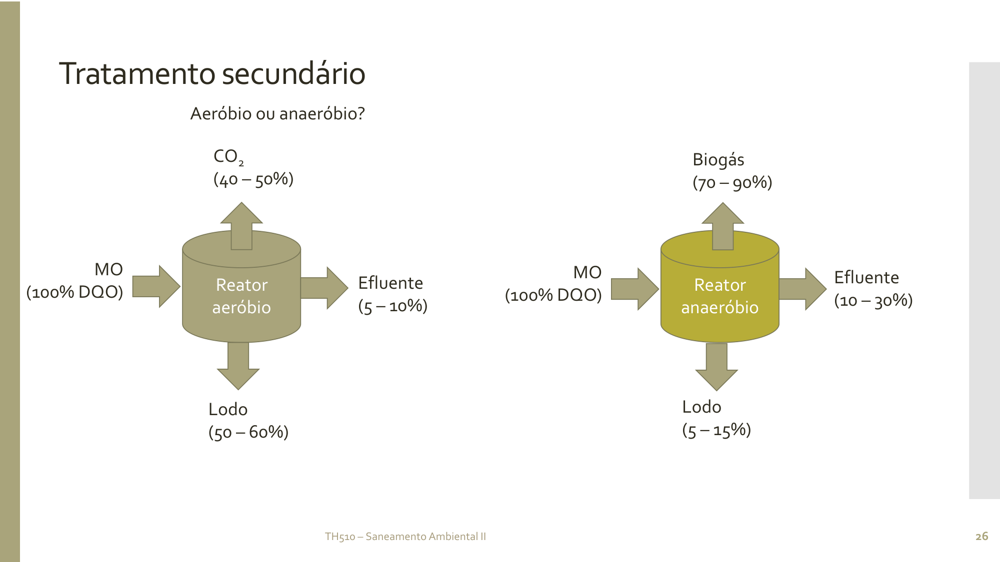
          <div class="slide-caption">
            <span>Slide Chave (05.1 p.21): Balanço de Massa e Energia (DQO) — Aeróbio vs. Anaeróbio</span>
            <span>🔍 Clique para ampliar</span>
          </div>
        </div>
        <div class="callout callout-purple" style="margin-top:8px;">
          <div class="callout-title">🔥 Argumento Coringa de Prova: Aeróbio vs. Anaeróbio</div>
          No <strong>Reator Anaeróbio</strong>, <strong>70 a 90% da DQO</strong> vira <strong>Biogás ($\text{CH}_4$)</strong> e apenas <strong>5 a 15% vira Lodo</strong> (já estabilizado!), sem gastar energia com aeração, mas sobram <strong>10 a 30% no efluente</strong> (exigindo pós-tratamento). Já no <strong>Reator Aeróbio</strong>, <strong>50 a 60% da DQO vira Lodo</strong> (alta produção de biomassa devido ao alto rendimento energético da respiração com $\text{O}_2$), gasta-se muita energia elétrica, mas o efluente final retém apenas <strong>5 a 10% da DQO</strong>!
        </div>
      </div>
    </div>
  </div>

  <!-- MATRIZ COMPARATIVA GERAL DE SISTEMAS -->
  <div class="card">
    <div class="card-header">
      <h2 class="card-title">⚖️ Matriz Comparativa de Tecnologias (Eficiência, Área, Energia e Lodo)</h2>
      <span class="badge badge-blue">Von Sperling (1996) — Slides 05.1 p.19 e p.22</span>
    </div>
    <p>Use esta tabela para responder questões do tipo: <em>"Qual sistema você recomendaria para o município X e por quê?"</em> ou <em>"Compare o sistema A com o sistema B"</em>:</p>
    <div class="table-wrap">
      <table>
        <thead>
          <tr>
            <th>Sistema de Tratamento</th>
            <th>Remoção DBO (%)</th>
            <th>Remoção N / P (%)</th>
            <th>Remoção Coliformes (%)</th>
            <th>Área ($m^2/\text{hab}$)</th>
            <th>Potência ($W/\text{hab}$)</th>
            <th>TDH (dias)</th>
            <th>Lodo Gerado ($L/(\text{hab}\cdot\text{ano})$)</th>
            <th>Onde é mais adequado / Justificativa</th>
          </tr>
        </thead>
        <tbody>
          <tr>
            <td><strong>Tratamento Preliminar</strong><br>(Grade + Desarenador)</td>
            <td>0 – 5%</td>
            <td>~0% / ~0%</td>
            <td>~0%</td>
            <td>&lt; 0,001</td>
            <td>~0</td>
            <td>Segundos / Minutos</td>
            <td>— (Areia + Grosseiros)</td>
            <td><strong>Obrigatório em todas as ETEs.</strong> Protege bombas, tubulações e reatores contra abrasão e obstrução.</td>
          </tr>
          <tr>
            <td><strong>Tratamento Primário</strong><br>(Decantador Primário)</td>
            <td>25 – 40%</td>
            <td>10–25% / 10–20%</td>
            <td>30 – 40%</td>
            <td>0,03 – 0,05</td>
            <td>~0</td>
            <td>0,1 – 0,5<br>(1 a 3 h)</td>
            <td>600 – 1300<br><em>(Lodo cru/instável!)</em></td>
            <td>A montante de Lodos Ativados Convencional ou Filtros Biológicos para aliviar carga orgânica particulada. <strong>Tendência atual: substituir por UASB!</strong></td>
          </tr>
          <tr>
            <td><strong>Tanque Séptico + Filtro Anaeróbio</strong> (NBR 17076)</td>
            <td>70 – 90%<br><em>(TS só: 30–60%)</em></td>
            <td>10–25% / 10–20%</td>
            <td>60 – 90%</td>
            <td>0,2 – 0,4</td>
            <td>~0</td>
            <td>1,0 – 2,0</td>
            <td>70 – 100<br><em>(Digerido)</em></td>
            <td><strong>Sistemas descentralizados / pequeno porte</strong> ($\le 12.000\text{ L/d}$, condomínios, zonas rurais sem rede coletora). Sem consumo elétrico.</td>
          </tr>
          <tr>
            <td><strong>Lagoa Facultativa (LF)</strong></td>
            <td>70 – 85%</td>
            <td>30–50% / 20–60%</td>
            <td>60 – 99%</td>
            <td><strong>2,0 – 5,0</strong><br><em>(Muito alta!)</em></td>
            <td>~0</td>
            <td>15 – 30<br>(até 45 d)</td>
            <td>35 – 90<br><em>(Acumula no fundo)</em></td>
            <td>Regiões com <strong>ampla disponibilidade de área barata</strong>, clima quente e insolação elevada; operação extremamente simples.</td>
          </tr>
          <tr>
            <td><strong>Sistema Australiano</strong><br>(Lagoa Anaeróbia + LF)</td>
            <td>70 – 90%</td>
            <td>30–50% / 20–60%</td>
            <td>60 – 99,9%<br><em>(+LM: &gt;99,99%)</em></td>
            <td><strong>1,5 – 3,5</strong><br><em>(Reduz ~30%!)</em></td>
            <td>~0</td>
            <td>12 – 24</td>
            <td>55 – 160</td>
            <td>A Lagoa Anaeróbia (profunda, 3–5 m) retém 50–60% da DBO em pequeno volume, <strong>economizando ~30% da área total</strong> em relação à LF única. Risco de odor na LA se sobrecarregada.</td>
          </tr>
          <tr>
            <td><strong>Lagoa Aerada Facultativa / Mistura Completa</strong></td>
            <td>70 – 90%</td>
            <td>30–50% / 20–60%</td>
            <td>60 – 99%</td>
            <td>0,2 – 0,5</td>
            <td>1,0 – 1,7</td>
            <td>4 – 10</td>
            <td>30 – 100</td>
            <td>Quando se deseja reduzir a área das lagoas naturais mantendo simplicidade moderada, ao custo de energia para aeradores mecânicos.</td>
          </tr>
          <tr>
            <td><strong>Reator UASB / RAFA</strong><br>(Manta de Lodo)</td>
            <td>60 – 80%<br><em>(média ~70%)</em></td>
            <td>10–25% / 10–20%</td>
            <td>60 – 90%</td>
            <td><strong>0,05 – 0,10</strong><br><em>(Muito compacta!)</em></td>
            <td><strong>~0</strong><br><em>(Gera biogás!)</em></td>
            <td>0,3 – 0,5<br>(6 a 10 h)</td>
            <td><strong>70 – 100</strong><br><em>(Baixo e já estabilizado!)</em></td>
            <td><strong>Padrão ouro no Brasil (clima quente):</strong> substitui decantador primário + parte do secundário, baixíssimo custo de energia e lodo já estabilizado, mas <strong>exige pós-tratamento</strong> para atingir DBO &lt; 60 mg/L ou remover N/P/patógenos.</td>
          </tr>
          <tr>
            <td><strong>Lodos Ativados Convencional</strong></td>
            <td>85 – 93%</td>
            <td>30–40% / 30–45%<br><em>(Maior c/ BNR)</em></td>
            <td>60 – 90%</td>
            <td>0,2 – 0,3</td>
            <td>1,5 – 2,8</td>
            <td>0,4 – 0,6<br>($\theta_c$: 4–15 d)</td>
            <td><strong>1100 – 1500</strong><br><em>(Alto! Exige digestor!)</em></td>
            <td>Grandes populações com <strong>pouca área disponível</strong> e exigência de alta qualidade do efluente. Exige decantador primário, digestor de lodo e operação especializada.</td>
          </tr>
          <tr>
            <td><strong>Lodos Ativados — Aeração Prolongada</strong></td>
            <td><strong>93 – 98%</strong><br><em>(Altíssima!)</em></td>
            <td>15–30% / 10–20%</td>
            <td>65 – 90%</td>
            <td>0,25 – 0,35</td>
            <td><strong>2,5 – 4,0</strong><br><em>(Mais alto!)</em></td>
            <td>0,8 – 1,2<br>($\theta_c &gt; 18\text{ d}$)</td>
            <td>700 – 1200<br><em>(Já sai estabilizado!)</em></td>
            <td>Altíssima eficiência de DBO e <strong>dispensa decantador primário e digestor de lodo</strong> (biomassa em respiração endógena), porém tem o maior consumo energético.</td>
          </tr>
          <tr>
            <td><strong>Wetlands Construídas</strong><br>(FSSH / FSSV)</td>
            <td>80 – 95%<br><em>(Pós-TS)</em></td>
            <td>30–80% / 20–70%</td>
            <td>90 – 99,5%</td>
            <td>0,8 – 2,0 (FV)<br>2,0 – 5,0 (FH)</td>
            <td>~0</td>
            <td>0,5 – 15<br>(Bruto $\ge 2{,}5$)</td>
            <td>Mínimo (poda das macrófitas)</td>
            <td>Pós-tratamento de Tanque Séptico ou UASB em comunidades pequenas/médias; excelente remoção estética/paisagística e de N (especialmente híbrido FV+FH).</td>
          </tr>
        </tbody>
      </table>
    </div>
    <div class="grid-2" style="margin-top:14px;">
      <div class="slide-box">
        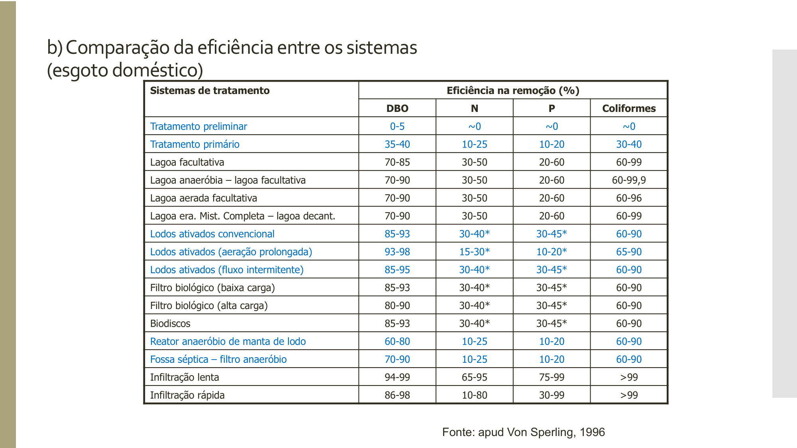
        <div class="slide-caption"><span>Slide 05.1 p.19 — Eficiências Típicas de Remoção (Von Sperling)</span><span>🔍 Ampliar</span></div>
      </div>
      <div class="slide-box">
        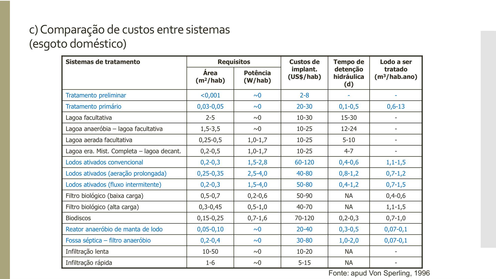
        <div class="slide-caption"><span>Slide 05.1 p.22 — Requisitos de Área, Potência, TDH e Lodo</span><span>🔍 Ampliar</span></div>
      </div>
    </div>
  </div>

  <!-- GUIA DE DIAGNÓSTICO DE PROBLEMAS OPERACIONAIS -->
  <div class="card">
    <div class="card-header">
      <h2 class="card-title">🩺 Guia Rápido de Diagnóstico de Problemas e Justificativas de Projeto</h2>
      <span class="badge badge-red">Alta Probabilidade na Prova!</span>
    </div>
    <p>Se a questão apresentar um problema operacional em uma ETE ou perguntar o que acontece se um limite for violado, use esta matriz causa-efeito-solução:</p>
    <div class="table-wrap">
      <table>
        <thead>
          <tr>
            <th>Unidade / Sistema</th>
            <th>Problema / Sintoma Observado</th>
            <th>Diagnóstico Técnico (Causa Raiz)</th>
            <th>Solução / Prevenção no Projeto</th>
          </tr>
        </thead>
        <tbody>
          <tr>
            <td><strong>Desarenador (Caixa de Areia)</strong></td>
            <td>Areia com mau cheiro (putrefação) ou areia passando para os reatores seguintes.</td>
            <td>
              • Se $v_h &lt; 0{,}25\text{ m/s}$: velocidade muito baixa faz sedimentar matéria orgânica junto com a areia.<br>
              • Se $v_h &gt; 0{,}40\text{ m/s}$ ou $\text{TAS} &gt; 1300\text{ m}^3/(\text{m}^2\cdot\text{d)}$: arraste hidrodinâmico das partículas de areia ($d \ge 0{,}2\text{ mm}$).
            </td>
            <td>Instalar <strong>Calha Parshall a jusante com degrau $z$</strong> calculado para manter $v_h \approx 0{,}30\text{ m/s}$ constante entre $Q_{\text{mín}}$ e $Q_{\text{máx}}$, e usar $L \ge 1{,}5 \cdot (v_h/v_s)\cdot h = 30h$.</td>
          </tr>
          <tr>
            <td><strong>Decantador Primário</strong></td>
            <td>Sépticidade, bolhas de gás, flotação de lodo escuro e forte odor no decantador.</td>
            <td>Tempo de detenção hidráulica ($\theta_H$) excessivo (&gt; 3 h na vazão média) ou atraso no descarte do lodo primário, iniciando fermentação anaeróbia no fundo.</td>
            <td>Garantir $\theta_H &lt; 3\text{ h}$ para $Q_{\text{méd}}$ (e $&gt; 1\text{ h}$ para $Q_{\text{máx}}$), inclinação das paredes do poço de lodo $\ge 1{,}5\text{V}:1\text{H}$ e descarte frequente para digestão.</td>
          </tr>
          <tr>
            <td><strong>Lagoa Anaeróbia (LA)</strong></td>
            <td>Exalação intensa de mau cheiro ($\text{H}_2\text{S}$ — gás sulfídrico) ou lagoa ficando verde (facultativa).</td>
            <td>
              • <strong>Mau cheiro:</strong> Sobrecarga orgânica ($\lambda_v &gt; 400\text{ g DBO}/(\text{m}^3\cdot\text{d)}$ ou $\lambda_s &gt; 2000\text{ kg}/(\text{ha}\cdot\text{d)}$), queda de pH (&lt; 6,0) inibindo metanogênicas, ou competição com bactérias redutoras de sulfato ($\text{SO}_4^{2-} \to \text{H}_2\text{S}$).<br>
              • <strong>Lavagem de biomassa:</strong> $T_d &lt; 3\text{ dias}$ (saída das metanogênicas maior que sua taxa de reprodução).<br>
              • <strong>Oxigenação letal:</strong> $T_d &gt; 6\text{ dias}$ ou $\lambda_s$ muito baixa permite crescimento de algas e produção de $\text{O}_2$, que é letal às metanogênicas.
            </td>
            <td>Manter $3\text{ d} \le T_d \le 6\text{ d}$, profundidade de $3\text{ a }5\text{ m}$ (reduz penetração de luz), $\lambda_v$ recomendada $\approx 250\text{ g}/(\text{m}^3\cdot\text{d)}$, distância mínima de $500\text{ m}$ de residências e barreira vegetal.</td>
          </tr>
          <tr>
            <td><strong>Lagoa Facultativa (LF)</strong></td>
            <td>Queda brusca de OD durante o dia, proliferação de odor e cor cinza/escura.</td>
            <td>Taxa de aplicação superficial ($\lambda_s$) acima do limite máximo suportado pelo clima local (McGarry &amp; Pescod), ou sombreamento/excesso de SST impedindo a fotossíntese das algas na zona fótica.</td>
            <td>Dimensionar $\lambda_s$ pela temperatura do mês mais frio com fator de segurança ($0{,}67 \cdot \lambda_{s,\text{máx}}$), profundidade $1{,}5\text{ a }2{,}0\text{ m}$ ($&gt;0{,}60\text{ m}$ para evitar vegetação emergente e mosquitos).</td>
          </tr>
          <tr>
            <td><strong>Reator UASB / RAFA</strong></td>
            <td>Perda excessiva de sólidos (lodo arrastado no efluente) ou entrada de biogás na câmara de decantação.</td>
            <td>
              • <strong>Arraste de lodo:</strong> Velocidade ascensional alta ($v_{\text{asc}} &gt; 0{,}7\text{ m/h}$ na $Q_{\text{méd}}$ ou $&gt; 1{,}2\text{ m/h}$ na $Q_{\text{máx}}$) ou velocidade nas aberturas para o decantador alta ($v_p &gt; 2{,}5\text{ m/h}$ na $Q_{\text{méd}}$ ou $&gt; 4{,}0\text{ m/h}$ na $Q_{\text{máx}}$).<br>
              • <strong>Gás no decantador (turbulência):</strong> Falha no trespasse do defletor de gases (&lt; 0,15 m) ou parede inclinada do separador trifásico &lt; $50^\circ$ (acumula lodo na parede).
            </td>
            <td>Respeitar rigorosamente os limites da NBR 12209/11: $\theta_H \ge 8\text{ h}$ ($18\text{--}21^\circ\text{C}$), $v_{\text{asc}} \le 0{,}7 / 1{,}2\text{ m/h}$, $v_p \le 2{,}5 / 4{,}0\text{ m/h}$, trespasse $\ge 0{,}15\text{ m}$, ângulo $\theta \ge 50^\circ$ e $\text{TAS}_{\text{dec}} \le 1{,}2\text{ m}^3/(\text{m}^2\cdot\text{h)}$.</td>
          </tr>
          <tr>
            <td><strong>Lodos Ativados</strong></td>
            <td>Intumescimento do lodo (<em>bulking</em> filamentoso), baixa sedimentabilidade no decantador secundário ou flotação por desnitrificação.</td>
            <td>
              • Crescimento excessivo de bactérias filamentosas por baixa disponibilidade de substrato/OD.<br>
              • Desnitrificação descontrolada no decantador secundário ($\text{NO}_3^- \to \text{N}_2$ gasoso que arrasta flocos para a superfície).<br>
              • Queda na concentração de biomassa $X_V$ no reator por razão de recirculação $R$ insuficiente.
            </td>
            <td>Instalar <strong>Seletor Anóxico / Biológico</strong> a montante do tanque de aeração (alta relação $A/M \ge 3$ no convencional ou $\ge 1{,}8$ na aeração prolongada favorece bactérias formadoras de floco e promove desnitrificação controlada) e ajustar $R = X/(X_R - X)$.</td>
          </tr>
          <tr>
            <td><strong>Wetlands Construídas</strong></td>
            <td>Escoamento superficial indesejado no FSSH, colmatação (entupimento do meio suporte) e queda na remoção de amônia ($\text{NH}_4^+$).</td>
            <td>
              • <strong>Colmatação:</strong> Excesso de sólidos suspensos afluentes sem pré-tratamento adequado ou taxa superficial orgânica excessiva ($&gt; 250\text{ g DBO}/(\text{m}^2\cdot\text{d)}$ na seção transversal).<br>
              • <strong>Baixa nitrificação no FSSH:</strong> Meio subsuperficial saturado contínuo tem pouco $\text{O}_2$ livre.
            </td>
            <td>Prever Tanque Séptico/Decantador a montante, respeitar relação $L:B \ge 2:1$, declividade de fundo $0{,}5\text{ a }1\%$ e usar <strong>Sistema Híbrido (FSSV $\to$ FSSH)</strong>: o vertical intermitente oxigena e nitrifica ($\text{NH}_4^+ \to \text{NO}_3^-$) e o horizontal anóxico desnitrifica ($\text{NO}_3^- \to \text{N}_2$).</td>
          </tr>
        </tbody>
      </table>
    </div>
  </div>

</section>

<!-- ===============================================================
     ABA 5: GUIA ESTRATÉGICO DE TEORIA & INTENÇÃO DE PROVA
     =============================================================== -->
<section id="tab-guia-teoria" class="tab-section">
  <div class="card" style="border-left: 5px solid #0284c7; background: #ffffff;">
    <div class="card-header" style="border-bottom: 1px solid #e2e8f0; padding-bottom: 12px; margin-bottom: 16px;">
      <h2 class="card-title" style="color: #0369a1; font-size: 1.4rem;">🎯 Guia Estratégico de Teoria: Intenção, Reconhecimento de Problemas & Gabarito Discursivo</h2>
      <p style="color: #64748b; font-size: 0.95rem;">
        Para quando você olhar uma questão na prova e se perguntar: <em>"O que está acontecendo aqui? Qual é a intenção do sistema? O que a professora quer que eu justifique mesmo se eu travar nos números?"</em>
      </p>
    </div>

    <!-- TEMA 1 -->
    <div style="background: #f8fafc; border: 1px solid #cbd5e1; border-radius: 8px; padding: 18px; margin-bottom: 20px;">
      <h3 style="color: #0f172a; display: flex; align-items: center; gap: 8px; font-size: 1.15rem; margin-bottom: 10px;">
        <span style="background: #0284c7; color: white; border-radius: 4px; padding: 2px 8px; font-size: 0.85rem;">TEMA 1</span>
        🧪 Caracterização do Esgoto, Diluição & Qualidade dos Corpos Hídricos
      </h3>
      <div style="display: grid; grid-template-columns: 1fr 1fr; gap: 14px;">
        <div style="background: white; padding: 12px; border-radius: 6px; border-left: 3px solid #0284c7;">
          <strong style="color: #0369a1; display: block; margin-bottom: 4px;">🔍 O que identificar no enunciado:</strong>
          <ul style="font-size: 0.88rem; color: #334155; margin-left: 18px; line-height: 1.5;">
            <li>População atual e horizonte de projeto (taxa de crescimento geométrica).</li>
            <li>Concentrações de DBO/DQO afluentes ou lançamentos industriais.</li>
            <li>Dados do rio receptor: vazão de estiagem ($Q_{7,10}$ ou $Q_{95\%}$), OD inicial, DBO a montante e classe de enquadramento (CONAMA 357).</li>
          </ul>
        </div>
        <div style="background: white; padding: 12px; border-radius: 6px; border-left: 3px solid #0d9488;">
          <strong style="color: #0f766e; display: block; margin-bottom: 4px;">🎯 Qual a intenção do sistema e da questão:</strong>
          <ul style="font-size: 0.88rem; color: #334155; margin-left: 18px; line-height: 1.5;">
            <li>Determinar a <strong>vazão de pico de dimensionamento</strong> ($Q_{	ext{máx,h}}$ com $k_1 \cdot k_2 = 1{,}8$) e a <strong>carga poluidora</strong> ($W = Q \cdot C / 1000$).</li>
            <li>Avaliar se o rio aguenta a carga ou se haverá deficit de oxigênio (zona séptica / peixes mortos).</li>
            <li>Calcular a <strong>eficiência mínima de remoção ($E$)</strong> que a futura ETE deve ter para o rio não violar a classe legal.</li>
          </ul>
        </div>
      </div>
      <div style="background: #eff6ff; border: 1px dashed #3b82f6; border-radius: 6px; padding: 10px 14px; margin-top: 10px;">
        <strong style="color: #1d4ed8; font-size: 0.88rem;">✍️ Argumentos teóricos e justificativas para preencher na resposta:</strong>
        <p style="font-size: 0.86rem; color: #1e3a8a; margin-top: 4px; line-height: 1.5;">
          • <em>"A relação DQO/DBO típica de esgoto estritamente doméstico situa-se entre 1,8 e 2,2, indicando fração altamente biodegradável ideal para tratamento biológico."</em><br>
          • <em>"O coeficiente de retorno R = 0,80 reflete que 80% da água fornecida retorna à rede como efluente, enquanto os 20% restantes são consumidos em evaporação, rega e perdas."</em><br>
          • <em>"A verificação da mistura rio-efluente no modelo de Streeter-Phelps assume mistura instantânea e completa na seção de lançamento; o ponto crítico de oxigênio dissolvido ocorrerá a jusante, onde a taxa de consumo de DBO pelos microrganismos (k1) supera a taxa de reaeração atmosférica (k2)."</em>
        </p>
      </div>
    </div>

    <!-- TEMA 2 -->
    <div style="background: #f8fafc; border: 1px solid #cbd5e1; border-radius: 8px; padding: 18px; margin-bottom: 20px;">
      <h3 style="color: #0f172a; display: flex; align-items: center; gap: 8px; font-size: 1.15rem; margin-bottom: 10px;">
        <span style="background: #d97706; color: white; border-radius: 4px; padding: 2px 8px; font-size: 0.85rem;">TEMA 2</span>
        ⚙️ Tratamento Preliminar: Gradeamento, Calha Parshall & Desarenador
      </h3>
      <div style="display: grid; grid-template-columns: 1fr 1fr; gap: 14px;">
        <div style="background: white; padding: 12px; border-radius: 6px; border-left: 3px solid #d97706;">
          <strong style="color: #b45309; display: block; margin-bottom: 4px;">🔍 O que identificar no enunciado:</strong>
          <ul style="font-size: 0.88rem; color: #334155; margin-left: 18px; line-height: 1.5;">
            <li>Vazões extremas horárias: início de plano ($Q_{	ext{mín},i}$) e fim de plano ($Q_{	ext{máx},f}$).</li>
            <li>Largura de garganta da calha Parshall ($W$) e seus coeficientes empíricos $K$ e $n$.</li>
            <li>Presença de areia e materiais grosseiros abrasivos.</li>
          </ul>
        </div>
        <div style="background: white; padding: 12px; border-radius: 6px; border-left: 3px solid #0d9488;">
          <strong style="color: #0f766e; display: block; margin-bottom: 4px;">🎯 Qual a intenção do sistema e da questão:</strong>
          <ul style="font-size: 0.88rem; color: #334155; margin-left: 18px; line-height: 1.5;">
            <li><strong>Proteção mecânica estrita:</strong> não remove DBO dissolvida ($0\%$ eficiência orgânica). Serve para proteger bombas contra entupimento e tubulações/reatores contra abrasão e assoreamento.</li>
            <li><strong>Controle hidráulico de nível:</strong> a calha Parshall controla a altura da lâmina no desarenador para que a velocidade horizontal se mantenha constante.</li>
            <li>Garantir que a Parshall opere com <strong>escoamento livre</strong> através do degrau $z$ no fundo a jusante.</li>
          </ul>
        </div>
      </div>
      <div style="background: #fffbeb; border: 1px dashed #f59e0b; border-radius: 6px; padding: 10px 14px; margin-top: 10px;">
        <strong style="color: #b45309; font-size: 0.88rem;">✍️ Argumentos teóricos e justificativas para preencher na resposta:</strong>
        <p style="font-size: 0.86rem; color: #78350f; margin-top: 4px; line-height: 1.5;">
          • <strong>Por que velocidade horizontal rigorosa em $v_h pprox 0{,}30	ext{ m/s}$?</strong> <em>"Se $v_h < 0{,}25	ext{ m/s}$, a matéria orgânica putrescível decanta junto com a areia, gerando mau cheiro e inviabilizando o descarte da areia. Se $v_h > 0{,}40	ext{ m/s}$, as partículas de areia sofrem ressuspensão hidrodinâmica e entram no reator biológico."</em><br>
          • <strong>Por que adicionar 50% no comprimento ($L = 1{,}5 \cdot L_{	ext{teórico}}$)?</strong> <em>"Para absorver as zonas de turbulência transitória nas seções de entrada e saída, assegurando escoamento laminar na zona útil de sedimentação."</em><br>
          • <strong>Por que o degrau $z$?</strong> <em>"O degrau compensa as perdas de carga e rebaixa a linha de energia a jusante, garantindo que o afogamento permaneça abaixo do limite crítico (ex: 60% a 70%), mantendo a calha em regime crítico de medição."</em>
        </p>
      </div>
    </div>

    <!-- TEMA 3 -->
    <div style="background: #f8fafc; border: 1px solid #cbd5e1; border-radius: 8px; padding: 18px; margin-bottom: 20px;">
      <h3 style="color: #0f172a; display: flex; align-items: center; gap: 8px; font-size: 1.15rem; margin-bottom: 10px;">
        <span style="background: #16a34a; color: white; border-radius: 4px; padding: 2px 8px; font-size: 0.85rem;">TEMA 3</span>
        🏗️ Tratamento Primário: Decantadores Convencionais (NBR 12209)
      </h3>
      <div style="display: grid; grid-template-columns: 1fr 1fr; gap: 14px;">
        <div style="background: white; padding: 12px; border-radius: 6px; border-left: 3px solid #16a34a;">
          <strong style="color: #15803d; display: block; margin-bottom: 4px;">🔍 O que identificar no enunciado:</strong>
          <ul style="font-size: 0.88rem; color: #334155; margin-left: 18px; line-height: 1.5;">
            <li>Vazão de projeto ($ar{Q}$ e $Q_{	ext{máx}}$) e teor de Sólidos Suspensos Totais (SST).</li>
            <li>Geometria solicitada (geralmente circular com raspador mecânico central).</li>
            <li>Exigências normativas de Taxa de Aplicação Superficial (TAS), TDH e taxa no vertedor ($q_L$).</li>
          </ul>
        </div>
        <div style="background: white; padding: 12px; border-radius: 6px; border-left: 3px solid #0d9488;">
          <strong style="color: #0f766e; display: block; margin-bottom: 4px;">🎯 Qual a intenção do sistema e da questão:</strong>
          <ul style="font-size: 0.88rem; color: #334155; margin-left: 18px; line-height: 1.5;">
            <li>Sedimentação física Tipo II (floculenta) para remoção de <strong>sólidos sedimentáveis</strong> e alívio da carga nos reatores secundários.</li>
            <li>Eficiência esperada: <strong>50% a 70% de remoção de SST</strong> e <strong>25% a 35% de remoção de DBO particulada</strong>.</li>
            <li>A matéria orgânica dissolvida <strong>não</strong> é removida aqui (passa intacta para o biológico).</li>
          </ul>
        </div>
      </div>
      <div style="background: #f0fdf4; border: 1px dashed #22c55e; border-radius: 6px; padding: 10px 14px; margin-top: 10px;">
        <strong style="color: #15803d; font-size: 0.88rem;">✍️ Argumentos teóricos e justificativas para preencher na resposta:</strong>
        <p style="font-size: 0.86rem; color: #14532d; margin-top: 4px; line-height: 1.5;">
          • <em>"A área superficial é dimensionada pela Taxa de Aplicação Superficial (TAS = 30 a 40 m³/m²·d na média e máx 60 m³/m²·d no pico), pois a velocidade crítica de sedimentação dos flocos deve ser estritamente superior à velocidade ascensional da massa líquida."</em><br>
          • <em>"O Tempo de Detenção Hidráulica (TDH = 1,5 a 2,5 h) assegura a coalescência física dos flocos e evita início de fermentação anaeróbia séptica prematura no fundo do decantador."</em><br>
          • <em>"O comprimento da soleira vertedora periférica é verificado para limitar o vertimento a qL ≤ 250 m³/m·d, impedindo correntes ascendentes concentradas de ressuspenderem os sólidos decantados junto às paredes."</em>
        </p>
      </div>
    </div>

    <!-- TEMA 4 -->
    <div style="background: #f8fafc; border: 1px solid #cbd5e1; border-radius: 8px; padding: 18px; margin-bottom: 20px;">
      <h3 style="color: #0f172a; display: flex; align-items: center; gap: 8px; font-size: 1.15rem; margin-bottom: 10px;">
        <span style="background: #0d9488; color: white; border-radius: 4px; padding: 2px 8px; font-size: 0.85rem;">TEMA 4</span>
        ☀️ Lagoas de Estabilização: Sistema Australiano (LA → LF → LM)
      </h3>
      <div style="display: grid; grid-template-columns: 1fr 1fr; gap: 14px;">
        <div style="background: white; padding: 12px; border-radius: 6px; border-left: 3px solid #0d9488;">
          <strong style="color: #0f766e; display: block; margin-bottom: 4px;">🔍 O que identificar no enunciado:</strong>
          <ul style="font-size: 0.88rem; color: #334155; margin-left: 18px; line-height: 1.5;">
            <li>Sequência proposta: Lagoa Anaeróbia isolada, Lagoa Facultativa única ou Sistema Australiano conjugado ($LA 	o LF 	o LM$).</li>
            <li>Temperatura média do ar no mês mais frio ($T$) — dado vital para a equação empírica de Mara.</li>
            <li>Cargas afluentes: <strong>Atenção!</strong> A carga que entra na LF precedida por LA é apenas $(1 - E_{LA})$ da carga inicial (geralmente $40\%$ se $E_{LA} = 60\%$).</li>
          </ul>
        </div>
        <div style="background: white; padding: 12px; border-radius: 6px; border-left: 3px solid #7c3aed;">
          <strong style="color: #6d28d9; display: block; margin-bottom: 4px;">🎯 Qual a intenção do sistema e da questão:</strong>
          <ul style="font-size: 0.88rem; color: #334155; margin-left: 18px; line-height: 1.5;">
            <li><strong>Lagoa Anaeróbia (LA):</strong> Reduzir drasticamente a carga orgânica bruta em área reduzida ($H = 3{,}5 	ext{ a } 5{,}0	ext{ m}$ e $	ext{TDH} = 3 	ext{ a } 6	ext{ d}$), diminuindo o tamanho da facultativa subsequente em até $50\% 	ext{ a } 60\%$.</li>
            <li><strong>Lagoa Facultativa (LF):</strong> Estabilizar a matéria orgânica remanescente por <strong>simbiose mútua algas-bactérias</strong> sem nenhum consumo elétrico externo de aeração mecânica.</li>
            <li><strong>Lagoa de Maturação (LM):</strong> Polimento sanitário e desinfecção natural por radiação solar e pH alcalino sem adição de cloro.</li>
          </ul>
        </div>
      </div>
      <div style="background: #f0fdfa; border: 1px dashed #0d9488; border-radius: 6px; padding: 10px 14px; margin-top: 10px;">
        <strong style="color: #0f766e; font-size: 0.88rem;">✍️ Argumentos teóricos e justificativas para preencher na resposta:</strong>
        <p style="font-size: 0.86rem; color: #134e4a; margin-top: 4px; line-height: 1.5;">
          • <strong>Por que a LA é funda (4m) e a LF é rasa (1,5 a 2m)?</strong> <em>"A Lagoa Anaeróbia precisa de profundidade elevada para minimizar a área de contato com o ar atmosférico, reter o calor interno metabólico e manter anoxia estrita. Já a Lagoa Facultativa deve ser rasa para que os raios solares alcancem a zona fótica e permitam que as microalgas realizem fotossíntese, produzindo o oxigênio necessário às bactérias aeróbias."</em><br>
          • <strong>Por que a taxa de Mara depende da temperatura?</strong> <em>"A atividade fotossintética das algas e a taxa metabólica de oxidação bacteriana são fortemente sensíveis à temperatura e insolação; por isso, a carga máxima admissível $\lambda_{s,	ext{máx}} = 350 \cdot (1{,}085)^{(T-20)}$ é fixada para a pior condição anual (mês mais frio)."</em><br>
          • <strong>Como morrem os coliformes na Lagoa de Maturação?</strong> <em>"O decaimento patogênico em LM decorre da ação combinada da radiação ultravioleta natural do sol, das altas taxas de oxigênio dissolvido geradas pelas algas e do pH alcalino elevado ($> 8{,}5 	ext{ a } 9{,}0$) causado pelo consumo acelerado de gás carbônico durante o dia."</em>
        </p>
      </div>
    </div>

    <!-- TEMA 5 -->
    <div style="background: #f8fafc; border: 1px solid #cbd5e1; border-radius: 8px; padding: 18px; margin-bottom: 20px;">
      <h3 style="color: #0f172a; display: flex; align-items: center; gap: 8px; font-size: 1.15rem; margin-bottom: 10px;">
        <span style="background: #7c3aed; color: white; border-radius: 4px; padding: 2px 8px; font-size: 0.85rem;">TEMA 5</span>
        ⚡ Reatores Anaeróbios de Fluxo Ascendente (UASB / RAFA)
      </h3>
      <div style="display: grid; grid-template-columns: 1fr 1fr; gap: 14px;">
        <div style="background: white; padding: 12px; border-radius: 6px; border-left: 3px solid #7c3aed;">
          <strong style="color: #6d28d9; display: block; margin-bottom: 4px;">🔍 O que identificar no enunciado:</strong>
          <ul style="font-size: 0.88rem; color: #334155; margin-left: 18px; line-height: 1.5;">
            <li>Vazão média e horária máxima de esgoto doméstico ($T \ge 20^\circ	ext{C}$).</li>
            <li>Carga afluente de DQO e concentração afluente.</li>
            <li>Geometria do reator (geralmente prismático retangular com altura útil $H = 4{,}5	ext{ m}$).</li>
            <li>Cotas do separador trifásico (GLS), defletores e velocidade nas frestas de passagem.</li>
          </ul>
        </div>
        <div style="background: white; padding: 12px; border-radius: 6px; border-left: 3px solid #0284c7;">
          <strong style="color: #0369a1; display: block; margin-bottom: 4px;">🎯 Qual a intenção do sistema e da questão:</strong>
          <ul style="font-size: 0.88rem; color: #334155; margin-left: 18px; line-height: 1.5;">
            <li>Tratamento biológico compacto e anaeróbio de alta taxa com **manto denso de lodo e retenção de biomassa**.</li>
            <li>Elimina a necessidade de recirculação externa de lodo (o lodo retorna por gravidade pelo separador GLS).</li>
            <li>Gerar biogás rico em metano ($CH_4 pprox 70\%$) com baixo consumo de energia e baixa produção de lodo excedente estável.</li>
          </ul>
        </div>
      </div>
      <div style="background: #faf5ff; border: 1px dashed #a855f7; border-radius: 6px; padding: 10px 14px; margin-top: 10px;">
        <strong style="color: #7e22ce; font-size: 0.88rem;">✍️ Argumentos teóricos e justificativas para preencher na resposta:</strong>
        <p style="font-size: 0.86rem; color: #581c87; margin-top: 4px; line-height: 1.5;">
          • <strong>Qual a função exata do Separador Trifásico (GLS)?</strong> <em>"O separador GLS é o elemento vital do UASB. Ele divide o reator em zona de digestão inferior e decantador superior. Os defletores de gás capturam as bolhas de metano, impedindo que sua ascensão turbulenta penetre no decantador; com isso, a zona superior torna-se calma e o lodo floculado pode sedimentar e deslizar de volta para o manto de digestão através das frestas inclinadas a 45°-60°."</em><br>
          • <strong>Por que a velocidade ascensional não pode passar de 1,2 m/h no pico?</strong> <em>"A velocidade de sedimentação gravitacional dos grânulos e flocos de lodo anaeróbio varia tipicamente entre 1,0 e 1,5 m/h. Se a velocidade ascensional líquida no pico horário superar 1,2 m/h, as forças de arraste hidrodinâmico superam o peso dos flocos, lavando toda a biomassa para fora do reator e causando colapso do tratamento."</em><br>
          • <strong>Por que limitar a área de influência dos tubos de fundo (1 tubo a cada 2 a 3 m²)?</strong> <em>"Para garantir alimentação homogênea em toda a seção de fundo, evitando canalizações preferenciais de esgoto que passariam pelo manto de lodo sem sofrer degradação biológica."</em><br>
          • <strong>Vantagens e Desvantagens do UASB para justificar na prova:</strong><br>
          &nbsp;&nbsp;✅ <em>Vantagens:</em> Baixíssima demanda de área, baixo custo de implantação/operação (sem sopradores de ar), lodo de descarte já digerido e de fácil desidratação, e produção de biogás aproveitável energeticamente.<br>
          &nbsp;&nbsp;⚠️ <em>Desvantagens/Limitações:</em> Eficiência moderada em DBO (65% a 75%, exigindo pós-tratamento), baixa remoção de patógenos e nutrientes (N e P), e suscetibilidade à emissão de odores ($H_2S$) se o biogás e os vertedores não forem confinados.
        </p>
      </div>
    </div>
  </div>
</div>

<!-- =====================================================================
     ABA 2: RESUMO COMPLETO POR UNIDADE + PRINTS DOS SLIDES
     ===================================================================== -->
<section id="tab-teoria" class="tab-section">

  <nav class="subnav">
    <a href="#mod1">1. Caracterização & Autodepuração</a>
    <a href="#mod2">2. Preliminar & Decantador Primário</a>
    <a href="#mod3">3. Tanque Séptico & Filtro Anaeróbio (NBR 17076)</a>
    <a href="#mod4">4. Lagoas de Estabilização (LA, LF, LM)</a>
    <a href="#mod5">5. UASB, Lodos Ativados & Wetlands</a>
  </nav>

  <!-- MÓDULO 1 -->
  <div id="mod1" class="card">
    <div class="card-header">
      <h2 class="card-title">🧪 Módulo 1: Caracterização do Esgoto, Disposição e Autodepuração (Streeter-Phelps)</h2>
      <span class="badge badge-blue">Slides 04 e 05.1</span>
    </div>

    <div class="grid-2">
      <div>
        <h3>1.1 Frações do Esgoto Doméstico e Segregação na Fonte</h3>
        <ul>
          <li><strong>Composição Global:</strong> <strong>99,92% Água</strong> e <strong>0,08% Sólidos</strong> (Suspensos + Dissolvidos; Orgânicos: proteínas 40–60%, carboidratos 25–50%, óleos/gorduras 10%; Inorgânicos: areia, sais).</li>
          <li><strong>Segregação de Águas Residuárias (Esgoto como Recurso):</strong>
            <ul>
              <li><strong>Água Cinza (75% do volume):</strong> Chuveiro, lavatório, tanque, máquina de lavar (sem fezes/urina). Baixo N e P, menor carga patogênica $\to$ excelente para reúso após tratamento simples!</li>
              <li><strong>Água Negra (25% do volume) = Água Marrom (fezes) + Água Amarela (urina):</strong> Vaso sanitário e pia de cozinha. Concentra a maior parte dos nutrientes (N e P), matéria orgânica e patógenos.</li>
              <li><strong>Urina (500 L/hab.ano):</strong> Rica em ureia, amônia e fosfatos $\to$ potencial de recuperação de fertilizante e precipitação de <strong>estruvita (fósforo)</strong>.</li>
              <li><strong>Fezes (50 L/hab.ano):</strong> 65% proteína, 22,5% carboidrato, 12,5% gordura $\to$ geração de <strong>biogás ($\text{CH}_4$)</strong> e condicionador de solo (compostagem).</li>
            </ul>
          </li>
        </ul>

        <h3 style="margin-top:14px;">1.2 DBO vs. DQO vs. COT</h3>
        <ul>
          <li><strong>$\text{DBO}_{5,20}$ (Demanda Bioquímica de $\text{O}_2$):</strong> Mede o $\text{O}_2$ consumido por microrganismos heterotróficos para degradar a <strong>matéria orgânica biodegradável</strong> em 5 dias a $20^\circ\text{C}$. Esgoto bruto típico: <strong>200 a 500 mg/L (típico: 350 mg/L)</strong>; per capita: <strong>40 a 60 g/(hab.d) (padrão: 54 g/(hab.d))</strong>.</li>
          <li><strong>DQO (Demanda Química de $\text{O}_2$):</strong> Oxidação química forte em 2 a 3 horas. Mede <strong>MO biodegradável + MO não biodegradável</strong> ($\text{DQO} &gt; \text{DBO}$ sempre!). Esgoto bruto típico: <strong>400 a 800 mg/L (típico: 700 mg/L)</strong>; per capita: <strong>80 a 130 g/(hab.d) (típico: 100 g/(hab.d))</strong>.</li>
          <li><strong>COT (Carbono Orgânico Total):</strong> Queima a $900^\circ\text{C}$ (~2 min) medindo $\text{CO}_2$ por infravermelho (carbono total, biodegradável ou não).</li>
        </ul>

        <div class="callout callout-warn">
          <div class="callout-title">📐 Fórmulas Fundamentais de Carga e População Equivalente</div>
          $$\text{Carga Poluente: } W = Q \times C \quad \left[\text{kg/d} = \text{m}^3/\text{d} \times \text{kg/m}^3 = \frac{\text{L/d} \times \text{mg/L}}{10^6}\right]$$
          $$\text{População Equivalente (PE)} = \frac{W_{\text{total (g DBO/d)}}}{54\text{ g DBO/(hab}\cdot\text{d)}} \quad \Big| \quad \text{PHE} = \frac{Q_{\text{total}}}{q_{\text{per capita}}}$$
        </div>
      </div>

      <div>
        <div class="slide-box">
          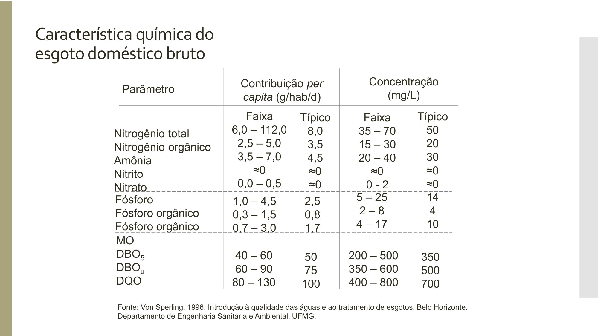
          <div class="slide-caption"><span>Slide 04 p.11 — Faixas e Valores Típicos no Esgoto Bruto (Von Sperling)</span><span>🔍 Ampliar</span></div>
        </div>
        <div class="slide-box">
          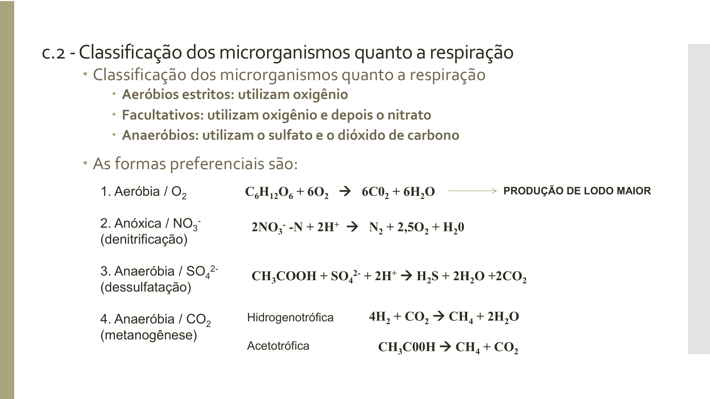
          <div class="slide-caption"><span>Slide 05.1 p.11 — Ordem Preferencial de Aceptores de Elétrons ($\text{O}_2 \to \text{NO}_3^- \to \text{SO}_4^{2-} \to \text{CO}_2$)</span><span>🔍 Ampliar</span></div>
        </div>
      </div>
    </div>

    <hr style="margin: 18px 0; border: none; border-top: 1px solid var(--border);">

    <div class="grid-2">
      <div>
        <h3>1.3 Respiração Microbiana e Crescimento (Disperso vs. Aderido)</h3>
        <ul>
          <li><strong>Ordem Preferencial de Respiração (do maior para o menor rendimento energético/produção de lodo):</strong>
            <ol>
              <li><strong>Aeróbia ($\text{O}_2$):</strong> $\text{C}_6\text{H}_{12}\text{O}_6 + 6\text{O}_2 \to 6\text{CO}_2 + 6\text{H}_2\text{O}$ (Maior produção de lodo!).</li>
              <li><strong>Anóxica ($\text{NO}_3^-$ — Desnitrificação):</strong> Facultativos usam nitrato na ausência de $\text{O}_2$ livre, liberando $\text{N}_2(g)$ para a atmosfera.</li>
              <li><strong>Anaeróbia ($\text{SO}_4^{2-}$ — Dessulfatação):</strong> Gera $\text{H}_2\text{S}$ (gás sulfídrico $\to$ <strong>mau cheiro de ovo podre e corrosão</strong>!).</li>
              <li><strong>Anaeróbia ($\text{CO}_2$ — Metanogênese):</strong> Hidrogenotrófica ($4\text{H}_2 + \text{CO}_2 \to \text{CH}_4 + 2\text{H}_2\text{O}$) e Acetotrófica ($\text{CH}_3\text{COOH} \to \text{CH}_4 + \text{CO}_2$). Menor produção de lodo!</li>
            </ol>
          </li>
          <li><strong>Crescimento Disperso vs. Aderido:</strong>
            <ul>
              <li><strong>Disperso (Flocos em suspensão):</strong> Lagoas e Lodos Ativados. Sem recirculação exige $\theta_H &gt; T_{gc}$ (tempo de geração celular).</li>
              <li><strong>Aderido (Biofilme em meio suporte):</strong> Filtro Anaeróbio, Filtro Biológico Percolador, Biodiscos, Wetlands. Permite $\theta_H &lt; T_{gc}$ porque a biomassa fica retida no suporte!</li>
            </ul>
          </li>
        </ul>

        <h3 style="margin-top:14px;">1.4 Autodepuração e Modelo de Streeter-Phelps (Mistura + Decaimento de DBO)</h3>
        <ul>
          <li><strong>5 Zonas de Autodepuração:</strong> (1) Águas limpas $\to$ (2) Zona de degradação $\to$ (3) Zona de decomposição ativa (OD mínimo/crítico) $\to$ (4) Zona de recuperação $\to$ (5) Águas limpas.</li>
          <li><strong>Equação da Mistura Completa no Ponto de Lançamento ($x=0$):</strong>
            $$C_0 = C_m = \frac{Q_r \cdot C_r + Q_e \cdot C_e}{Q_r + Q_e}$$
          </li>
          <li><strong>Decaimento da DBO no Rio em função do tempo de percurso $t = x / U$:</strong>
            $$C(t) = C_0 \cdot e^{-(k_1 + k_s)\cdot t} \quad \text{onde } k_{1,T} = k_{1,20} \cdot 1{,}047^{(T - 20)}$$
          </li>
        </ul>
      </div>
      <div>
        <div class="slide-box">
          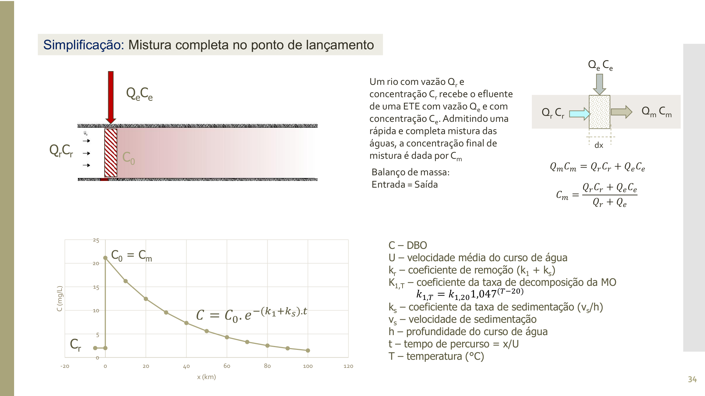
          <div class="slide-caption"><span>Slide 04 p.33 — Balanço de Massa na Mistura e Decaimento de DBO no Rio</span><span>🔍 Ampliar</span></div>
        </div>
      </div>
    </div>
  </div>

  <!-- MÓDULO 2 -->
  <div id="mod2" class="card">
    <div class="card-header">
      <h2 class="card-title">⚙️ Módulo 2: Tratamento Preliminar & Decantador Primário (NBR 12209/2011)</h2>
      <span class="badge badge-teal">Slides 05.2 e 05.5</span>
    </div>

    <div class="grid-2">
      <div>
        <h3>2.1 Tratamento Preliminar (Gradeamento + Caixa de Areia + Calha Parshall)</h3>
        <p><strong>Finalidade exclusiva:</strong> Remoção física de sólidos grosseiros (proteger bombas/tubulações contra obstrução) e areia/minerais inertes (evitar abrasão/desgaste e assoreamento de reatores), além de medir a vazão.</p>
        <ul>
          <li><strong>Ordem de Dimensionamento (Crucial!):</strong> Começa-se de trás para frente! <strong>1º Calha Parshall $\to$ 2º Degrau $z$ $\to$ 3º Caixa de Areia $\to$ 4º Gradeamento</strong>. Por quê? Porque a Calha Parshall controla o nível d'água na Caixa de Areia através do rebaixo/degrau $z$ para manter a velocidade horizontal $v_h$ constante tanto na $Q_{\text{mín}}$ quanto na $Q_{\text{máx}}$!</li>
          <li><strong>Gradeamento (NBR 12209/11):</strong>
            <ul>
              <li><strong>Classificação pelo espaçamento $e$:</strong> Grossa ($40\text{ a }100\text{ mm}$, usual $7{,}5\text{ cm}$), Média ($20\text{ a }40\text{ mm}$, usual $2{,}5\text{ cm}$), Fina ($10\text{ a }20\text{ mm}$), Peneiras ($0{,}25\text{ a }10\text{ mm}$).</li>
              <li><strong>Inclinação $\theta$ com a horizontal:</strong> Limpeza manual: <strong>$45^\circ\text{ a }60^\circ$</strong>; Limpeza mecanizada: <strong>$60^\circ\text{ a }90^\circ$</strong> ($70^\circ\text{ a }85^\circ$ tem melhor rendimento).</li>
              <li><strong>Quando mecanizar obrigatoriamente (NBR 12209):</strong> Vazão máxima final $Q_{\text{máx},f} \ge 100\text{ L/s}$, grande volume retido (típico grade média: $0{,}04\text{ L de material por m}^3$ de esgoto médio) ou canal profundo.</li>
            </ul>
          </li>
          <li><strong>Caixa de Areia (Desarenador — Sedimentação Discreta):</strong>
            <ul>
              <li><strong>Partícula-alvo (NBR 12209):</strong> Diâmetro $\ge 0{,}2\text{ mm}$ e densidade $2{,}65\text{ g/cm}^3 \implies$ velocidade crítica de sedimentação $v_{s,c} = 0{,}021\text{ m/s}$ (ou $2{,}1\text{ a }2{,}4\text{ cm/s}$).</li>
              <li><strong>Velocidade longitudinal $v_h$:</strong> <strong>$0{,}25\text{ a }0{,}40\text{ m/s}$</strong> (ideal $\approx 0{,}30\text{ m/s}$). <em>Justificativa: Se $v_h$ for muito alta, arrasta a areia; se for muito baixa, sedimenta matéria orgânica junto com a areia!</em></li>
              <li><strong>Comprimento $L$:</strong> $L = 1{,}5 \cdot \left(\frac{v_h}{v_s}\right) \cdot h \implies$ para $v_h=0{,}40$ e $v_s=0{,}02$, $L = 1{,}5 \times 20h = \mathbf{30h}$ (fator de segurança $\ge 1{,}5$ para compensar turbulência de entrada/saída).</li>
              <li><strong>Geometria e TAS:</strong> Relação $L/B \ge 3\text{ a }4$ (evitar curtos-circuitos), largura mínima $B \ge 0{,}5\text{ m}$ (ou conforme profundidade total da tabela: $<1\text{m}\to 0{,}60\text{m}$; $1\text{--}2\text{m}\to 0{,}90\text{m}$). <strong>$\text{TAS} = 600\text{ a }1300\text{ m}^3/(\text{m}^2\cdot\text{d)}$</strong> na $Q_{\text{máx}}$ (sem decantador primário, limite superior recomendado de $1000\text{ m}^3/(\text{m}^2\cdot\text{d)}$).</li>
            </ul>
          </li>
          <li><strong>Calha Parshall e Degrau $z$:</strong>
            $$H_p = K \cdot Q^n \quad \implies \quad z = \frac{Q_{\text{máx},f}\cdot H_{p,\text{mín}} - Q_{\text{mín},i}\cdot H_{p,\text{máx}}}{Q_{\text{máx},f} - Q_{\text{mín},i}} \quad \text{com } H_{\text{areia}} = H_p - z$$
          </li>
        </ul>
      </div>

      <div>
        <div class="slide-box">
          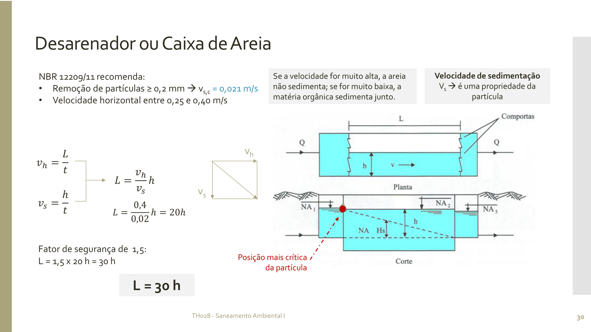
          <div class="slide-caption"><span>Slide 05.2 p.22 — Dedução de $L = 30h$ e Justificativa da Velocidade no Desarenador</span><span>🔍 Ampliar</span></div>
        </div>
        <div class="slide-box">
          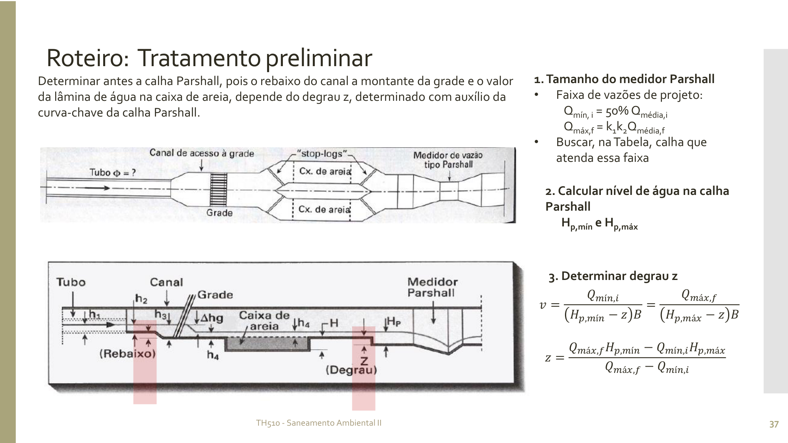
          <div class="slide-caption"><span>Slide 05.2 p.28 — Roteiro Oficial: Parshall $\to$ Níveis $H_p$ $\to$ Degrau $z$</span><span>🔍 Ampliar</span></div>
        </div>
      </div>
    </div>

    <hr style="margin: 18px 0; border: none; border-top: 1px solid var(--border);">

    <div class="grid-2">
      <div>
        <h3>2.2 Tratamento Primário — Decantadores Primários (NBR 12209/2011)</h3>
        <ul>
          <li><strong>Os 4 Tipos de Sedimentação (Pergunta Clássica!):</strong>
            <ol>
              <li><strong>Discreta:</strong> Partículas mantêm tamanho/peso constantes (ocorre no <em>Desarenador</em>).</li>
              <li><strong>Floculenta:</strong> Partículas aglomeram-se durante a queda, aumentando de velocidade (ocorre no <em>Decantador Primário</em>).</li>
              <li><strong>Zonal:</strong> Alta concentração coesiva sedimentando como manta única (ocorre no <em>Decantador Secundário</em>).</li>
              <li><strong>Por Compressão:</strong> Compactação pelo peso das camadas superiores (fundo de <em>Decantadores Secundários e Adensadores de Lodo</em>).</li>
            </ol>
          </li>
          <li><strong>Eficiência Típica do Decantador Primário:</strong> Remove <strong>40 a 60% de SST</strong> e <strong>25 a 35% de DBO</strong>.</li>
          <li><strong>Parâmetros Normativos NBR 12209/2011 (Grifados nos Slides):</strong>
            <ul>
              <li><strong>Vazão de projeto:</strong> <strong>Vazão máxima horária ($Q_{\text{máx,h}}$)</strong> (se houver FBP com recirculação, somar vazão de recirculação).</li>
              <li><strong>Mais de 1 unidade obrigatória:</strong> quando $Q_{\text{projeto}} &gt; 250\text{ L/s}$.</li>
              <li><strong>Taxa de Aplicação Superficial ($\text{TAS} = Q / A$):</strong>
                <ul>
                  <li>Precedendo Filtração Biológica: $\text{TAS} \le 60\text{ m}^3/(\text{m}^2\cdot\text{d)}$;</li>
                  <li>Precedendo Lodos Ativados ou Decantação Quimicamente Assistida (CEPT): $\text{TAS} \le 90\text{ m}^3/(\text{m}^2\cdot\text{d)}$.</li>
                </ul>
              </li>
              <li><strong>Tempo de Detenção Hidráulica ($\theta_H = V / Q$):</strong> Para $Q_{\text{média}}$: $\theta_H &lt; 3\text{ h}$ (evitar septicidade/mau cheiro!); Para $Q_{\text{máx}}$: $\theta_H &gt; 1\text{ h}$ (garantir sedimentação!).</li>
              <li><strong>Taxa no vertedor de saída ($q_L$):</strong> $\le 500\text{ m}^3/(\text{m}\cdot\text{d)}$ para $Q_{\text{máx}}$.</li>
              <li><strong>Decantador sem remoção mecanizada (item 6.3.9):</strong> Circular ou quadrado com $D \le 7\text{ m}$, parede lateral cilíndrica $H_{\text{cil}} \ge 0{,}50\text{ m}$, poço de lodo cônico com inclinação $\ge 1{,}5\text{V}:1\text{H}$ e base inferior $\ge 0{,}60\text{ m}$. O volume útil para cálculo de $\theta_H$ é $V_{\text{útil}} = V_{\text{cil}} + V_{1/3\text{ superior do cone}}$.</li>
            </ul>
          </li>
        </ul>
      </div>
      <div>
        <div class="slide-box">
          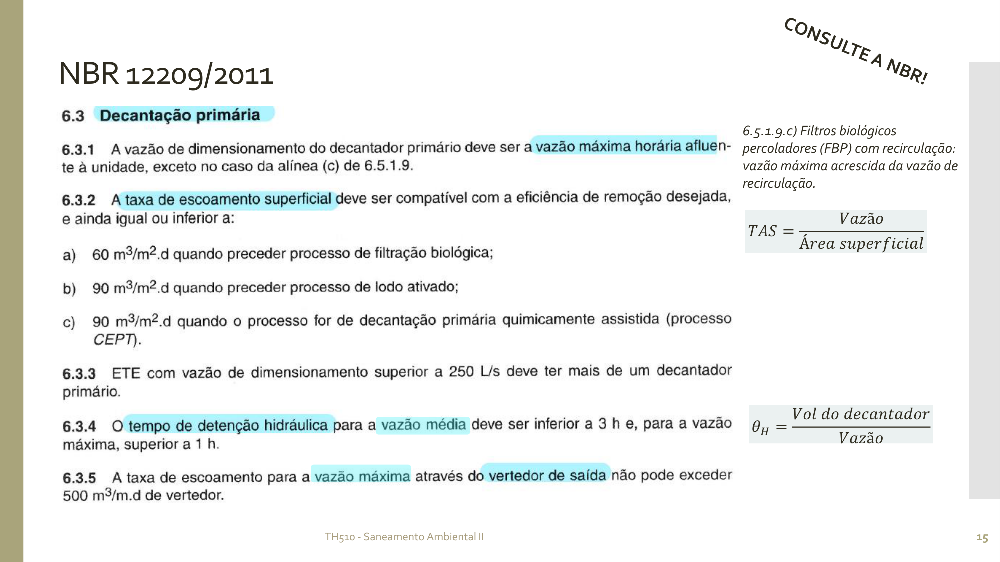
          <div class="slide-caption"><span>Slide 05.5 p.15 — Itens 6.3.1 a 6.3.5 da NBR 12209/2011 Grifados pela Professora</span><span>🔍 Ampliar</span></div>
        </div>
        <div class="slide-box">
          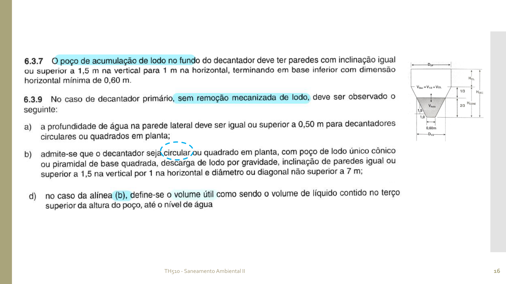
          <div class="slide-caption"><span>Slide 05.5 p.16 — Geometria do Poço de Lodo sem Mecanização ($D \le 7\text{ m}$, $1{,}5\text{V}:1\text{H}$)</span><span>🔍 Ampliar</span></div>
        </div>
      </div>
    </div>
  </div>

  <!-- MÓDULO 3 -->
  <div id="mod4" class="card">
    <div class="card-header">
      <h2 class="card-title">☀️ Módulo 4: Lagoas de Estabilização (Anaeróbia, Facultativa e Maturação)</h2>
      <span class="badge badge-blue">Slide 05.4</span>
    </div>

    <div class="grid-2">
      <div>
        <h3>4.1 Lagoas Anaeróbias (LA — Tratamento Primário/Secundário de Alta Carga)</h3>
        <ul>
          <li><strong>Princípio:</strong> Profundas (<strong>$H = 3\text{ a }5\text{ m}$</strong>) e com alta carga orgânica para impedir a penetração de luz e garantir consumo de $\text{O}_2$ muito superior à produção algal (ausência total de OD). Eficiência: <strong>50% ($T \le 20^\circ\text{C}$) a 60% ($T &gt; 20^\circ\text{C}$)</strong>.</li>
          <li><strong>Taxa de Aplicação Volumétrica ($\lambda_v$):</strong>
            $$\lambda_v = \frac{C_i \cdot Q}{V} = \frac{C_i}{T_d} \quad \left[\text{g DBO}_5/(\text{m}^3\cdot\text{d)}\right]$$
            Faixa: $100\text{ a }400\text{ g}/(\text{m}^3\cdot\text{d)}$ (Recomendado por Silva &amp; Mara: <strong>$250\text{ g}/(\text{m}^3\cdot\text{d)}$</strong>; para $10\text{--}20^\circ\text{C}$: $\lambda_v = 20T - 100$ e Eficiência $E = 2T + 20\%$).
          </li>
          <li><strong>Tempo de Detenção Hidráulica ($T_d$):</strong> <strong>$3\text{ a }6\text{ dias}$</strong> (Nuvolari/Jordão: $3\text{ a }5\text{ d}$ se $T&gt;20^\circ\text{C}$; $4\text{ a }6\text{ d}$ se $T&lt;20^\circ\text{C}$).
            <ul>
              <li><em>Por que não $T_d &lt; 3\text{ d}$?</em> As bactérias metanogênicas saem no efluente mais rápido do que se reproduzem (lavagem celular).</li>
              <li><em>Por que não $T_d &gt; 6\text{ d}$?</em> A lagoa passa a se comportar como facultativa, produzindo $\text{O}_2$ que é letal às metanogênicas.</li>
            </ul>
          </li>
          <li><strong>Verificação da Taxa Superficial na LA:</strong> $\lambda_{\text{mín}} \gg 20 T_{\text{verão}} - 60$ (garantir anaerobiose, tipicamente $&gt; 1000\text{ kg}/(\text{ha}\cdot\text{d)}$) e $\lambda_{\text{máx}} &lt; 2000\text{ kg DBO}/(\text{ha}\cdot\text{d)}$ (evitar maus odores). Relação $L/B$ entre $1\text{ e }3$. Distância $\ge 500\text{ m}$ de áreas urbanas.</li>
          <li><strong>Acúmulo de lodo na LA:</strong> $K = 0{,}03\text{ a }0{,}04\text{ m}^3/(\text{hab}\cdot\text{ano})$ (ou $0{,}003\text{--}0{,}004\text{ m}^3/\text{hab}\cdot\text{d}$ no slide). Limpeza quando atingir metade da profundidade: $n_{\text{anos}} = \frac{0{,}5 \cdot V}{K \cdot \text{Pop}}$.</li>
        </ul>

        <h3 style="margin-top:14px;">4.2 Lagoas Facultativas (LF — Simbiose Algas + Bactérias)</h3>
        <ul>
          <li><strong>Zonas da LF:</strong> Superfície aeróbia (algas fazem fotossíntese de dia liberando $\text{O}_2$ e consumindo $\text{CO}_2$), zona intermediária facultativa e fundo anaeróbio (lodo sedimentado). Profundidade: <strong>$1{,}5\text{ a }2{,}0\text{ m}$</strong> (usual $1{,}8\text{ m}$ na primária; $1{,}5\text{ m}$ na secundária). $T_d = 15\text{ a }45\text{ dias}$.</li>
          <li><strong>Métodos de Dimensionamento da LF:</strong>
            <ol>
              <li><strong>Carga Superficial:</strong> $A_{1/2} = \frac{C_i \cdot Q}{\lambda_s}$ (com $C_i \cdot Q$ em $\text{kg DBO/d}$ e $\lambda_s$ em $\text{kg DBO}/(\text{ha}\cdot\text{d)}$; $1\text{ ha} = 10.000\text{ m}^2$).</li>
              <li><strong>McGarry &amp; Pescod (carga máxima antes de anaerobiose no mês mais frio $T$):</strong>
                $$\lambda_{s,\text{máx}} = 60 \cdot (1{,}0993)^T \quad \text{ou} \quad \lambda_{s,\text{máx}} = 20T - 60 \quad \implies \quad \lambda_{s,\text{projeto}} = 0{,}67 \cdot \lambda_{s,\text{máx}}$$
              </li>
              <li><strong>Mistura Completa (1ª Ordem):</strong> $C_e = \frac{C_i}{1 + k_{1,T}\cdot T_d} \implies A_{1/2} = \frac{Q}{H \cdot k_{1,T}}\left(\frac{C_i}{C_e} - 1\right)$, onde $k_{1,T} = k_{1,20}\cdot \theta^{(T-20)}$ ($k_{1,20} = 0{,}3\text{ d}^{-1}$, $\theta = 1{,}05$).</li>
              <li><strong>Kawai et al. (LF Secundária):</strong> $\lambda_s \in [50, 170]\text{ kg}/(\text{ha}\cdot\text{d)}$; $\lambda_{\text{remov}} = 0{,}7702 \cdot \lambda_{\text{aplic}} - 5{,}4188$; relação $L/B = 6:1\text{ a }7:1$.</li>
            </ol>
          </li>
        </ul>

        <h3 style="margin-top:14px;">4.3 Lagoas de Maturação (LM — Polimento Terciário / Remoção de Patógenos)</h3>
        <ul>
          <li><strong>Foco:</strong> Remoção de coliformes fecais (<strong>90 a 99,99%</strong>). Recebe efluente já tratado ($\text{DBO}_5 &lt; 75\text{ mg/L}$, típico $50\text{--}70\text{ mg/L}$). Profundidade rasa: <strong>$0{,}8\text{ a }1{,}2\text{ m}$</strong> (Nuvolari) ou $1{,}0\text{ a }1{,}5\text{ m}$. $T_d$ mínimo de <strong>3 dias</strong> (ou $7\text{ dias}$ em lagoa única).</li>
          <li><strong>Decaimento Bacteriano (1ª Ordem — Mistura Completa em Série):</strong>
            $$N_e = \frac{N_i}{(1 + k_{b,T}\cdot T_{d,1})(1 + k_{b,T}\cdot T_{d,2})\cdots} \quad \text{com } k_{b,T} = 2{,}6 \cdot (1{,}19)^{(T - 20)} \text{ (ou } k_{b,20} = 0{,}5\text{ a }2{,}5\text{ d}^{-1}\text{)}$$
          </li>
          <li><strong>Fluxo Disperso (Wehner &amp; Wilhelm / Yanez):</strong>
            $$N_e = N_0 \cdot \frac{4 a e^{1/(2d)}}{(1+a)^2 e^{a/(2d)} - (1-a)^2 e^{-a/(2d)}}, \quad a = \sqrt{1 + 4 k_b T_d d}, \quad d = \frac{L/B}{-0{,}261 + 0{,}254(L/B) + 1{,}014(L/B)^2}$$
          </li>
        </ul>
      </div>

      <div>
        <div class="slide-box">
          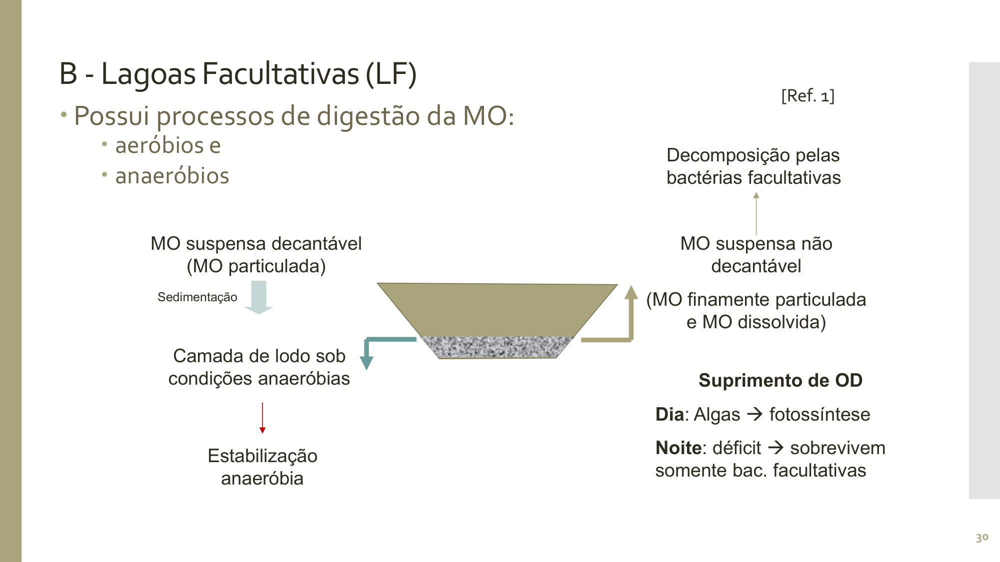
          <div class="slide-caption"><span>Slide 05.4 p.27 — Mecanismo da Lagoa Facultativa (Algas + Bactérias)</span><span>🔍 Ampliar</span></div>
        </div>
        <div class="slide-box">
          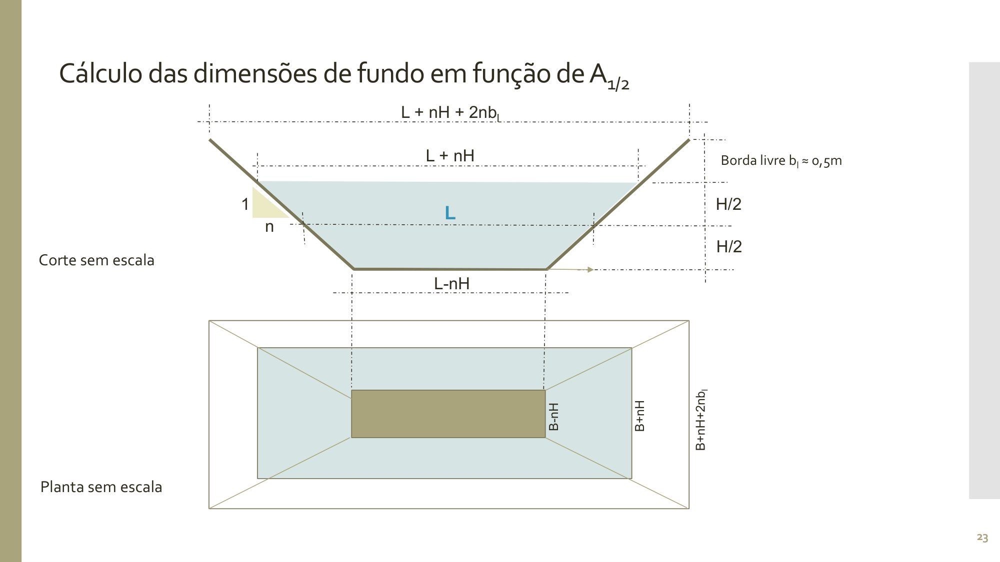
          <div class="slide-caption"><span>Slide 05.4 p.21 — Geometria de Fundo, Meia Profundidade ($A_{1/2}$) e Coroamento dos Taludes</span><span>🔍 Ampliar</span></div>
        </div>
        <div class="slide-box">
          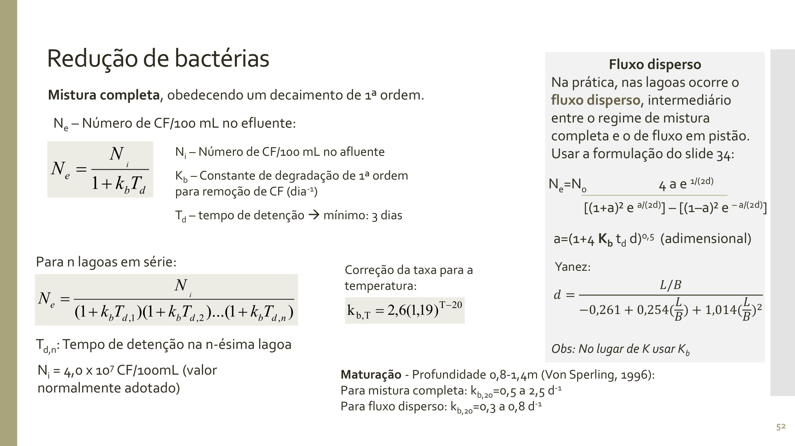
          <div class="slide-caption"><span>Slide 05.4 p.43 — Equações de Remoção de Coliformes nas Lagoas de Maturação</span><span>🔍 Ampliar</span></div>
        </div>
      </div>
    </div>
  </div>

  <!-- MÓDULO 5 -->
  <div id="mod5" class="card">
    <div class="card-header">
      <h2 class="card-title">⚡ Módulo 5: Reatores Anaeróbios de Fluxo Ascendente (UASB / RAFA)</h2>
      <span class="badge badge-purple">Slides 05.6 (UASB e LA) e 05.7 (Wetlands)</span>
    </div>

    <div class="grid-2">
      <div>
        <h3>5.1 Reatores Anaeróbios de Manta de Lodo (UASB / RAFA / RALF) — NBR 12209/2011</h3>
        <ul>
          <li><strong>Princípio:</strong> O esgoto entra distribuído pelo fundo em <strong>fluxo ascendente</strong>, atravessa o leito/manta de lodo anaeróbio denso (onde $\theta_c \gg \theta_H$) e chega ao <strong>separador trifásico (GLS)</strong> no topo: o gás ($\text{CH}_4 + \text{CO}_2$) é desviado pelos defletores para a campânula de gás, o sólido (flocos de lodo) decanta na câmara de decantação e escorrega de volta pelas paredes inclinadas ($\ge 50^\circ$) para a digestão, e o líquido clarificado sai pelas canaletas superiores.</li>
          <li><strong>Todos os Limites da NBR 12209/2011 (Cobrado no Exercício 1 e 2 de UASB!):</strong>
            <ul>
              <li><strong>$\theta_H$ total do reator (p/ $Q_{\text{média}}$, item 6.4.3):</strong> $\ge 10\text{ h}$ ($15\text{--}17^\circ\text{C}$); <strong>$\ge 8\text{ h}$ ($18\text{--}21^\circ\text{C}$)</strong>; $\ge 7\text{ h}$ ($22\text{--}25^\circ\text{C}$); $\ge 6\text{ h}$ ($&gt;25^\circ\text{C}$). ($\text{CHV} &lt; 5\text{ m}^3/(\text{m}^3\cdot\text{d)}$, $\text{COV} &lt; 15\text{ kg DQO}/(\text{m}^3\cdot\text{d)}$).</li>
              <li><strong>Alturas úteis (itens 6.4.5 e 6.4.13):</strong> Altura útil total $H = \mathbf{4{,}0\text{ a }6{,}0\text{ m}}$, sendo <strong>mínimo $2{,}5\text{ m}$</strong> no compartimento de digestão e <strong>mínimo $1{,}5\text{ m}$</strong> no compartimento de decantação (com parede vertical superior $\ge 0{,}30\text{ m}$ e parede inclinada com ângulo <strong>$\theta \ge 50^\circ$</strong>).</li>
              <li><strong>Velocidade ascensional na digestão ($v_{\text{asc}} = Q / A$, item 6.4.8):</strong> <strong>$\le 0{,}7\text{ m/h}$ para $Q_{\text{média}}$</strong> e <strong>$\le 1{,}2\text{ m/h}$ para $Q_{\text{máx}}$</strong>.</li>
              <li><strong>Velocidade nas aberturas para o decantador ($v_p = Q / A_{\text{passagem}}$, item 6.4.9):</strong> <strong>$\le 2{,}5\text{ m/h}$ para $Q_{\text{média}}$</strong> e <strong>$\le 4{,}0\text{ m/h}$ para $Q_{\text{máx}}$</strong>.</li>
              <li><strong>Trespasse do defletor de gases (item 6.4.10):</strong> Exceder em <strong>pelo menos $0{,}15\text{ m}$ ($15\text{ cm}$)</strong> a abertura de passagem para impedir que bolhas de biogás entrem no decantador!</li>
              <li><strong>Compartimento de decantação (itens 6.4.11 e 6.4.12):</strong> $\theta_{H,\text{dec}} \ge 1{,}5\text{ h}$ ($Q_{\text{média}}$) e $&gt; 1{,}0\text{ h}$ ($Q_{\text{máx}}$); $\text{TAS}_{\text{dec}} \le 1{,}2\text{ m}^3/(\text{m}^2\cdot\text{h)}$ ($Q_{\text{máx}}$).</li>
            </ul>
          </li>
        </ul>
      </div>
      <div>
        <div class="slide-box">
          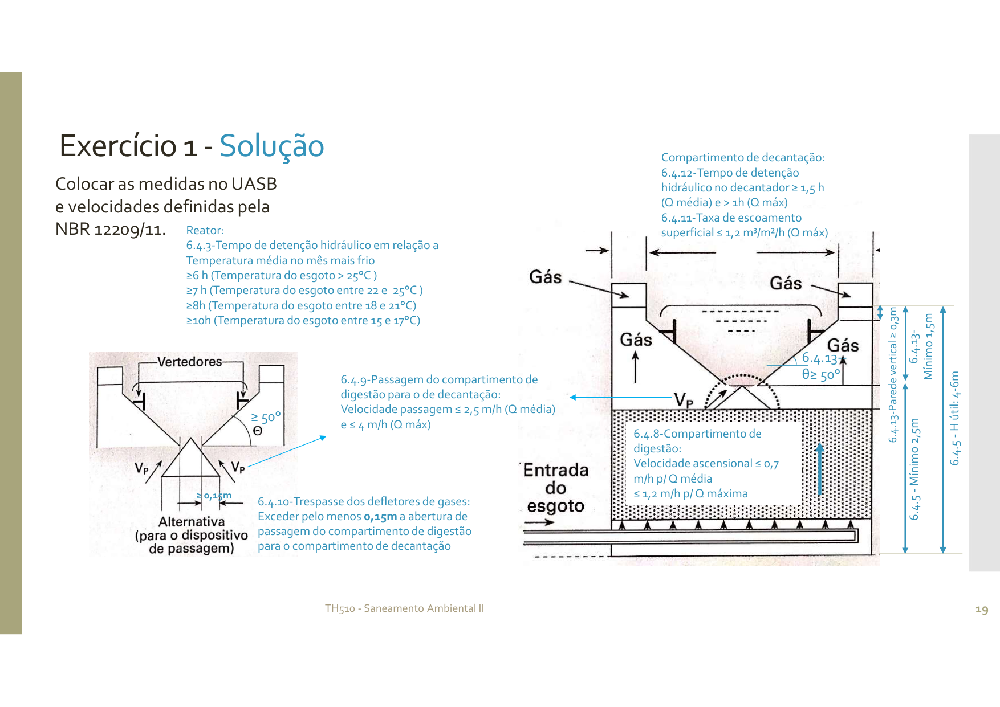
          <div class="slide-caption"><span>Slide Solução Ex.1 UASB — Mapa Completo de Cotas, Ângulos, Velocidades e TDH (NBR 12209/11)</span><span>🔍 Ampliar</span></div>
        </div>
      </div>
    </div>

      </div>
</div>

<!-- =====================================================================
     ABA 3: CADERNO DE EXERCÍCIOS DOS SLIDES (ENUNCIADO COMPLETO + LADO A LADO)
     ===================================================================== -->
<section id="tab-exercicios" class="tab-section">

  <nav class="subnav">
    <a href="#ex01">Ex.1: Carga & Concentração</a>
    <a href="#ex02">Ex.2: Streeter-Phelps</a>
    <a href="#ex03">Ex.3: Análise Sistema LA+LF</a>
    <a href="#ex04">Ex.4: Preliminar (Parshall/Areia/Grade)</a>
    <a href="#ex05">Ex.5: Tanque Séptico (NBR 17076)</a>
    <a href="#ex06">Ex.6: Lagoas (LA + LF + LM)</a>
    <a href="#ex07">Ex.7: Decantador Primário</a>
    <a href="#ex08">Ex.8: Lodos Ativados</a>
    <a href="#ex09">Ex.9: UASB Ex.01 (Cotas NBR)</a>
    <a href="#ex10">Ex.10: UASB Ex.02 Completo (a–k)</a>
    <a href="#ex11">Ex.11: TS + Wetland FSSH</a>
  </nav>

  <div class="callout callout-purple">
    <div class="callout-title">🎯 Por que estudar estes 8 Exercícios Críticos da P2 é a chave da sua prova?</div>
    <p>A professora conectou toda a disciplina em torno de <strong>dois estudos de caso integrados</strong>:
      <br>1️⃣ <strong>Estudo de Caso Municipal ($15.000 \to 22.300\text{ hab}$ em 20 anos, $q=160\text{ L/(hab}\cdot\text{d)}$, $\text{DBO}=350\text{ mg/L}$):</strong> usado nos exercícios de <em>Tratamento Preliminar, Lagoas (LA+LF+LM), Decantador Primário, Lodos Ativados e Reator UASB</em>!
      <br>2️⃣ <strong>Estudo de Caso Condomínio ($10\text{ casas de alto padrão} \times 4\text{ hab} = 40\text{ hab}$, $T=12^\circ\text{C}$):</strong> usado nos exercícios de <em>Tanque Séptico e Wetland Subsuperficial Horizontal</em>!
      <br>Abaixo estão <strong>todos os exercícios dos slides com enunciado integral</strong>, <strong>resolução dos slides à esquerda</strong> e <strong>comentários/justificativas de prova à direita</strong>.
    </p>
  </div>

  <!-- =================================================================
       EXERCÍCIO 01: VAZÃO, CARGA E CONCENTRAÇÃO DE DBO (SLIDE 04 p.20-21)
       ================================================================= -->
  <div id="ex01" class="card">
    <div class="card-header">
      <h2 class="card-title">📌 Exercício 1 — Vazão Média, Carga Orgânica e Concentração de DBO</h2>
      <span class="badge badge-blue">PDF 04 (Caracterização) • Slides 20 e 21 (Com Solução nos Slides)</span>
    </div>

    <div class="ex-enunciado">
      <h4>📝 Enunciado Completo (Slide 20):</h4>
      <p><em>"Sabendo-se que na localidade em projeto cada indivíduo contribui em média com cerca de 300 L/d de efluente e 54 g/d de DBO, para uma cidade com 100.000 habitantes, pergunta-se:
      <br>• qual a vazão média do esgoto doméstico gerada?
      <br>• qual a carga de DBO gerada?
      <br>• Qual a concentração de DBO no esgoto doméstico dessa cidade?"</em></p>
    </div>

    <div class="side-by-side">
      <div class="col-resolucao">
        <div class="col-resolucao-header">
          <span>📘 Resolução Original do Slide (Slide 21)</span>
          <span>Fiel ao PDF</span>
        </div>
        <div class="step-item">
          <h5>a) Vazão de descarga ($Q$):</h5>
          $$Q = 300\text{ L/(d}\cdot\text{hab)} \times 100.000\text{ hab} = 30.000.000\text{ L/d}$$
          $$Q = \frac{30.000\text{ m}^3/\text{d}}{86.400\text{ s/d}} = \mathbf{0{,}35\text{ m}^3/\text{s}} \quad (347{,}2\text{ L/s})$$
        </div>
        <div class="step-item">
          <h5>b) Carga de DBO ($W$):</h5>
          $$W = 54\text{ g/(d}\cdot\text{hab)} \times 100.000\text{ hab} = 5.400.000\text{ g/d}$$
          $$W = \mathbf{5.400\text{ kg DBO/d}}$$
        </div>
        <div class="step-item">
          <h5>c) Concentração de DBO no efluente ($C$):</h5>
          $$W = Q \times C \implies C = \frac{W}{Q}$$
          $$C = \frac{5.400.000.000\text{ mg/d}}{30.000.000\text{ L/d}} = \mathbf{180\text{ mg/L}}$$
        </div>
        <div class="slide-box">
          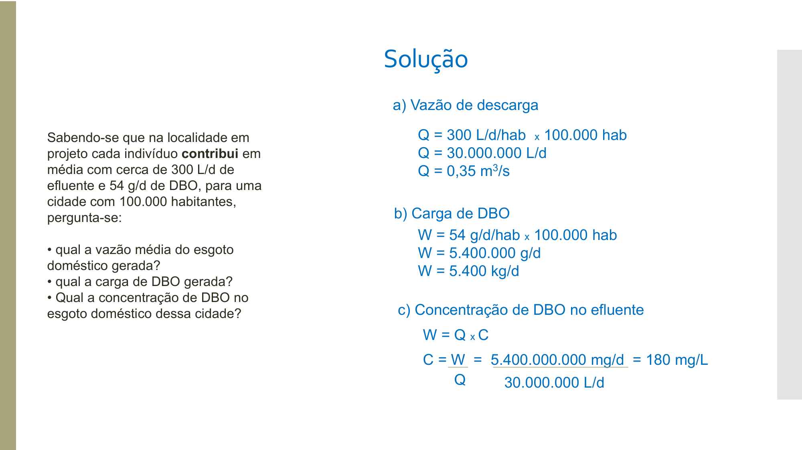
          <div class="slide-caption"><span>Slide 04 p.21 — Resolução Oficial</span><span>🔍 Ampliar</span></div>
        </div>
      </div>

      <div class="col-comentario">
        <div class="col-comentario-header">
          <span>🧠 Comentários & Justificativas para a Prova</span>
          <span>O que a Professora Avalia</span>
        </div>
        <div class="step-item">
          <h5>1. Atenção à diferença entre Consumo de Água vs. Efluente Gerado</h5>
          <p><span class="justificativa-tag">Pegadinha</span> Note que no slide 20 a professora colocou duas caixas de texto: na primeira diz <em>"contribui com 300 L/d de efluente"</em>; na segunda diz <em>"consome 300 L/d de água"</em>. Se a prova fornecer o <strong>consumo de água per capita ($q_{\text{água}}$)</strong> e pedir a vazão de esgoto sem dar o coeficiente de retorno $R$, lembre-se da NBR (Slide 05.3 p.12): <strong>adota-se coeficiente de retorno $R = 0{,}80$ ($80\%$ do consumo de água vira esgoto)</strong>! Se já disser "contribuição de esgoto", usa-se o valor direto.</p>
        </div>
        <div class="step-item">
          <h5>2. Análise Crítica do Resultado ($C = 180\text{ mg/L}$)</h5>
          <p><span class="justificativa-tag">Raciocínio</span> Na tabela de Von Sperling (Slide 04 p.11), a faixa típica de $\text{DBO}_5$ do esgoto doméstico bruto é de <strong>$200\text{ a }500\text{ mg/L}$ (típico $350\text{ mg/L}$)</strong>. Por que neste exercício deu apenas $180\text{ mg/L}$ (um esgoto mais diluído)?
          <br><strong>Resposta de Prova:</strong> Porque a contribuição per capita de volume ($300\text{ L/(hab}\cdot\text{d)}$) é muito elevada (o dobro do usual brasileiro de $120\text{--}160\text{ L/(hab}\cdot\text{d)}$), enquanto a carga orgânica biológica por pessoa é fixa ($54\text{ g DBO/(hab}\cdot\text{d)}$). Maior uso de água dilui a concentração ($C$), mas <strong>não altera a carga total ($W = 5400\text{ kg/d}$)</strong> que chega ao tratamento biológico!</p>
        </div>
        <div class="step-item">
          <h5>3. Atalho de Conversão de Unidades sem Erro</h5>
          <p>$$\text{mg/L} = \text{g/m}^3 \quad \text{e} \quad W\text{ (kg/d)} = \frac{Q\text{ (m}^3/\text{d)} \times C\text{ (mg/L)}}{1000}$$</p>
        </div>
      </div>
    </div>
  </div>

  <!-- =================================================================
       EXERCÍCIO 02: STREETER-PHELPS E ENQUADRAMENTO CONAMA (SLIDE 04 p.34)
       ================================================================= -->
  <div id="ex02" class="card">
    <div class="card-header">
      <h2 class="card-title">📌 Exercício 2 — Autodepuração (Streeter-Phelps) e Eficiência Necessária (CONAMA 357/05)</h2>
      <span class="badge badge-blue">PDF 04 (Caracterização) • Slide 34</span>
    </div>

    <div class="ex-enunciado">
      <h4>📝 Enunciado Completo (Slide 34):</h4>
      <p><em>"Exercício 1 – Modelo Streeter-Phelps: Um rio, antes do ponto de lançamento de um efluente doméstico, apresenta as seguintes condições: concentração de OD de 7,3 mg/L; DBO igual a 2 mg/L; temperatura de 20°C e vazão de 5 m³/s. A carga poluidora (orgânica) de DBO = 500 mg/L, T = 28°C e vazão de 200 L/s.
      <br>• Traçar a curva de redução de DBO.
      <br>• O rio, estando enquadrado na classe 2 (Resolução Conama 357/05), tem seus níveis de DBO dentro dos limites preconizados pela resolução?
      <br>• Qual a eficiência de tratamento necessária para que atenda o enquadramento com base no modelo Streeter-Phelps?
      <br>Considere que no trecho após lançamento: a temperatura após a mistura se mantém constante; velocidade média do rio é de 0,22 m/s; Profundidade média = 1,5 m; $k_s = 0{,}2\text{ d}^{-1}$ e $k_{1,20^\circ\text{C}} = 0{,}3\text{ d}^{-1}$."</em></p>
    </div>

    <div class="side-by-side">
      <div class="col-resolucao">
        <div class="col-resolucao-header">
          <span>📘 Resolução Passo a Passo (Fórmulas do Slide 33)</span>
          <span>Memorial Completo</span>
        </div>
        <div class="step-item">
          <h5>Passo 1: Concentração e Temperatura de Mistura em $x = 0$</h5>
          <p>Dados: $Q_r = 5{,}0\text{ m}^3/\text{s}$, $C_r = 2\text{ mg/L}$, $T_r = 20^\circ\text{C}$; $Q_e = 200\text{ L/s} = 0{,}20\text{ m}^3/\text{s}$, $C_e = 500\text{ mg/L}$, $T_e = 28^\circ\text{C}$.</p>
          $$C_0 = C_m = \frac{Q_r C_r + Q_e C_e}{Q_r + Q_e} = \frac{5{,}0 \times 2 + 0{,}20 \times 500}{5{,}0 + 0{,}20} = \frac{10 + 100}{5{,}20} = \mathbf{21{,}15\text{ mg/L}}$$
          $$T_m = \frac{5{,}0 \times 20 + 0{,}20 \times 28}{5{,}20} = \mathbf{20{,}31^\circ\text{C}}$$
        </div>
        <div class="step-item">
          <h5>Passo 2: Coeficiente de Remoção Global ($k_r$) e Equação da Curva</h5>
          $$k_{1,T} = k_{1,20} \cdot 1{,}047^{(T_m - 20)} = 0{,}3 \cdot 1{,}047^{(20{,}31 - 20)} = \mathbf{0{,}304\text{ d}^{-1}}$$
          $$k_r = k_{1,T} + k_s = 0{,}304 + 0{,}20 = \mathbf{0{,}504\text{ d}^{-1}}$$
          <p>Como $U = 0{,}22\text{ m/s} = 19.008\text{ m/d} = 19{,}01\text{ km/d}$, o tempo de percurso é $t\text{ (dias)} = \frac{x\text{ (km)}}{19{,}01}$:</p>
          $$C(x) = 21{,}15 \cdot e^{-0{,}504 \cdot (x / 19{,}01)}$$
          <p>Para atingir $C(x) \le 5{,}0\text{ mg/L}$ naturalmente sem tratamento: $5{,}0 = 21{,}15 \cdot e^{-0{,}504 \cdot t} \implies t = 2{,}86\text{ dias} \implies x = \mathbf{54{,}4\text{ km}}$ de rio poluído!</p>
        </div>
        <div class="step-item">
          <h5>Passo 3: Atendimento à Classe 2 (CONAMA 357/05) e Eficiência Necessária ($E$)</h5>
          <p>Pela Resolução CONAMA 357/05, o limite de $\text{DBO}_{5,20}$ para <strong>Rio Classe 2 é $C_{\text{máx}} = 5{,}0\text{ mg/L}$</strong>. Como $C_0 = 21{,}15\text{ mg/L} &gt; 5{,}0\text{ mg/L}$, <strong>NÃO atende</strong> no ponto de mistura!</p>
          <p>Para que a concentração de mistura já atenda $C_m \le 5{,}0\text{ mg/L}$ imediatamente após o lançamento:</p>
          $$5{,}0 = \frac{5{,}0 \times 2 + 0{,}20 \times C_{e,\text{trat}}}{5{,}20} \implies 26 = 10 + 0{,}20 \cdot C_{e,\text{trat}} \implies C_{e,\text{trat}} = \mathbf{80\text{ mg/L}}$$
          $$E_{\text{necessária}} = \frac{C_{e,\text{bruto}} - C_{e,\text{trat}}}{C_{e,\text{bruto}}} = \frac{500 - 80}{500} = 0{,}84 = \mathbf{84\%}$$
        </div>
        <div class="slide-box">
          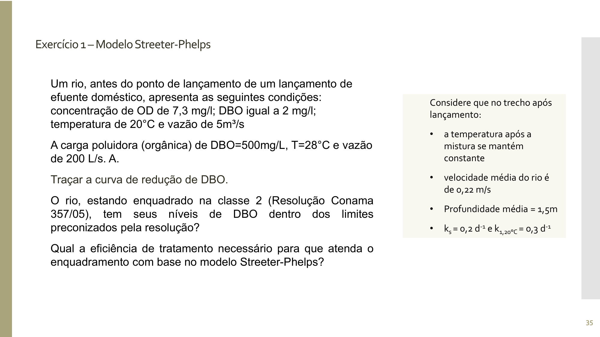
          <div class="slide-caption"><span>Slide 04 p.34 — Exercício Streeter-Phelps</span><span>🔍 Ampliar</span></div>
        </div>
      </div>

      <div class="col-comentario">
        <div class="col-comentario-header">
          <span>🧠 Comentários & Justificativas para a Prova</span>
          <span>O que a Professora Avalia</span>
        </div>
        <div class="step-item">
          <h5>1. Limites Legais Essenciais para ter na Folha A4</h5>
          <ul>
            <li><strong>CONAMA 357/2005 (Corpo Receptor — Rio Classe 2):</strong> $\text{DBO}_{5,20} \le \mathbf{5\text{ mg/L}}$ e $\text{OD} \ge \mathbf{5\text{ mg/L}}$. (Classe 3: $\text{DBO} \le 10\text{ mg/L}$ e $\text{OD} \ge 4\text{ mg/L}$).</li>
            <li><strong>CONAMA 430/2011 (Padrão de Lançamento de Esgoto Sanitário):</strong> $\text{DBO}_{5,20}$ máxima de <strong>$120\text{ mg/L}$</strong> ou <strong>eficiência mínima de remoção de $60\%$</strong> (podendo ser mais restritivo se a capacidade de diluição do corpo receptor exigir, como neste exercício em que o rio exige $C_{e,\text{trat}} \le 80\text{ mg/L}$, ou seja, $E \ge 84\%$!).</li>
          </ul>
        </div>
        <div class="step-item">
          <h5>2. Conexão Direta com o Próximo Exercício (Slide 05.1 p.23)!</h5>
          <p><span class="justificativa-tag">Sacada Genial</span> Repare que neste exercício de Streeter-Phelps encontramos que, para um esgoto bruto de $C_{\text{in}} = 500\text{ mg/L}$, a eficiência necessária para atender o rio Classe 2 foi de <strong>$84\%$ ($\approx 85\%$)</strong>! E no Exercício do Slide 05.1 p.23 (logo abaixo), a professora pergunta exatamente: <em>"Para a necessidade de tratamento de 85% de eficiência de matéria orgânica com $C_{\text{in}} = 500\text{ mg DBO/L}$, o sistema abaixo atenderia?"</em>. Tudo se conecta!</p>
        </div>
      </div>
    </div>
  </div>

  <!-- =================================================================
       EXERCÍCIO 03: ANÁLISE DE SISTEMA LA + LF (SLIDE 05.1 p.23)
       ================================================================= -->
  <div id="ex03" class="card">
    <div class="card-header">
      <h2 class="card-title">📌 Exercício 3 — Análise e Seleção de Sistema (Lagoa Anaeróbia + Lagoa Facultativa)</h2>
      <span class="badge badge-teal">PDF 05.1 (Tratamento de Esgoto) • Slide 23</span>
    </div>

    <div class="ex-enunciado">
      <h4>📝 Enunciado Completo (Slide 23):</h4>
      <p><em>"Para a necessidade de tratamento de 85% de eficiência de matéria orgânica, o sistema da figura abaixo [SISTEMA: LAGOA ANAERÓBIA - LAGOA FACULTATIVA, precedido por Grade, Desarenador e Medidor de Vazão] atenderia?
      <br>• Qual o potencial de tratamento deste sistema de tratamento?
      <br>• Qual a eficiência e concentração do efluente esperada segundo dados de literatura.
      <br>• Quais as vantagens deste sistema e onde ele seria mais adequado?
      <br>Dado: $C_{\text{in}} = 500\text{ mg DBO/L}$."</em></p>
    </div>

    <div class="side-by-side">
      <div class="col-resolucao">
        <div class="col-resolucao-header">
          <span>📘 Resolução Baseada nos Slides 19 e 22 do PDF 05.1</span>
          <span>Resposta Completa</span>
        </div>
        <div class="step-item">
          <h5>1. O sistema atenderia à necessidade de 85% de remoção de DBO?</h5>
          <p><strong>Sim, atenderia (operando próximo ao seu limite superior de eficiência).</strong> Segundo a tabela de Von Sperling (1996) apresentada no Slide 19, o sistema <strong>Lagoa Anaeróbia – Lagoa Facultativa (Sistema Australiano)</strong> possui eficiência de remoção de DBO na faixa de <strong>70% a 90%</strong>.</p>
        </div>
        <div class="step-item">
          <h5>2. Potencial de tratamento e Eficiências de Literatura (Slide 19):</h5>
          <ul>
            <li><strong>Remoção de DBO:</strong> 70 a 90% (Etapa preliminar: 0–5%; Lagoa Anaeróbia: 50–60%; Lagoa Facultativa secundária: complementa até 70–90% global).</li>
            <li><strong>Remoção de Nitrogênio (N):</strong> 30 a 50%.</li>
            <li><strong>Remoção de Fósforo (P):</strong> 20 a 60%.</li>
            <li><strong>Remoção de Coliformes:</strong> 60 a 99,9% (1 a 3 unidades log).</li>
          </ul>
        </div>
        <div class="step-item">
          <h5>3. Concentração Efluente Esperada ($C_{\text{out}}$ para $C_{\text{in}} = 500\text{ mg/L}$):</h5>
          <ul>
            <li>Para <strong>70% de eficiência (limite inferior):</strong> $C_{\text{out}} = 500 \times (1 - 0{,}70) = \mathbf{150\text{ mg DBO/L}}$.</li>
            <li>Para <strong>85% de eficiência (meta do projeto):</strong> $C_{\text{out}} = 500 \times (1 - 0{,}85) = \mathbf{75\text{ mg DBO/L}}$.</li>
            <li>Para <strong>90% de eficiência (limite superior):</strong> $C_{\text{out}} = 500 \times (1 - 0{,}90) = \mathbf{50\text{ mg DBO/L}}$.</li>
          </ul>
        </div>
        <div class="step-item">
          <h5>4. Vantagens e Adequação (Slide 22 e PDF 05.4 p.7):</h5>
          <ul>
            <li><strong>Vantagens:</strong> Simplicidade construtiva e operacional, ausência de equipamentos eletromecânicos ($\text{Potência} \approx 0\text{ W/hab}$), baixo custo de implantação ($10\text{ a }25\text{ US\$/hab}$) e de operação, baixa geração de lodo a tratar ($0{,}055\text{ a }0{,}16\text{ m}^3/(\text{hab}\cdot\text{ano})$) e <strong>redução de cerca de 30% da área requerida</strong> ($1{,}5\text{ a }3{,}5\text{ m}^2/\text{hab}$) em comparação a uma Lagoa Facultativa única ($2{,}0\text{ a }5{,}0\text{ m}^2/\text{hab}$).</li>
            <li><strong>Onde é mais adequado:</strong> Municípios de pequeno a médio porte com disponibilidade de área a custo acessível, topografia favorável (pouco movimento de terra), clima quente/ensolarado ($T &gt; 20^\circ\text{C}$ favorece a metanogênese e a fotossíntese) e afastamento mínimo de $500\text{ m}$ de áreas residenciais (devido ao risco de odores na lagoa anaeróbia).</li>
          </ul>
        </div>
        <div class="slide-box">
          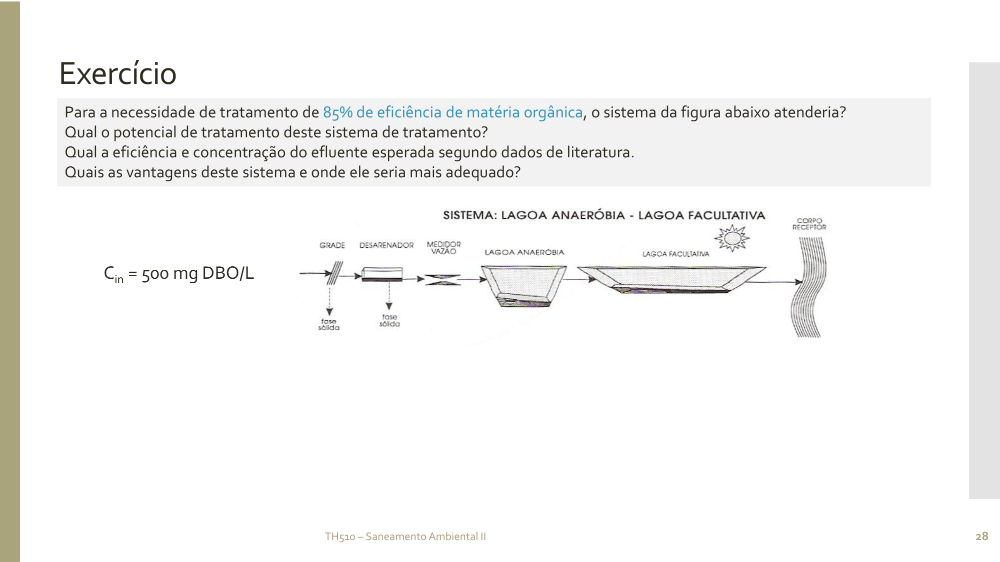
          <div class="slide-caption"><span>Slide 05.1 p.23 — Exercício de Análise de Sistema</span><span>🔍 Ampliar</span></div>
        </div>
      </div>

      <div class="col-comentario">
        <div class="col-comentario-header">
          <span>🧠 Comentários & Justificativas para a Prova</span>
          <span>Como Ganhar Nota Máxima</span>
        </div>
        <div class="step-item">
          <h5>1. Este é o modelo exato de questão conceitual da Professora!</h5>
          <p><span class="justificativa-tag">Padrão da Prova</span> Repare como esta questão cobra exatamente os 4 pontos da instrução da prova:
          <br>• <strong>Explicar processos:</strong> Na LA ocorre digestão anaeróbia (hidrólise/acidogênese/metanogênese) em tanque profundo (3–5 m) sem luz; na LF ocorre simbiose entre algas (fotossíntese produzindo $\text{O}_2$) e bactérias heterotróficas aeróbias/facultativas.
          <br>• <strong>Comparar sistemas:</strong> Comparar LA+LF com LF isolada (economia de 30% de área) e com Lodos Ativados (Lodos Ativados garante 85–98% com mais folga e ocupa apenas $0{,}2\text{--}0{,}3\text{ m}^2/\text{hab}$, porém exige energia de $1{,}5\text{--}4{,}0\text{ W/hab}$ e operação complexa).
          <br>• <strong>Ressalva Crítica de Engenharia:</strong> Para atingir 85% em LA+LF no inverno (frio), o sistema pode cair para ~70–75% pois a atividade biológica depende da temperatura (Arrhenius). Se os 85% forem obrigatórios o ano todo em região fria (como Curitiba no inverno), deve-se dimensionar para a temperatura do mês mais frio ou incluir uma 3ª lagoa em série (maturação/polimento).</p>
        </div>
      </div>
    </div>
  </div>

  <!-- =================================================================
       EXERCÍCIO 04: TRATAMENTO PRELIMINAR (SLIDE 05.2 p.30-31)
       ================================================================= -->
  <div id="ex04" class="card">
    <div class="card-header">
      <h2 class="card-title">📌 Exercício 4 — Dimensionamento do Tratamento Preliminar (Calha Parshall, Caixa de Areia e Grade)</h2>
      <span class="badge badge-teal">PDF 05.2 (Preliminar) • Slides 30 e 31</span>
    </div>

    <div class="ex-enunciado">
      <h4>📝 Enunciado Completo (Slide 30):</h4>
      <p><em>"Dimensione as unidades de um tratamento preliminar e medidor de vazão (grade, caixa de areia e calha Parshall) para atender uma população inicial de 15000 habitantes, com contribuição per capita de esgoto de 160 L/d e taxa de crescimento populacional geométrico de 2%. Horizonte de projeto de 20 anos. (Simplificação: Desconsiderando Infiltração e contribuições específicas).
      <br>Declividade do último tubo da rede coletora: 0,006 m/m.
      <br>Esgoto predominantemente doméstico, cujos dados principais na entrada da ETE (esgoto bruto) são: $\text{DBO}_{5,20^\circ\text{C}} = 350\text{ mg/L}$; $\text{DQO} = 500\text{ mg/L}$; $\text{Coliformes fecais} = 4\cdot 10^7\text{ org/100mL}$; $\text{Sólidos suspensos totais (SST)} = X = 1040\text{ mg/L} = 1{,}04\text{ kg/m}^3$."</em></p>
    </div>

    <div class="side-by-side">
      <div class="col-resolucao">
        <div class="col-resolucao-header">
          <span>📘 Resolução dos Slides (Slide 31 + Roteiro Slide 28)</span>
          <span>Memorial Passo a Passo</span>
        </div>
        <div class="step-item">
          <h5>1. Cálculo das Vazões por Etapa (Tabela Oficial do Slide 31):</h5>
          <p>Crescimento geométrico: $P_f = P_i \cdot (1 + r)^n$, com $r = 0{,}02$, $q = 160\text{ L/(hab}\cdot\text{d)}$, $k_1 = 1{,}2$, $k_2 = 1{,}5$ ($k_1 k_2 = 1{,}8$):</p>
          <ul>
            <li><strong>1ª Etapa (Início, $n=0$):</strong> $P_i = 15.000\text{ hab} \implies \bar{Q}_i = \frac{15000 \times 160}{86400} = \mathbf{27{,}8\text{ L/s}}$; $Q_{\text{máx},i} = 1{,}8 \times 27{,}8 = \mathbf{50{,}0\text{ L/s}}$; $Q_{\text{hor},i} = 1{,}5 \times 27{,}8 = \mathbf{41{,}7\text{ L/s}}$; $Q_{\text{mín},i} = \bar{Q}_i / 2 = \mathbf{13{,}9\text{ L/s}}$.</li>
            <li><strong>2ª Etapa (10 anos, $n=10$):</strong> $P_{10} = 15000(1{,}02)^{10} = 18.300\text{ hab} \implies \bar{Q} = \mathbf{33{,}9\text{ L/s}}$; $Q_{\text{máx}} = \mathbf{61{,}0\text{ L/s}}$; $Q_{\text{hor}} = \mathbf{50{,}9\text{ L/s}}$; $Q_{\text{mín}} = \mathbf{17{,}0\text{ L/s}}$.</li>
            <li><strong>3ª Etapa (Fim de Plano, $n=20$):</strong> $P_f = 15000(1{,}02)^{20} = 22.300\text{ hab} \implies \bar{Q}_f = \mathbf{41{,}3\text{ L/s}}$; $Q_{\text{máx},f} = \mathbf{74{,}3\text{ L/s}}$ ($0{,}0743\text{ m}^3/\text{s} = 6419{,}5\text{ m}^3/\text{d}$); $Q_{\text{hor},f} = \mathbf{62{,}0\text{ L/s}}$; $Q_{\text{mín},f} = \mathbf{20{,}7\text{ L/s}}$.</li>
          </ul>
        </div>
        <div class="step-item">
          <h5>2. Seleção da Calha Parshall e Degrau $z$ (Slides 26 e 28):</h5>
          <p>Faixa de operação entre $Q_{\text{mín},i} = 13{,}9\text{ L/s}$ ($0{,}0139\text{ m}^3/\text{s}$) e $Q_{\text{máx},f} = 74{,}3\text{ L/s}$ ($0{,}0743\text{ m}^3/\text{s}$).</p>
          <p>Pela Tabela do Slide 26, adota-se <strong>Calha Parshall $W = 6''$ ($0{,}150\text{ m}$)</strong>, onde $K = 1{,}842$ e $n = 0{,}636$ (ou $W = 9''$ com $K = 1{,}486, n = 0{,}633$). Com $W = 6''$:</p>
          $$H_{p,\text{mín}} = 1{,}842 \cdot (0{,}0139)^{0{,}636} = \mathbf{0{,}121\text{ m}}$$
          $$H_{p,\text{máx}} = 1{,}842 \cdot (0{,}0743)^{0{,}636} = \mathbf{0{,}352\text{ m}}$$
          $$z = \frac{Q_{\text{máx},f} H_{p,\text{mín}} - Q_{\text{mín},i} H_{p,\text{máx}}}{Q_{\text{máx},f} - Q_{\text{mín},i}} = \frac{74{,}3(0{,}121) - 13{,}9(0{,}352)}{74{,}3 - 13{,}9} = \mathbf{0{,}068\text{ m}}$$
          <p>Lâminas d'água na caixa de areia ($H = H_p - z$): $H_{\text{mín}} = 0{,}121 - 0{,}068 = \mathbf{0{,}053\text{ m}}$ e $H_{\text{máx}} = 0{,}352 - 0{,}068 = \mathbf{0{,}284\text{ m}}$.</p>
        </div>
        <div class="step-item">
          <h5>3. Dimensionamento da Caixa de Areia (Slides 22 a 24):</h5>
          <p>Adotando velocidade horizontal $v_h = \mathbf{0{,}30\text{ m/s}}$ (dentro da faixa $0{,}25\text{ a }0{,}40\text{ m/s}$ da NBR 12209):</p>
          $$B = \frac{Q_{\text{máx},f}}{v_h \cdot H_{\text{máx}}} = \frac{0{,}0743}{0{,}30 \times 0{,}284} = \mathbf{0{,}87\text{ m}} \quad (\text{Atende } B \ge 0{,}60\text{ m da Tabela do Slide 24!})$$
          <p>Comprimento com fator de segurança $1{,}5$ ($v_{s,c} = 0{,}021\text{ m/s}$ p/ $d \ge 0{,}2\text{ mm}$):</p>
          $$L = 1{,}5 \cdot \frac{v_h}{v_{s,c}} \cdot H_{\text{máx}} = 1{,}5 \cdot \frac{0{,}30}{0{,}021} \cdot 0{,}284 = \mathbf{6{,}10\text{ m}} \quad (\text{ou } L = 30 \cdot H_{\text{máx}} = 8{,}5\text{ m})$$
          <p>Verificações NBR 12209: Relação $L/B = 6{,}10 / 0{,}87 = \mathbf{7{,}0 \ge 3\text{--}4}$ (OK!); $\text{TAS} = \frac{Q_{\text{máx},f}}{B \cdot L} = \frac{6419{,}5\text{ m}^3/\text{d}}{0{,}87 \times 6{,}10} = \mathbf{1210\text{ m}^3/(\text{m}^2\cdot\text{d)}} \in [600, 1300]$ (OK!).</p>
        </div>
        <div class="step-item">
          <h5>4. Dimensionamento da Grade (Slides 11 a 15):</h5>
          <p>Como $Q_{\text{máx},f} = 74{,}3\text{ L/s} &lt; 100\text{ L/s}$, permite-se <strong>Grade Média de Limpeza Manual</strong>, inclinação $\theta = \mathbf{45^\circ\text{ a }60^\circ}$ com a horizontal, espaçamento $e = \mathbf{2{,}5\text{ cm}}$ ($25\text{ mm}$) e barras de $t = 0{,}95\text{ cm}$ ($3/8'' \times 2''$). Eficiência de passagem $E = \frac{e}{e+t} = \frac{2{,}5}{2{,}5+0{,}95} = 0{,}725$. Volume de material retido: $0{,}04\text{ L/m}^3 \times 3568\text{ m}^3/\text{d} = \mathbf{143\text{ L/dia}}$ (encaminhado a aterro sanitário).</p>
        </div>
        <div class="slide-box">
          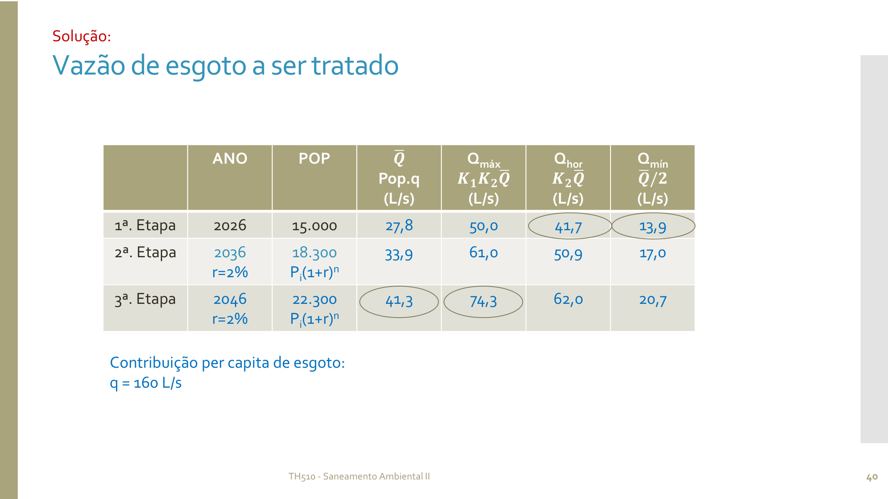
          <div class="slide-caption"><span>Slide 05.2 p.31 — Tabela Oficial de Vazões do Exercício</span><span>🔍 Ampliar</span></div>
        </div>
      </div>

      <div class="col-comentario">
        <div class="col-comentario-header">
          <span>🧠 Comentários & Justificativas para a Prova</span>
          <span>O que Escrever na Folha</span>
        </div>
        <div class="step-item">
          <h5>1. Guarde a Tabela de Vazões do Slide 31 na sua Folha A4!</h5>
          <p><span class="justificativa-tag">Dica de Ouro</span> Essa mesma tabela ($15.000 \to 18.300 \to 22.300\text{ hab}$; $\bar{Q}_f = 41{,}3\text{ L/s} = 148{,}68\text{ m}^3/\text{h} = 3568\text{ m}^3/\text{d}$; $Q_{\text{máx},f} = 74{,}3\text{ L/s} = 267{,}48\text{ m}^3/\text{h} = 6420\text{ m}^3/\text{d}$; $Q_{\text{hor},f} = 62{,}0\text{ L/s} = 223{,}2\text{ m}^3/\text{h} = 5357\text{ m}^3/\text{d}$) se repete em <strong>5 exercícios diferentes dos slides</strong>!</p>
        </div>
        <div class="step-item">
          <h5>2. Como justificar cada escolha deste exercício na prova:</h5>
          <ul>
            <li><strong>Por que dimensionar a Calha Parshall primeiro?</strong> Porque a curva-chave da Parshall define as alturas $H_{p,\text{mín}}$ e $H_{p,\text{máx}}$, permitindo calcular o rebaixo $z$ que mantém a velocidade $v_h$ constante na caixa de areia para toda a faixa de vazões ($Q_{\text{mín},i}$ a $Q_{\text{máx},f}$).</li>
            <li><strong>Por que limpeza manual na grade é permitida aqui?</strong> Porque pela NBR 12209/11 a mecanização só é obrigatória para $Q_{\text{máx},f} \ge 100\text{ L/s}$ (aqui temos $74{,}3\text{ L/s}$).</li>
            <li><strong>Qual vazão dimensiona o Desarenador?</strong> A <strong>vazão máxima final ($Q_{\text{máx},f} = 74{,}3\text{ L/s}$)</strong>, verificando a manutenção de velocidade na vazão mínima inicial ($Q_{\text{mín},i} = 13{,}9\text{ L/s}$).</li>
          </ul>
        </div>
      </div>
    </div>
  </div>

  <!-- =================================================================
       EXERCÍCIO 05: TANQUE SÉPTICO + FILTRO ANAERÓBIO (SLIDE 05.3 p.17)
       ================================================================= -->
  <!-- =================================================================
       EXERCÍCIO 06: LAGOAS DE ESTABILIZAÇÃO — LA + LF + LM (SLIDES 05.4)
       ================================================================= -->
  <div id="ex06" class="card">
    <div class="card-header">
      <h2 class="card-title">📌 Exercício 6 — Dimensionamento do Sistema Australiano Completo (LA $\to$ LF $\to$ LM)</h2>
      <span class="badge badge-blue">PDF 05.4 (Lagoas) • Exercícios 1 (p.24-25), 2 (p.38-39) e 3 (p.44-45)</span>
    </div>

    <div class="ex-enunciado">
      <h4>📝 Enunciados Completos (Slides 24, 38 e 44):</h4>
      <p><em>• <strong>Exercício 1 (Slide 24):</strong> "Dimensione Lagoa Anaeróbia (LA) para atender uma população inicial de 15000 habitantes, com contribuição per capita de esgoto de 160 L/d e taxa de crescimento populacional geométrico de cerca de 2%. Horizonte de projeto de 20 anos."
      <br>• <strong>Exercício 2 (Slide 38):</strong> "Dimensione Lagoa Facultativa (LF) precedida por Lagoa Anaeróbia (LA) para atender uma população inicial de 15000 habitantes..."
      <br>• <strong>Exercício 3 (Slide 44):</strong> "Dimensione Lagoa de Maturação (LM) precedida por Lagoa Anaeróbia (LA) e Lagoa Facultativa (LF) para atender uma população inicial de 15000 habitantes..."
      <br>Dados comuns: $\text{DBO}_{5,20} = 350\text{ mg/L}$; $\text{DQO} = 500\text{ mg/L}$; $\text{CF} = 4\cdot 10^7\text{ org/100mL}$; $\text{SST} = 1040\text{ mg/L}$.</em></p>
    </div>

    <div class="side-by-side">
      <div class="col-resolucao">
        <div class="col-resolucao-header">
          <span>📘 Resolução dos Slides (p.25, 39, 45) + Dimensionamento Completo</span>
          <span>LA + LF + LM</span>
        </div>
        <div class="step-item">
          <h5>Dados de Vazão e Carga Bruta de Fim de Plano (Slides 25, 39 e 45):</h5>
          <p>Para $n = 20\text{ anos}$: $\text{Pop}_f = 22.300\text{ hab}$; $Q_{\text{méd},f} = \mathbf{41{,}3\text{ L/s}} = \mathbf{3.568{,}3\text{ m}^3/\text{d}}$.</p>
          $$W_{\text{in}} = 41{,}3\text{ L/s} \times 350\text{ mg/L} \times \frac{86400\text{ s/d}}{10^6\text{ mg/kg}} = \mathbf{1.249\text{ kg DBO/d}}$$
        </div>
        <div class="step-item">
          <h5>ETAPA 1 — Dimensionamento da Lagoa Anaeróbia (LA):</h5>
          <ul>
            <li><strong>Critério de Taxa Volumétrica (Slide 14):</strong> Para temperatura de inverno $T = 20^\circ\text{C}$, $\lambda_v = 20T - 100 = 20(20) - 100 = \mathbf{300\text{ g DBO}/(\text{m}^3\cdot\text{d)}}$ (ou $\lambda_v = 250\text{ g}/(\text{m}^3\cdot\text{d)}$ recomendado por Silva &amp; Mara). Com $\lambda_v = 250\text{ g}/(\text{m}^3\cdot\text{d)} = 0{,}25\text{ kg}/(\text{m}^3\cdot\text{d)}$:
              $$V_{\text{LA}} = \frac{W_{\text{in}}}{\lambda_v} = \frac{1249\text{ kg/d}}{0{,}25\text{ kg}/(\text{m}^3\cdot\text{d)}} = \mathbf{4.996\text{ m}^3}$$
              Tempo de detenção: $T_d = \frac{V_{\text{LA}}}{Q_{\text{méd}}} = \frac{4996}{3568{,}3} = \mathbf{1{,}4\text{ d}}$ (pelo método volumétrico) ou, adotando o critério de <strong>$T_d = 4{,}0\text{ dias}$</strong> (Slide 15: $3\text{ a }6\text{ d}$ para evitar lavagem das metanogênicas):
              $$V_{\text{LA}} = Q_{\text{méd}} \cdot T_d = 3568{,}3 \times 4{,}0 = \mathbf{14.273\text{ m}^3} \quad \left(\lambda_v = \frac{350}{4{,}0} = 87{,}5\text{ a }100\text{ g}/(\text{m}^3\cdot\text{d)}\right)$$
            </li>
            <li><strong>Profundidade e Área ($A_{1/2}$):</strong> Adotando $H = \mathbf{4{,}0\text{ m}}$ (faixa $3\text{ a }5\text{ m}$):
              $$A_{1/2,\text{LA}} = \frac{14.273}{4{,}0} = \mathbf{3.568\text{ m}^2} = 0{,}357\text{ ha}$$
              Verificação da taxa superficial (Slide 16): $\lambda_s = \frac{1249\text{ kg/d}}{0{,}357\text{ ha}} = \mathbf{3.498\text{ kg}/(\text{ha}\cdot\text{d)}}$ (se limitar a $\lambda_s = 1500\text{ kg}/(\text{ha}\cdot\text{d)}$ para não ter odor: $A_{1/2} = \frac{1249}{1500} = \mathbf{0{,}833\text{ ha} = 8.327\text{ m}^2}$).
            </li>
            <li><strong>Eficiência da LA (Slide 18 e Slide 39):</strong> A professora adota no Slide 39 remoção de <strong>50% de DBO na LA</strong> ($T \le 20^\circ\text{C}$), logo a carga que sai da LA e entra na LF é exatamente:
              $$W_{\text{out,LA}} = W_{\text{in,LF}} = 0{,}50 \times 1249 = \mathbf{624{,}5\text{ kg DBO/d}} \quad (C_{\text{in,LF}} = 175\text{ mg/L})$$
            </li>
          </ul>
        </div>
        <div class="step-item">
          <h5>ETAPA 2 — Dimensionamento da Lagoa Facultativa Secundária (LF):</h5>
          <ul>
            <li><strong>Carga afluente à LF (Slide 39):</strong> $W_{\text{in,LF}} = \mathbf{624{,}5\text{ kg DBO/d}}$.</li>
            <li><strong>Taxa de Aplicação Superficial ($\lambda_s$, Slides 30, 31 e 35):</strong> Pela equação de McGarry &amp; Pescod adaptada ($\lambda_{s,\text{máx}} = 20T - 60$): para $T = 20^\circ\text{C}$, $\lambda_{s,\text{máx}} = 340\text{ kg}/(\text{ha}\cdot\text{d)}$; aplicando o fator de segurança $0{,}67$: $\lambda_s = 0{,}67 \times 340 = \mathbf{228\text{ kg DBO}/(\text{ha}\cdot\text{d)}}$ (ou pela faixa de Kawai do Slide 35 para LF secundária: $\lambda_s = \mathbf{150\text{ kg DBO}/(\text{ha}\cdot\text{d)}}$).</li>
            <li><strong>Área e Volume da LF:</strong>
              $$\text{Com }\lambda_s = 150\text{ kg}/(\text{ha}\cdot\text{d)}: \quad A_{1/2,\text{LF}} = \frac{624{,}5}{150} = \mathbf{4{,}16\text{ ha}} = \mathbf{41.633\text{ m}^2}$$
              $$\text{Com }\lambda_s = 228\text{ kg}/(\text{ha}\cdot\text{d)}: \quad A_{1/2,\text{LF}} = \frac{624{,}5}{228} = \mathbf{2{,}74\text{ ha}} = \mathbf{27.390\text{ m}^2}$$
              Adotando profundidade útil $H_{\text{LF}} = \mathbf{1{,}5\text{ m}}$ (usual para LF secundária, Slide 35):
              $$V_{\text{LF}} = 41.633 \times 1{,}5 = \mathbf{62.450\text{ m}^3} \implies T_{d,\text{LF}} = \frac{62.450}{3568{,}3} = \mathbf{17{,}5\text{ dias}} \quad (\in [15, 45]\text{ d, OK!})$$
              Com relação $L/B = 6:1$ (Além Sobrinho, Slide 35): $6 B^2 = 41.633 \implies B = \mathbf{83{,}3\text{ m}}$ e $L = \mathbf{500\text{ m}}$ (ou 2 lagoas em paralelo de $B=59\text{ m}$ e $L=353\text{ m}$).
            </li>
            <li><strong>DBO Efluente da LF:</strong> Pelo modelo de 1ª ordem ($k_{1,20} = 0{,}3\text{ d}^{-1}$): $C_{e,\text{LF}} = \frac{175}{1 + 0{,}3 \times 17{,}5} = \mathbf{28\text{ mg/L}}$ ($&lt; 75\text{ mg/L}$, apto para entrar na Lagoa de Maturação!).</li>
          </ul>
        </div>
        <div class="step-item">
          <h5>ETAPA 3 — Dimensionamento da Lagoa de Maturação (LM — Slides 41 a 45):</h5>
          <ul>
            <li><strong>Critério de Tempo de Detenção e Profundidade (Slides 41–43):</strong> Adotando $T_{d,\text{LM}} = \mathbf{7\text{ dias}}$ (Slide 41) — ou 2 lagoas em série com $T_d = 3{,}5\text{ d}$ cada ($T_d \ge 3\text{ d}$ mínimo do Slide 43) — e profundidade rasa $H_{\text{LM}} = \mathbf{1{,}0\text{ m}}$ (faixa $0{,}8\text{ a }1{,}2\text{ m}$, Slide 42):
              $$V_{\text{LM}} = Q_{\text{méd}} \cdot T_{d,\text{LM}} = 3568{,}3 \times 7 = \mathbf{24.978\text{ m}^3}$$
              $$A_{1/2,\text{LM}} = \frac{24.978\text{ m}^3}{1{,}0\text{ m}} = \mathbf{24.978\text{ m}^2} \approx 2{,}50\text{ ha}$$
            </li>
            <li><strong>Remoção de Coliformes Fecais ($N_i = 4{,}0 \times 10^7\text{ CF/100mL}$, Slide 43):</strong>
              Para $T = 20^\circ\text{C}$, $k_{b,20} = 2{,}6\text{ d}^{-1}$. Considerando a série completa ($\text{LA com }T_d=4\text{d} \to \text{LF com }T_d=17{,}5\text{d} \to \text{LM com }T_d=7\text{d}$):
              $$N_e = \frac{4{,}0 \times 10^7}{(1 + 2{,}6 \times 4{,}0)(1 + 2{,}6 \times 17{,}5)(1 + 2{,}6 \times 7{,}0)} = \frac{4{,}0 \times 10^7}{11{,}4 \times 46{,}5 \times 19{,}2} = \mathbf{3.930\text{ CF/100mL}}$$
              (Ou com 2 LMs de $3{,}5\text{ d}$ em série: $N_e = \frac{4{,}0 \times 10^7}{11{,}4 \times 46{,}5 \times (10{,}1)^2} = \mathbf{739\text{ CF/100mL}} &lt; 1000\text{ CF/100mL}$, eficiência de <strong>99,998%</strong>!).
            </li>
          </ul>
        </div>
        <div class="grid-2">
          <div class="slide-box">
            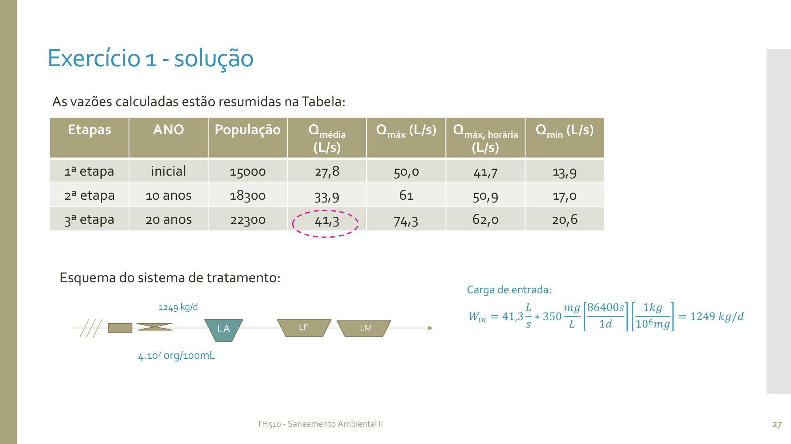
            <div class="slide-caption"><span>Slide 05.4 p.25 — Solução Ex.1 (Carga 1249 kg/d)</span><span>🔍 Ampliar</span></div>
          </div>
          <div class="slide-box">
            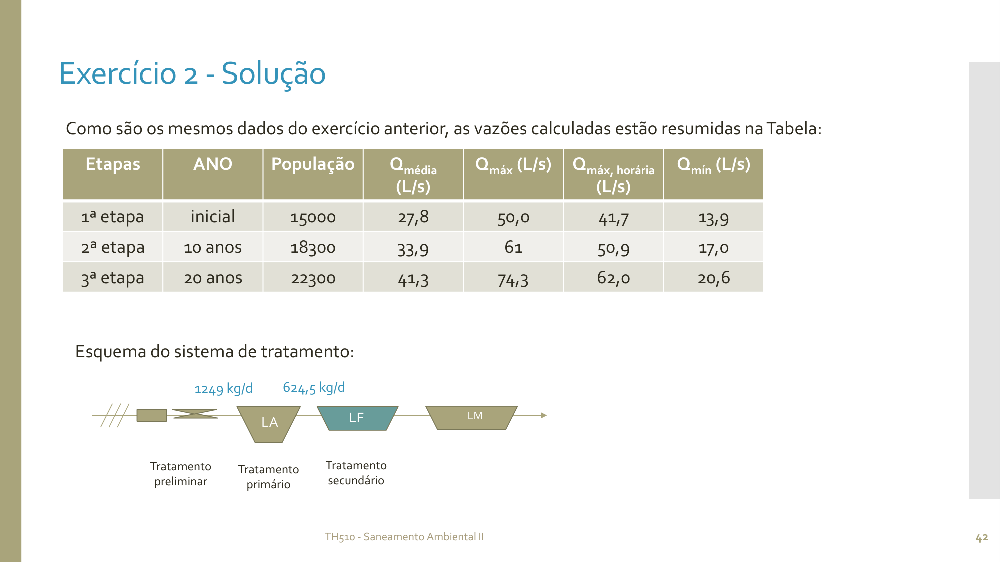
            <div class="slide-caption"><span>Slide 05.4 p.39 — Solução Ex.2 (Carga LF 624,5 kg/d)</span><span>🔍 Ampliar</span></div>
          </div>
        </div>
      </div>

      <div class="col-comentario">
        <div class="col-comentario-header">
          <span>🧠 Comentários & Justificativas para a Prova</span>
          <span>O que a Professora Quer Ler</span>
        </div>
        <div class="step-item">
          <h5>1. Por que a carga caiu de $1249\text{ kg/d}$ para $624{,}5\text{ kg/d}$ no Slide 39?</h5>
          <p><span class="justificativa-tag">Observação Vital</span> No Slide 39, a professora escreveu na seta entre a LA e a LF: $1249\text{ kg/d} \to 624{,}5\text{ kg/d}$. Isso significa que ela adotou exatamente <strong>50% de eficiência de remoção de DBO na Lagoa Anaeróbia</strong> (critério do Slide 18 para $T \le 20^\circ\text{C}$)! Sempre destaque isso na sua resolução!</p>
        </div>
        <div class="step-item">
          <h5>2. Como justificar as 3 profundidades diferentes nas Lagoas?</h5>
          <ul>
            <li><strong>Lagoa Anaeróbia ($H = 3\text{ a }5\text{ m}$):</strong> Profunda para <strong>impedir a penetração da luz solar</strong> (evitar fotossíntese algal e produção de $\text{O}_2$, que mataria as arqueias metanogênicas) e conservar calor.</li>
            <li><strong>Lagoa Facultativa ($H = 1{,}5\text{ a }2{,}0\text{ m}$):</strong> Profundidade intermediária para permitir uma <strong>zona fótica aeróbia superior</strong> (fotossíntese das algas suprindo $\text{O}_2$ para as bactérias heterotróficas) e uma <strong>zona anaeróbia de fundo</strong> para digestão do lodo sedimentado, sendo $&gt; 0{,}60\text{ m}$ para impedir o crescimento de plantas enraizadas (que abrigam larvas de mosquitos).</li>
            <li><strong>Lagoa de Maturação ($H = 0{,}8\text{ a }1{,}2\text{ m}$):</strong> Rasa para <strong>maximizar a penetração de radiação solar UV</strong> (bactericida natural), além de elevar o pH ($&gt; 9{,}0$) e o OD diurno pela intensa fotossíntese, provocando a morte dos patógenos/coliformes! Como é rasa ($&lt;1{,}0\text{ m}$), exige revestimento (placas de concreto) nos taludes contra vegetação.</li>
          </ul>
        </div>
        <div class="step-item">
          <h5>3. Por que dividir a Lagoa de Maturação em lagoas em série é melhor?</h5>
          <p>Pela equação de Marais ($N_e = N_i / (1 + k_b T_d)^n$), para um mesmo volume total (mesmo $T_d$ total de $7\text{ dias}$), <strong>dividir em $n=2$ ou $n=3$ lagoas em série reduz drasticamente os curtos-circuitos hidráulicos</strong> (aproxima do fluxo em pistão) e aumenta a eficiência de remoção de coliformes em mais de 5 vezes sem aumentar a área!</p>
        </div>
      </div>
    </div>
  </div>

  <!-- =================================================================
       EXERCÍCIO 07: DECANTADOR PRIMÁRIO CIRCULAR (SLIDE 05.5 p.21-22)
       ================================================================= -->
  <div id="ex07" class="card">
    <div class="card-header">
      <h2 class="card-title">📌 Exercício 7 — Dimensionamento de Decantador Primário Circular (NBR 12209/2011)</h2>
      <span class="badge badge-teal">PDF 05.5 (Decantador Primário) • Slides 21 e 22</span>
    </div>

    <div class="ex-enunciado">
      <h4>📝 Enunciado Completo (Slide 21):</h4>
      <p><em>"Dimensione as unidades de decantação primária, forma circular, precedendo reatores aeróbios para sistema de lodos ativados convencional, para atender uma população inicial de 15000 habitantes, com contribuição per capita de esgoto de 160 L/d e taxa de crescimento populacional geométrico de 2%. Horizonte de projeto de 20 anos. (Simplificando: Desconsiderando Infiltração e contribuições específicas).
      <br>Declividade do último tubo da rede coletora: 0,006 m/m.
      <br>Esgoto predominantemente doméstico, cujos dados médios na entrada da ETE (esgoto bruto) são: $\text{DBO}_{5,20} = 350\text{ mg/L}$; $\text{DQO} = 500\text{ mg/L}$; $\text{Coliformes fecais} = 4\cdot 10^7\text{ org/100mL}$; $\text{SST} = X = 1040\text{ mg/L} = 1{,}04\text{ kg/m}^3$.
      <br>Considere as eficiências de remoção no decantador primário de:
      <br>• 25-35% para $\text{DBO}_{5,20} \to$ admitir aqui 30%
      <br>• 40-60% para $\text{SST} \to$ admitir aqui 60%"</em></p>
    </div>

    <div class="side-by-side">
      <div class="col-resolucao">
        <div class="col-resolucao-header">
          <span>📘 Resolução Completa (Slide 22 + NBR 12209 dos Slides 14 a 16)</span>
          <span>Memorial Completo</span>
        </div>
        <div class="step-item">
          <h5>1. Vazões de Dimensionamento (Slide 15 item 6.3.1 e Slide 22):</h5>
          <p>Pelo item <strong>6.3.1 da NBR 12209/2011</strong> (grifado no Slide 15), a vazão de dimensionamento do decantador primário é a <strong>vazão máxima horária afluente ($Q_{\text{máx,h}}$)</strong> de fim de plano (20 anos):</p>
          <ul>
            <li>$Q_{\text{máx,h}} = \mathbf{62{,}0\text{ L/s}} = 223{,}2\text{ m}^3/\text{h} = \mathbf{5.356{,}8\text{ m}^3/\text{d}}$;</li>
            <li>$Q_{\text{média}} = \mathbf{41{,}3\text{ L/s}} = 148{,}68\text{ m}^3/\text{h} = \mathbf{3.568{,}3\text{ m}^3/\text{d}}$;</li>
            <li>$Q_{\text{máx}} = \mathbf{74{,}3\text{ L/s}} = 267{,}48\text{ m}^3/\text{h} = \mathbf{6.419{,}5\text{ m}^3/\text{d}}$.</li>
          </ul>
          <p>*(Obs.: Caso se utilize $Q_{\text{máx}} = 74{,}3\text{ L/s} = 6419{,}5\text{ m}^3/\text{d}$, apresentamos ambos os valores abaixo!)*</p>
        </div>
        <div class="step-item">
          <h5>2. Taxa de Aplicação Superficial ($\text{TAS}$) e Área Superficial ($A$):</h5>
          <p>Pelo item <strong>6.3.2.b da NBR 12209/11</strong> (Slide 14 e 15), precedendo <strong>Lodos Ativados</strong>, deve-se ter $\text{TAS} \le \mathbf{90\text{ m}^3/(\text{m}^2\cdot\text{d)}}$. Adotando $\text{TAS} = 80\text{ m}^3/(\text{m}^2\cdot\text{d)}$ (ou $90\text{ m}^3/(\text{m}^2\cdot\text{d)}$):</p>
          $$A_{\text{total}} = \frac{Q_{\text{máx,h}}}{\text{TAS}} = \frac{5356{,}8\text{ m}^3/\text{d}}{80\text{ m}^3/(\text{m}^2\cdot\text{d)}} = \mathbf{66{,}96\text{ m}^2} \quad \left(\text{ou }\frac{6419{,}5}{90} = \mathbf{71{,}33\text{ m}^2}\right)$$
        </div>
        <div class="step-item">
          <h5>3. Escolha do Número de Unidades e Diâmetro ($D$):</h5>
          <ul>
            <li><strong>Caso A — Decantador Não Mecanizado (descarga hidráulica de lodo, item 6.3.9.b do Slide 16):</strong> O diâmetro máximo permitido sem raspador mecanizado é <strong>$D \le 7{,}0\text{ m}$</strong> ($A_{\text{unit,máx}} = \frac{\pi \cdot 7^2}{4} = 38{,}48\text{ m}^2$). Logo, adotam-se <strong>$n = 2\text{ decantadores circulares}$</strong> em paralelo:
              $$A_{\text{1 DP}} = \frac{66{,}96}{2} = 33{,}48\text{ m}^2 \implies D = \sqrt{\frac{4 \times 33{,}48}{\pi}} = 6{,}53\text{ m} \implies \text{Adota-se } \mathbf{D = 6{,}60\text{ m}} \ (A_{\text{1 DP}} = 34{,}21\text{ m}^2, \ A_{\text{tot}} = 68{,}42\text{ m}^2)$$
              Verificação da TAS real: $\text{TAS} = \frac{5356{,}8}{68{,}42} = \mathbf{78{,}3\text{ m}^3/(\text{m}^2\cdot\text{d)}} \le 90$ (OK! Mesmo p/ $Q_{\text{máx}}=6419{,}5$: $\text{TAS} = 93{,}8$ ou com $D=6{,}80\text{ m} \implies A_{\text{tot}}=72{,}6\text{ m}^2 \implies \text{TAS}=88{,}4 \le 90$, OK!).
            </li>
            <li><strong>Caso B — Decantador Mecanizado:</strong> 2 unidades de $D = \mathbf{6{,}80\text{ m}}$ (ou 1 unidade de $D = 9{,}60\text{ m}$, porém ter 2 unidades garante confiabilidade operacional na manutenção!).</li>
          </ul>
        </div>
        <div class="step-item">
          <h5>4. Profundidade Útil ($H$) e Verificação do Tempo de Detenção ($\theta_H$, item 6.3.4):</h5>
          <p>A NBR 12209 exige: <strong>$\theta_H &lt; 3{,}0\text{ h}$ para $Q_{\text{média}}$</strong> e <strong>$\theta_H &gt; 1{,}0\text{ h}$ para $Q_{\text{máx}}$</strong>. Adotando altura útil equivalente $H = \mathbf{2{,}80\text{ m}}$ ($\ge 0{,}50\text{ m}$ na parede lateral):
          <br>Volume útil total dos 2 decantadores ($D = 6{,}80\text{ m}, A_{\text{tot}} = 72{,}63\text{ m}^2$): $V_{\text{tot}} = 72{,}63 \times 2{,}80 = \mathbf{203{,}4\text{ m}^3}$.</p>
          $$\text{Para } Q_{\text{média}} = 148{,}68\text{ m}^3/\text{h}: \quad \theta_H = \frac{203{,}4}{148{,}68} = \mathbf{1{,}37\text{ h}} &lt; 3{,}0\text{ h} \quad (\text{OK! Evita septicidade!})$$
          $$\text{Para } Q_{\text{máx}} = 267{,}48\text{ m}^3/\text{h}: \quad \theta_H = \frac{203{,}4}{267{,}48} = \mathbf{0{,}76\text{ h}} \implies \text{Para ter }\theta_H &gt; 1{,}0\text{ h na }Q_{\text{máx}}, \text{ adota-se } \mathbf{H = 3{,}70\text{ m}} \ (V_{\text{tot}} = 268{,}7\text{ m}^3):$$
          $$\theta_H(Q_{\text{máx}}) = \frac{268{,}7}{267{,}48} = \mathbf{1{,}01\text{ h}} &gt; 1{,}0\text{ h (OK!)} \quad \text{e} \quad \theta_H(Q_{\text{média}}) = \frac{268{,}7}{148{,}68} = \mathbf{1{,}81\text{ h}} &lt; 3{,}0\text{ h (OK!)}$$
        </div>
        <div class="step-item">
          <h5>5. Verificação da Taxa no Vertedor Periférico ($q_L$, item 6.3.5) e Efluente Primário:</h5>
          <p>Comprimento total de vertedor periférico nos 2 tanques: $L_v = 2 \times \pi \cdot D = 2 \times \pi \times 6{,}80 = \mathbf{42{,}73\text{ m}}$.</p>
          $$q_L = \frac{Q_{\text{máx}}}{L_v} = \frac{6419{,}5\text{ m}^3/\text{d}}{42{,}73\text{ m}} = \mathbf{150{,}2\text{ m}^3/(\text{m}\cdot\text{d)}} \le 500\text{ m}^3/(\text{m}\cdot\text{d)} \quad (\text{OK!})$$
          <p><strong>Concentrações que saem do Decantador Primário e vão para o Lodos Ativados / UASB:</strong></p>
          <ul>
            <li>$\text{DBO}_{\text{efl,DP}} = 350 \times (1 - 0{,}30) = \mathbf{245\text{ mg/L}}$ (Carga $= 874{,}2\text{ kg DBO/d}$);</li>
            <li>$\text{SST}_{\text{efl,DP}} = 1040 \times (1 - 0{,}60) = \mathbf{416\text{ mg/L}}$ (Lodo primário retido $= 0{,}60 \times 1{,}04\text{ kg/m}^3 \times 3568{,}3\text{ m}^3/\text{d} = \mathbf{2.226{,}6\text{ kg SST/d}}$).</li>
          </ul>
        </div>
        <div class="slide-box">
          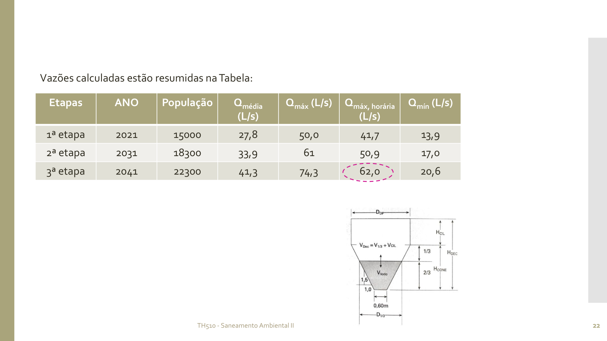
          <div class="slide-caption"><span>Slide 05.5 p.22 — Tabela de Vazões do Exercício de Decantador Primário</span><span>🔍 Ampliar</span></div>
        </div>
      </div>

      <div class="col-comentario">
        <div class="col-comentario-header">
          <span>🧠 Comentários & Justificativas para a Prova</span>
          <span>O Raciocínio de Ouro</span>
        </div>
        <div class="step-item">
          <h5>1. Olhe como a escolha de $H = 3{,}70\text{ m}$ amarrou perfeitamente as duas restrições de $\theta_H$!</h5>
          <p><span class="justificativa-tag">Justificativa Perfeita</span> Pela NBR 12209/11 (item 6.3.4), o Decantador Primário tem uma janela dupla de Tempo de Detenção Hidráulica:
          <br>• Na vazão máxima, $\theta_H$ deve ser <strong>$&gt; 1\text{ h}$</strong> (para dar tempo suficiente para a sedimentação floculenta ocorrer sem arraste de sólidos);
          <br>• Na vazão média, $\theta_H$ deve ser <strong>$&lt; 3\text{ h}$</strong> (para evitar que o esgoto entre em condições sépticas/anaeróbias no decantador, o que geraria bolhas de gás que flotam o lodo e causam mau cheiro!).
          <br>Como $Q_{\text{máx}} / Q_{\text{méd}} = 1{,}8$, qualquer $\theta_H(Q_{\text{máx}}) \in [1{,}0\text{ h}; 1{,}6\text{ h}]$ garante automaticamente $\theta_H(Q_{\text{méd}}) \in [1{,}8\text{ h}; 2{,}9\text{ h}] &lt; 3{,}0\text{ h}$!</p>
        </div>
        <div class="step-item">
          <h5>2. E se for sem mecanização (poço cônico de lodo — Slide 16)?</h5>
          <p>Para $D = 6{,}80\text{ m}$ ($\le 7{,}0\text{ m}$) e base inferior de $d = 0{,}60\text{ m}$ com inclinação $1{,}5\text{V}:1\text{H}$: a altura total do tronco de cone de lodo é $H_{\text{cone}} = 1{,}5 \times \frac{6{,}80 - 0{,}60}{2} = \mathbf{4{,}65\text{ m}}$! E apenas o terço superior desse cone ($1{,}55\text{ m}$) + a parede cilíndrica lateral ($\ge 0{,}50\text{ m}$) entram na conta do volume útil de decantação!</p>
        </div>
      </div>
    </div>
  </div>

  <!-- =================================================================
       EXERCÍCIO 08: LODOS ATIVADOS CONVENCIONAL (SLIDE 05.6 LA p.27)
       ================================================================= -->
  <!-- =================================================================
       EXERCÍCIO 09: UASB EXERCÍCIO 01 — COTAS E VELOCIDADES NBR 12209
       ================================================================= -->
  <div id="ex09" class="card">
    <div class="card-header">
      <h2 class="card-title">📌 Exercício 9 — Reator UASB (Exercício 01 dos Slides): Medidas e Velocidades da NBR 12209/11</h2>
      <span class="badge badge-red">PDF 05.6 UASB Ex. 01 Solução • Slide Completo da Professora</span>
    </div>

    <div class="ex-enunciado">
      <h4>📝 Enunciado Completo (Slide 15 do PDF Reatores Anaeróbios / PDF Solução Ex. 01):</h4>
      <p><em>"Exercício 1: Colocar as medidas no UASB e velocidades definidas pela NBR 12209/11."</em></p>
    </div>

    <div class="side-by-side">
      <div class="col-resolucao">
        <div class="col-resolucao-header">
          <span>📘 Resolução Original Completa da Professora</span>
          <span>PDF UASB_Exercicio_01_solucao</span>
        </div>
        <div class="slide-box">
          
          <div class="slide-caption"><span>Resolução Oficial da Professora — Todos os itens 6.4.3 a 6.4.13 da NBR 12209/11</span><span>🔍 Ampliar</span></div>
        </div>
        <div class="step-item">
          <h5>Resumo Textual de Todos os Itens Apontados na Solução da Professora:</h5>
          <ul>
            <li><strong>Item 6.4.3 — Tempo de detenção hidráulico ($\theta_H$) para $Q_{\text{média}}$ conforme temperatura do esgoto no mês mais frio:</strong>
              <ul>
                <li>$T &gt; 25^\circ\text{C} \implies \theta_H \ge \mathbf{6\text{ h}}$</li>
                <li>$22^\circ\text{C} \le T \le 25^\circ\text{C} \implies \theta_H \ge \mathbf{7\text{ h}}$</li>
                <li>$18^\circ\text{C} \le T \le 21^\circ\text{C} \implies \theta_H \ge \mathbf{8\text{ h}}$</li>
                <li>$15^\circ\text{C} \le T \le 17^\circ\text{C} \implies \theta_H \ge \mathbf{10\text{ h}}$</li>
              </ul>
            </li>
            <li><strong>Item 6.4.5 — Profundidades úteis:</strong> Altura útil total $H_{\text{útil}} = \mathbf{4\text{ a }6\text{ m}}$; altura mínima do compartimento de digestão $\ge \mathbf{2{,}5\text{ m}}$.</li>
            <li><strong>Item 6.4.8 — Velocidade ascensional no compartimento de digestão ($v_{\text{asc}}$):</strong> $\le \mathbf{0{,}7\text{ m/h}}$ para $Q_{\text{média}}$ e $\le \mathbf{1{,}2\text{ m/h}}$ para $Q_{\text{máx}}$.</li>
            <li><strong>Item 6.4.9 — Velocidade de passagem ($v_p$) da digestão para a decantação:</strong> $\le \mathbf{2{,}5\text{ m/h}}$ ($Q_{\text{média}}$) e $\le \mathbf{4{,}0\text{ m/h}}$ ($Q_{\text{máx}}$).</li>
            <li><strong>Item 6.4.10 — Trespasse dos defletores de gases:</strong> Exceder pelo menos $\mathbf{0{,}15\text{ m}}$ ($15\text{ cm}$) a abertura de passagem.</li>
            <li><strong>Item 6.4.11 — Taxa de escoamento superficial no decantador ($\text{TAS}$):</strong> $\le \mathbf{1{,}2\text{ m}^3/(\text{m}^2\cdot\text{h)}}$ para $Q_{\text{máx}}$.</li>
            <li><strong>Item 6.4.12 — TDH no compartimento de decantação:</strong> $\ge \mathbf{1{,}5\text{ h}}$ ($Q_{\text{média}}$) e $&gt; \mathbf{1{,}0\text{ h}}$ ($Q_{\text{máx}}$).</li>
            <li><strong>Item 6.4.13 — Geometria do compartimento de decantação:</strong> Profundidade mínima $\ge \mathbf{1{,}5\text{ m}}$, sendo parede vertical $\ge \mathbf{0{,}3\text{ m}}$ e paredes inclinadas com ângulo $\theta \ge \mathbf{50^\circ}$.</li>
          </ul>
        </div>
      </div>

      <div class="col-comentario">
        <div class="col-comentario-header">
          <span>🧠 Comentários & Justificativas para a Prova</span>
          <span>Por que Cada Regra Existe?</span>
        </div>
        <div class="step-item">
          <h5>Explicação Física de Cada Limite (Se a professora perguntar "Por quê?"):</h5>
          <ul>
            <li><strong>Por que $\theta_H$ aumenta quando a temperatura cai ($6\text{h} \to 10\text{h}$)?</strong> Porque as arqueias metanogênicas são sensíveis à temperatura (mesofílicas); em temperaturas menores, sua taxa metabólica cai, exigindo maior tempo de contato entre o esgoto e a manta de lodo.</li>
            <li><strong>Por que limitar $v_{\text{asc}} \le 0{,}7\text{ m/h}$ ($Q_{\text{méd}}$) e $\le 1{,}2\text{ m/h}$ ($Q_{\text{máx}}$)?</strong> Porque no tratamento de esgoto sanitário doméstico formam-se flocos (lodo floculento, e não grânulos pesados). Se $v_{\text{asc}}$ ultrapassar a velocidade de sedimentação da manta de lodo, ocorre o <strong>arraste hidrodinâmico (perda de biomassa)</strong> para fora do reator!</li>
            <li><strong>Por que limitar $v_p \le 2{,}5 / 4{,}0\text{ m/h}$ na garganta do separador trifásico?</strong> Porque toda a vazão precisa passar pela fenda estreita entre o defletor e a parede inclinada. Se $v_p$ for maior que $4{,}0\text{ m/h}$, o jato impede que o lodo que decantou no compartimento superior consiga escorregar de volta contra a corrente para o fundo do reator!</li>
            <li><strong>Por que o trespasse de $\ge 0{,}15\text{ m}$ e o ângulo $\theta \ge 50^\circ$?</strong> O trespasse de $15\text{ cm}$ funciona como uma "aba/guarda-chuva" que impede que as bolhas de biogás que sobem verticalmente entrem no compartimento de decantação (onde causariam turbulência e flotação do lodo). E o ângulo $\ge 50^\circ$ garante que o lodo sedimentado deslize por gravidade de volta para a câmara de digestão sem acumular nas paredes!</li>
          </ul>
        </div>
      </div>
    </div>
  </div>

  <!-- =================================================================
       EXERCÍCIO 10: UASB EXERCÍCIO 02 COMPLETO (a até k)
       ================================================================= -->
  <div id="ex10" class="card">
    <div class="card-header">
      <h2 class="card-title">📌 Exercício 10 — Dimensionamento Completo do Reator UASB Retangular (Passos a até k)</h2>
      <span class="badge badge-red">PDF 05.6 UASB Ex. 02 Solução (7 Páginas Completas da Professora)</span>
    </div>

    <div class="ex-enunciado">
      <h4>📝 Enunciado Completo (Páginas 1 e 2 de `TH510_05_6_UASB_Exercicio_02_solucao.pdf`):</h4>
      <p><em>"Exercício 2: Dimensione reatores anaeróbios de fluxo ascendente e manto de lodo, retangular, conforme esquema, para atender uma população inicial de 15000 habitantes, com contribuição per capita de esgoto de 160 L/d e taxa de crescimento populacional geométrico de 2%. Horizonte de projeto de 20 anos. (Simplificando: Desconsiderando Infiltração e contribuições específicas).
      <br>Declividade do último tubo da rede coletora: 0,006 m/m.
      <br>Esgoto predominantemente doméstico, cujos dados médios na entrada da ETE (esgoto bruto) são: $\text{DBO}_{5,20} = 350\text{ mg/L}$; $\text{DQO} = 500\text{ mg/L}$; $\text{Coliformes fecais} = 4\cdot 10^7\text{ org/100mL}$; $\text{SST} = X = 1040\text{ mg/L} = 1{,}04\text{ kg/m}^3$."</em></p>
    </div>

    <div class="side-by-side">
      <div class="col-resolucao">
        <div class="col-resolucao-header">
          <span>📘 Resolução Original da Professora (Itens a até k)</span>
          <span>Páginas 3 a 7 do PDF</span>
        </div>

        <div class="step-item">
          <h5>a) Vazões de Projeto (Fim de Plano — 3ª Etapa, 22.300 hab):</h5>
          <ul>
            <li>Vazão média: $\bar{Q} = 41{,}3\text{ L/s} = \mathbf{148{,}68\text{ m}^3/\text{h}}$</li>
            <li>Vazão máxima: $Q_{\text{máx}} = 74{,}3\text{ L/s} = \mathbf{267{,}48\text{ m}^3/\text{h}}$</li>
          </ul>
        </div>

        <div class="step-item">
          <h5>b) Volume Total Necessário do Reator UASB ($\text{Vol}$):</h5>
          <p>NBR 12209/11: para temperatura média do mês mais frio entre $18\text{--}21^\circ\text{C}$, recomenda-se $\theta_h \ge 8\text{ h}$ para vazão média:</p>
          $$\text{Vol} = \bar{Q} \times \theta_h = 148{,}68\text{ m}^3/\text{h} \times 8\text{ h} = \mathbf{1.189{,}44\text{ m}^3}$$
        </div>

        <div class="step-item">
          <h5>c) Profundidade Útil ($h$) e d) Área Superficial Necessária ($A$):</h5>
          <p>Adotando a profundidade mínima indicada pela NBR 12209/11: $h = 1{,}5\text{ m (decantação)} + 2{,}5\text{ m (digestão)} = \mathbf{4{,}0\text{ m}}$ (com parede vertical superior de $0{,}5\text{ m} \ge 0{,}3\text{ m}$ e parede inclinada de $1{,}0\text{ m}$):</p>
          $$A = \frac{\text{Vol}}{h} = \frac{1189{,}44\text{ m}^3}{4\text{ m}} = \mathbf{297{,}36\text{ m}^2}$$
        </div>

        <div class="step-item">
          <h5>e) Geometria da Seção Transversal ($B = 4{,}0\text{ m}$) e f) Comprimento ($L$):</h5>
          <ul>
            <li><strong>Parede inclinada do decantador:</strong> Altura vertical $y = 100\text{ cm}$. Para $\theta \ge 50^\circ$: $x = \frac{100}{\tan 50^\circ} = 83{,}9\text{ cm} \implies$ Adota-se <strong>$x = 80\text{ cm}$</strong>, resultando em $\theta = \tan^{-1}(100/80) = \mathbf{51{,}3^\circ \ge 50^\circ}$ (OK!).</li>
            <li><strong>Defletor de gases (triângulo na base):</strong> Altura $40\text{ cm}$ a $45^\circ \implies$ hipotenusa $a = \sqrt{40^2 + 40^2} = 56\text{ cm} \implies$ Adota-se <strong>$a = 60\text{ cm}$</strong>, o que deixa uma abertura livre de passagem perpendicular de <strong>$e_p = 42{,}4\text{ cm} = 0{,}424\text{ m}$</strong> de cada lado ($2 \times 60 = 120\text{ cm}$ na base, garantindo trespasse de $15\text{ cm}$ de cada lado!).</li>
            <li><strong>Largura total da seção ($B$):</strong> $B = 2 \times \text{câmara de gases }(60\text{ cm}) + \text{decantador }(280\text{ cm}) = \mathbf{400\text{ cm} = 4{,}0\text{ m}}$.</li>
            <li><strong>Comprimento total e divisão em 4 reatores UASB:</strong>
              $$L_{\text{total}} = \frac{A}{B} = \frac{297{,}36}{4{,}0} = 74{,}34\text{ m} \implies \text{Para } 4\text{ reatores: } L_{1\text{ UASB}} = \frac{74{,}34}{4} = 18{,}58\text{ m} \implies \text{Adota-se } \mathbf{L = 20\text{ m}}$$
              <strong>Resultado Construtivo: 4 Reatores UASB de $L = 20\text{ m}$, $B = 4\text{ m}$, $H = 4\text{ m}$!</strong>
            </li>
          </ul>
        </div>

        <div class="step-item">
          <h5>g) Verificação da Velocidade Ascensional ($v_{\text{asc}}$) e h) Velocidade de Passagem ($v_p$):</h5>
          <ul>
            <li><strong>Velocidade ascensional ($A_{\text{tot}} = 4 \times 20 \times 4 = 320\text{ m}^2$):</strong>
              $$v_{\text{asc}}(\bar{Q}) = \frac{148{,}68}{4 \times (20 \times 4)} = \mathbf{0{,}46\text{ m/h}} \le 0{,}7\text{ m/h (OK!)}$$
              $$v_{\text{asc}}(Q_{\text{máx}}) = \frac{267{,}48}{4 \times (20 \times 4)} = \mathbf{0{,}83\text{ m/h}} \le 1{,}2\text{ m/h (OK!)}$$
            </li>
            <li><strong>Velocidade de passagem nas aberturas ($2\text{ fendas por reator de }0{,}424\text{ m} \times 20\text{ m}$):</strong>
              $$v_p(\bar{Q}) = \frac{148{,}68}{4 \times [20 \times 2 \times 0{,}424]} = \mathbf{2{,}19\text{ m/h}} \ (\text{no slide: }2{,}06\text{ m/h}) \le 2{,}5\text{ m/h (OK!)}$$
              $$v_p(Q_{\text{máx}}) = \frac{267{,}48}{4 \times [20 \times 2 \times 0{,}424]} = \mathbf{3{,}94\text{ m/h}} \le 4{,}0\text{ m/h (OK!)}$$
            </li>
          </ul>
        </div>

        <div class="step-item">
          <h5>i) Volume Útil de 1 UASB, j) TDH Real e k) Verificação do Compartimento de Decantação:</h5>
          <ul>
            <li>$\text{Vol}_{1\text{ UASB}} = 20 \times 4 \times 4 = \mathbf{320\text{ m}^3} \implies \theta_h = \frac{320}{148{,}68 / 4} = \mathbf{8{,}6\text{ h}} \ge 8\text{ h (OK!)}$.</li>
            <li><strong>k.1) Volume do compartimento de decantação de 1 UASB (retângulo superior de $2{,}8\text{ m} \times 0{,}5\text{ m}$ + trapézio de bases $2{,}8\text{ m}$ e $1{,}2\text{ m}$ e altura $1{,}0\text{ m}$, multiplicado por $L=20\text{ m}$):</strong>
              $$\text{Vol}_{\text{dec}} = (2{,}8 \times 20 \times 0{,}5) + \left(\frac{2{,}8 + 1{,}2}{2} \times 1{,}0 \times 20\right) = 28 + 40 = \mathbf{68\text{ m}^3}$$
            </li>
            <li><strong>k.2) TDH no decantador:</strong>
              $$\theta_h(\bar{Q}) = \frac{68}{148{,}68 / 4} = \mathbf{1{,}83\text{ h}} \ge 1{,}5\text{ h (OK!)} \quad \Big| \quad \theta_h(Q_{\text{máx}}) = \frac{68}{267{,}48 / 4} = \mathbf{1{,}02\text{ h}} \ge 1{,}0\text{ h (OK!)}$$
            </li>
            <li><strong>k.3) Taxa de escoamento superficial no decantador ($\text{TAS}_{\text{dec}}$):</strong>
              $$\text{TAS}_{\text{dec}} = \frac{Q_{\text{máx}} / 4}{A_{\text{sup,dec}}} = \frac{267{,}48 / 4}{2{,}8 \times 20} = \frac{66{,}87}{56} = \mathbf{1{,}19\text{ m}^3/(\text{m}^2\cdot\text{h)}} \le 1{,}2\text{ m}^3/(\text{m}^2\cdot\text{h) (OK!)}$$
            </li>
          </ul>
        </div>

        <div class="grid-2">
          <div class="slide-box">
            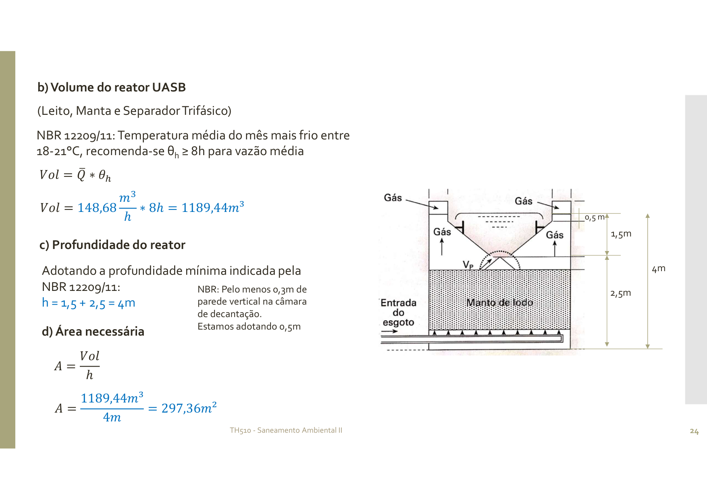
            <div class="slide-caption"><span>Pág. 4 — Cálculo de Vol, Profundidade e Área</span><span>🔍 Ampliar</span></div>
          </div>
          <div class="slide-box">
            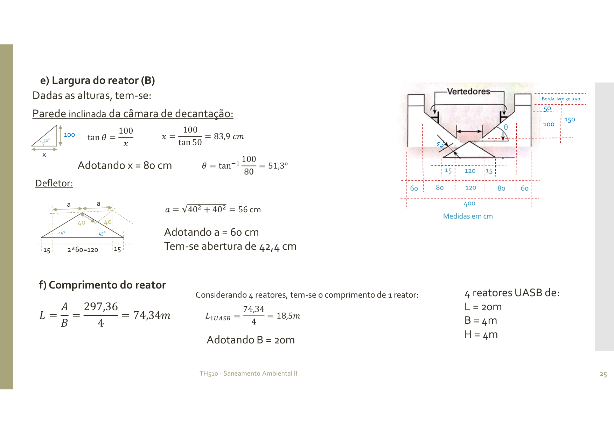
            <div class="slide-caption"><span>Pág. 5 — Geometria do Separador Trifásico (em cm)</span><span>🔍 Ampliar</span></div>
          </div>
          <div class="slide-box">
            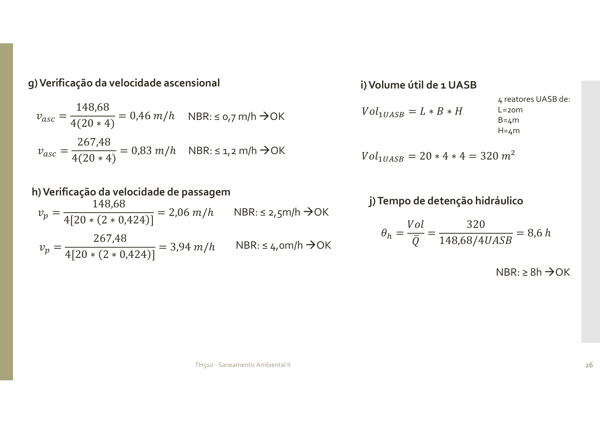
            <div class="slide-caption"><span>Pág. 6 — Verificação de $v_{\text{asc}}$, $v_p$ e $\theta_h$</span><span>🔍 Ampliar</span></div>
          </div>
          <div class="slide-box">
            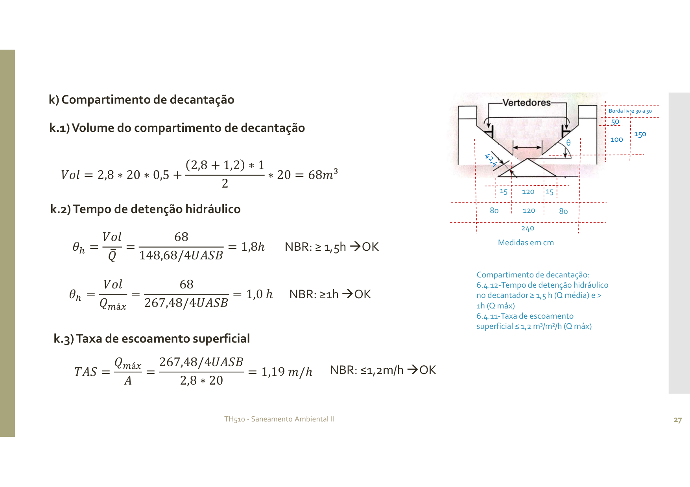
            <div class="slide-caption"><span>Pág. 7 — Verificação do Compartimento de Decantação</span><span>🔍 Ampliar</span></div>
          </div>
        </div>
      </div>

      <div class="col-comentario">
        <div class="col-comentario-header">
          <span>🧠 Comentários & Segredos Geométricos do Exercício</span>
          <span>Entenda cada Número da Página 5 e 7!</span>
        </div>
        <div class="step-item">
          <h5>1. Como a professora fechou as cotas horizontais somando $B = 400\text{ cm}$ ($4{,}0\text{ m}$)?</h5>
          <p><span class="justificativa-tag">Geometria Desvendada</span> Olhe o desenho da Página 5 e 7:
          <br>• <strong>No topo do reator ($B = 400\text{ cm}$):</strong> Há duas meias-campânulas de gás nas bordas laterais ($60\text{ cm}$ na esquerda + $60\text{ cm}$ na direita $= 120\text{ cm}$ dedicados ao coletor de gás). Logo, a largura livre da superfície líquida do compartimento de decantação é $400 - 120 = \mathbf{280\text{ cm} = 2{,}80\text{ m}}$! (É por isso que na página 7 ela usa $2{,}8\text{ m}$ como base maior do decantador e calcula a área superficial do decantador como $A_{\text{dec}} = 2{,}8\text{ m} \times 20\text{ m} = 56\text{ m}^2$!).
          <br>• <strong>Na base inferior da parede inclinada do decantador:</strong> Como cada uma das duas paredes inclinadas avança horizontalmente $x = 80\text{ cm}$ para dentro ($2 \times 80 = 160\text{ cm}$), a abertura inferior entre as paredes do decantador passa de $280\text{ cm}$ para $280 - 160 = \mathbf{120\text{ cm} = 1{,}20\text{ m}}$! (É por isso que a base menor do trapézio na página 7 vale $1{,}2\text{ m}$!).
          <br>• <strong>Como garante o trespasse de $15\text{ cm}$?</strong> O vão inferior do decantador tem $120\text{ cm}$, mas o defletor triangular logo abaixo tem largura de $150\text{ cm}$ ($120 + 15\text{ cm de cada lado}$), garantindo exatamente o trespasse mínimo de $15\text{ cm}$ exigido pelo item 6.4.10 da NBR 12209!</p>
        </div>
        <div class="step-item">
          <h5>2. Como ela achou a abertura de passagem $0{,}424\text{ m}$ ($42{,}4\text{ cm}$)?</h5>
          <p>O espaço vertical/inclinado onde ficam os defletores tem $120\text{ cm}$ ($2 \times 60\text{ cm}$). Como a aba do defletor a $45^\circ$ ocupa $a = 60\text{ cm}$, sobram $60\text{ cm}$ na vertical/horizontal, cuja projeção perpendicular a $45^\circ$ é $60 \times \sin(45^\circ) = 60 \times 0{,}707 = \mathbf{42{,}4\text{ cm} = 0{,}424\text{ m}}$!</p>
        </div>
        <div class="step-item">
          <h5>3. Por que o arredondamento de $L = 18{,}58\text{ m}$ para $L = 20\text{ m}$ salvou os critérios k.2 e k.3?</h5>
          <p>Repare que na página 7, mesmo com $L = 20\text{ m}$, o $\theta_h(Q_{\text{máx}})$ no decantador deu cravado em <strong>$1{,}02\text{ h}$</strong> (limite $\ge 1{,}0\text{ h}$) e a $\text{TAS}_{\text{dec}}$ deu cravada em <strong>$1{,}19\text{ m/h}$</strong> (limite $\le 1{,}20\text{ m/h}$)! Se tivesse mantido $L = 18{,}58\text{ m}$, a $\text{TAS}_{\text{dec}}$ teria dado $1{,}28\text{ m/h}$ (reprovando na NBR 12209!). Isso mostra como justificar o arredondamento construtivo para cima ($L = 20\text{ m}$) em função da verificação hidráulica do decantador sob $Q_{\text{máx}}$!</p>
        </div>
      </div>
    </div>
  </div>

  <!-- =================================================================
       EXERCÍCIO 11: TANQUE SÉPTICO + WETLAND FSSH (SLIDE 05.7 p.32)
       ================================================================= -->
  
</section>

<!-- =====================================================================
     ABA 4: SIMULADOR REAL DA FOLHA A4 MANUSCRITA (FRENTE E VERSO)
     ===================================================================== -->
<section id="tab-a4" class="tab-section">

  <div class="a4-controls no-print">
    <div>
      <h3 style="margin-bottom:4px;">📄 Folha A4 Prática de Prova (Frente e Verso) — Fórmulas Nomeadas, Roteiros de Exercícios & Variáveis Diretas</h3>
      <p style="font-size:0.86rem; color:var(--text-muted);">
        Versão enxuta e orientada à execução rápida na prova: cada quadrante traz <strong>(1) Fórmulas com seus nomes</strong>, <strong>(2) Passo a Passo de Resolução do Exercício</strong> e <strong>(3) Variáveis diretas + Justificativas prontas</strong> (sem tabelas gigantes desnecessárias).
      </p>
    </div>
    <div style="display:flex; gap:10px; flex-wrap:wrap;">
      <button class="nav-btn" style="background:#0f172a; color:#fff;" onclick="toggleHandwriting()">✍️ Alternar Fonte Caligrafia / Limpa</button>
      <button class="nav-btn" style="background:#16a34a; color:#fff; border-color:#15803d;" onclick="window.print()">🖨️ Visualizar Impressão A4 (2 Páginas Exatas)</button>
    </div>
  </div>

  <div class="a4-wrapper">

    <!-- ===============================================================
         PÁGINA 1 DA FOLHA A4 — FRENTE (QUADRANTES Q1 A Q4)
         =============================================================== -->
    <div class="a4-page" id="a4-frente">
      <div class="a4-banner">
        <span>FOLHA A4 — FRENTE: FÓRMULAS NOMEADAS, ROTEIROS PASSO A PASSO & VARIÁVEIS DIRETAS</span>
        <span>Q1 (CARGA/RIO) • Q2 (PRELIMINAR/PRIMÁRIO) • Q3 (SÉPTICO/FILTRO) • Q4 (UASB)</span>
      </div>

      <!-- QUADRANTE 1: CARACTERIZAÇÃO, VAZÕES, CARGAS E STREETER-PHELPS -->
      <div class="a4-quad">
        <div class="a4-quad-title">
          <span>Q1. VAZÕES, CARGA ORGÂNICA & STREETER-PHELPS (AUTODEPURAÇÃO)</span>
          <span>Frente • Q1</span>
        </div>
        <div class="a4-formula">
          <strong>📐 Fórmulas com Nomes:</strong><br>
          • <strong>População Geométrica:</strong> $P_f = P_i \cdot (1 + r)^n$ &nbsp;|&nbsp; <strong>Vazão Média:</strong> $\bar{Q} = \frac{P \cdot q \cdot R}{86400}\text{ [L/s]}$ ($R=0,8$ se dado consumo de água; $R=1$ se já for contribuição de esgoto)<br>
          • <strong>Vazões Extremas:</strong> $Q_{\text{máx,d}} = k_1\bar{Q}\ (1,2)$ &nbsp;|&nbsp; $Q_{\text{máx,h}} = k_2\bar{Q}\ (1,5)$ &nbsp;|&nbsp; $Q_{\text{máx}} = k_1 k_2\bar{Q}\ (1,8)$ &nbsp;|&nbsp; $Q_{\text{mín}} = 0,5\bar{Q}$ &nbsp;|&nbsp; <em>Conversão:</em> $\text{m}^3/\text{h} = \text{L/s}\times 3,6$ ; $\text{m}^3/\text{d} = \text{L/s}\times 86,4$<br>
          • <strong>Carga Orgânica ($W$) e Concentração ($C$):</strong> <span class="hl-yellow">$W\text{ [kg/d]} = \frac{Q(\text{m}^3/\text{d}) \cdot C(\text{mg/L})}{1000} = Q(\text{L/s})\cdot C(\text{mg/L})\cdot 0,0864$</span> &nbsp;|&nbsp; $C = \frac{W}{Q}$ ($1\text{ mg/L} = 1\text{ g/m}^3$)<br>
          • <strong>População Equivalente ($PE$):</strong> $PE = \frac{W_{\text{total (g DBO/d)}}}{54\text{ g DBO/(hab}\cdot\text{d)}}$ &nbsp;|&nbsp; <strong>Pop. Hidráulica Equiv.:</strong> $PHE = \frac{Q_{\text{total}}}{q_{\text{per capita}}}$<br>
          • <strong>Concentração de Mistura no Rio ($x=0$):</strong> <span class="hl-green">$C_0 = C_m = \frac{Q_r C_r + Q_e C_e}{Q_r + Q_e}$</span> &nbsp;(idem p/ Temperatura de mistura $T_m$)<br>
          • <strong>Decaimento da DBO no Rio (Streeter-Phelps):</strong> <span class="hl-yellow">$C(t) = C_0 \cdot e^{-(k_{1,T} + k_s)\cdot t}$</span> &nbsp;onde $t = \frac{x}{U}\text{ [d]}$, $k_s = \frac{v_s}{h}\text{ [d}^{-1}]$ e $k_{1,T} = k_{1,20}\cdot 1,047^{(T - 20)}$<br>
          • <strong>Eficiência de Remoção ($E$):</strong> $E = \frac{C_{\text{in}} - C_{\text{out}}}{C_{\text{in}}}$ &nbsp;$\implies C_{\text{out}} = C_{\text{in}}\cdot(1 - E)$
        </div>
        <ul class="a4-list">
          <li><strong>🧭 Roteiro Exercício de Carga & Concentração:</strong>
            <br><code>Passo 1:</code> Calcular $Q = P \cdot q$ (em $\text{L/d}$ ou $\text{m}^3/\text{d}$). <code>Passo 2:</code> Calcular $W = P \cdot 54\text{ g/d}$ ($\div 1000 \to \text{kg/d}$). <code>Passo 3:</code> Achar $C = W / Q$ (se $q$ for muito alto, ex. $300\text{ L/d}$, o esgoto fica diluído $C=180\text{ mg/L}$, mas a carga $W$ a tratar é a mesma!).
          </li>
          <li><strong>🧭 Roteiro Exercício Streeter-Phelps & Enquadramento CONAMA:</strong>
            <br><code>Passo 1:</code> Converter $Q_e$ p/ $\text{m}^3/\text{s}$ e calcular $C_0$ e $T_m$ na mistura ($x=0$). Comparar $C_0$ com o limite da <strong>Classe 2 CONAMA 357/05 ($\text{DBO} \le 5\text{ mg/L}$, $\text{OD} \ge 5\text{ mg/L}$)</strong>. Se $C_0 &gt; 5\text{ mg/L} \to$ não atende!
            <br><code>Passo 2:</code> Corrigir $k_{1,T} = k_{1,20}\cdot 1,047^{(T_m - 20)}$, somar $k_r = k_{1,T} + k_s$, converter velocidade do rio $U$ p/ $\text{km/d}$ ($\text{m/s}\times 86,4$) e montar $C(x) = C_0 \cdot e^{-k_r \cdot (x / U)}$.
            <br><code>Passo 3 (Eficiência exigida da ETE):</code> Fixar $C_m = 5\text{ mg/L}$ na equação da mistura: $5 = \frac{Q_r C_r + Q_e \cdot C_{e,\text{trat}}}{Q_r + Q_e} \to$ isolar $C_{e,\text{trat}}$ admissível $\to$ calcular $E = \frac{C_{e,\text{bruto}} - C_{e,\text{trat}}}{C_{e,\text{bruto}}}$.
          </li>
          <li><strong>🎯 Variáveis Diretas & Conceitos:</strong> Esgoto bruto típico: $\text{DBO}_5 = \mathbf{350\text{ mg/L}}$ ($54\text{ g/hab.d}$); $\text{DQO} = \mathbf{700\text{ mg/L}}$ ($100\text{ g/hab.d}$; mede MO biodegradável + inerte, teste 2–3h); $N_{\text{tot}} = 50\text{ mg/L}$; $P_{\text{tot}} = 14\text{ mg/L}$; $CF = 4\cdot 10^7\text{ org/100mL}$. <strong>CONAMA 430/11 (Lançamento):</strong> $\text{DBO} \le 120\text{ mg/L}$ ou $E \ge 60\%$. <strong>Água cinza (75% vol):</strong> sem vaso/cozinha (reúso). <strong>Água negra (25% vol):</strong> marrom (fezes $\to$ biogás) + amarela (urina $\to$ N e P/estruvita).</li>
          <li><strong>Ordem de Respiração ($\downarrow$ produção de lodo):</strong> 1º Aeróbia ($\text{O}_2 \to 50\text{--}60\%$ da DQO vira lodo!) $\to$ 2º Anóxica ($\text{NO}_3^- \to \text{N}_2$, desnitrificação) $\to$ 3º Dessulfatação ($\text{SO}_4^{2-} \to \text{H}_2\text{S}$, mau cheiro!) $\to$ 4º Metanogênese ($\text{CO}_2 \to \text{CH}_4$, $70\text{--}90\%$ vira biogás e só $5\text{--}15\%$ vira lodo já estabilizado!).</li>
        </ul>
      </div>

      <!-- QUADRANTE 2: TRATAMENTO PRELIMINAR & DECANTADOR PRIMÁRIO -->
      <div class="a4-quad">
        <div class="a4-quad-title">
          <span>Q2. TRATAMENTO PRELIMINAR & DECANTADOR PRIMÁRIO (NBR 12209/11)</span>
          <span>Frente • Q2</span>
        </div>
        <div class="a4-formula">
          <strong>📐 Fórmulas Preliminar:</strong><br>
          • <strong>Curva da Calha Parshall:</strong> $H_p = K \cdot Q^n$ ($Q$ em $\text{m}^3/\text{s}$, $H_p$ em m) &nbsp;|&nbsp; <strong>Degrau Rebaixo ($z$):</strong> <span class="hl-yellow">$z = \frac{Q_{\text{máx},f}\cdot H_{p,\text{mín}} - Q_{\text{mín},i}\cdot H_{p,\text{máx}}}{Q_{\text{máx},f} - Q_{\text{mín},i}}$</span> &nbsp;|&nbsp; <strong>Lâmina Areia:</strong> $H = H_p - z$<br>
          • <strong>Desarenador (Caixa de Areia):</strong> Largura $B = \frac{Q_{\text{máx},f}}{v_h \cdot H_{\text{máx}}}$ &nbsp;|&nbsp; Comprimento $L = 1,5 \cdot \frac{v_h}{v_{s,c}} \cdot H_{\text{máx}} \approx \mathbf{30 \cdot H_{\text{máx}}}$ &nbsp;|&nbsp; $\text{TAS} = \frac{Q_{\text{máx},f}}{B \cdot L}$<br>
          <strong>📐 Fórmulas Decantador Primário (DP):</strong><br>
          • <strong>Área por TAS:</strong> <span class="hl-green">$A = \frac{Q_{\text{proj}}}{\text{TAS}}$</span> &nbsp;|&nbsp; <strong>Diâmetro Circular:</strong> $D = \sqrt{\frac{4 \cdot A_{\text{unit}}}{\pi}}$ &nbsp;|&nbsp; <strong>Tempo Detenção:</strong> $\theta_H = \frac{V}{Q}$ &nbsp;|&nbsp; <strong>Taxa no Vertedor:</strong> $q_L = \frac{Q_{\text{máx}}}{\pi \cdot D \cdot n_{\text{unid}}}$
        </div>
        <ul class="a4-list">
          <li><strong>🧭 Roteiro Tratamento Preliminar (Ordem Obrigatória: Parshall $\to$ Degrau $z$ $\to$ Areia $\to$ Grade):</strong>
            <br><code>Passo 1 (Parshall e z):</code> Usar $Q_{\text{mín},i}$ (1ª etapa) e $Q_{\text{máx},f}$ (fim de plano) em $\text{m}^3/\text{s}$. Escolher Parshall: <strong>$6''$ ($W=0,15\text{m}: K=1,842; n=0,636$)</strong> ou <strong>$9''$ ($W=0,229\text{m}: K=1,486; n=0,633$)</strong>. Calcular $H_{p,\text{mín}}$, $H_{p,\text{máx}}$, o degrau $z$ e a lâmina máxima $H_{\text{máx}} = H_{p,\text{máx}} - z$. <em>(Justificativa: o degrau $z$ mantém $v_h$ constante na caixa de areia!)</em>
            <br><code>Passo 2 (Caixa de Areia — Sedimentação Discreta):</code> Partícula-alvo $d \ge 0,2\text{ mm} \implies v_{s,c} = \mathbf{0,021\text{ m/s}}$. Adotar velocidade horizontal <span class="hl-yellow">$v_h = \mathbf{0,30\text{ m/s}}$ (faixa NBR: $0,25\text{ a }0,40\text{ m/s}$)</span>. Calcular $B$ (mín. $0,60\text{ m}$ p/ $H_{\text{tot}}&lt;1\text{m}$ ou $0,90\text{ m}$ p/ $1\text{--}2\text{m}$) e $L = 1,5(v_h/v_{s,c})H_{\text{máx}}$. Checar $L/B \ge 3\text{ a }4$ e <span class="hl-yellow">$\text{TAS} \in [600, 1300]\text{ m}^3/(\text{m}^2\cdot\text{d)}$</span> (s/ DP: $\le 1000$).
            <br><code>Passo 3 (Grade):</code> Se $Q_{\text{máx},f} &lt; 100\text{ L/s} \to$ <strong>Limpeza Manual ($\theta = 45^\circ\text{--}60^\circ$)</strong>; se $Q_{\text{máx},f} \ge 100\text{ L/s} \to$ <strong>Mecanizada obrigatória ($\theta = 60^\circ\text{--}90^\circ$)</strong>. Espaçamento: Grossa ($4\text{--}10\text{ cm}$), Média ($2\text{--}4\text{ cm}$, usual $2,5\text{ cm}$, retém $0,04\text{ L/m}^3$), Fina ($1\text{--}2\text{ cm}$).
          </li>
          <li><strong>🧭 Roteiro Decantador Primário (Sedimentação Floculenta — Remove 25–35% DBO e 40–60% SST):</strong>
            <br><code>Passo 1 (Área):</code> Vazão de projeto NBR 12209 (6.3.1): <span class="hl-yellow">$Q_{\text{máx,h}}$</span> (ou $Q_{\text{máx}}$). Adotar <strong>$\text{TAS} \le 90\text{ m}^3/(\text{m}^2\cdot\text{d)}$</strong> (antes de Lodos Ativados ou CEPT) ou <strong>$\text{TAS} \le 60\text{ m}^3/(\text{m}^2\cdot\text{d)}$</strong> (antes de Filtro Biológico). Calcular $A_{\text{tot}} = Q / \text{TAS}$.
            <br><code>Passo 2 (Diâmetro e Nº de Tanques):</code> Adotar $n \ge 2$ tanques (obrigatório se $Q &gt; 250\text{ L/s}$). Se for <strong>sem remoção mecanizada (descarga hidráulica de lodo)</strong>: diâmetro máximo <span class="hl-yellow">$D \le 7,0\text{ m}$</span>, parede cilíndrica $H_{\text{cil}} \ge 0,50\text{ m}$ e poço cônico com inclinação $\ge 1,5\text{V}:1\text{H}$ (base $0,60\text{ m}$; volume útil = cilindro $+ 1/3$ sup. do cone).
            <br><code>Passo 3 (Altura e Verificações):</code> Escolher $H$ tal que <span class="hl-green">$\theta_H(Q_{\text{máx}}) &gt; 1,0\text{ h}$</span> (garantir decantação) e <span class="hl-red">$\theta_H(Q_{\text{méd}}) &lt; 3,0\text{ h}$</span> (evitar septicidade/gás/odor!). Checar vertedor: $q_L \le 500\text{ m}^3/(\text{m}\cdot\text{d)}$.
          </li>
        </ul>
      </div>

      <!-- QUADRANTE 3: TANQUE SÉPTICO & FILTRO ANAERÓBIO (NBR 17076/2024) -->
      <div class="a4-quad">
        <div class="a4-quad-title">
          <span>Q3. TANQUE SÉPTICO & FILTRO ANAERÓBIO (NBR 17076/2024)</span>
          <span>Frente • Q3</span>
        </div>
        <div class="a4-formula">
          <strong>📐 Fórmulas com Nomes (Sistemas de Pequeno Porte: $Q \le \mathbf{12.000\text{ L/d}}$):</strong><br>
          • <strong>1. Vazão Diária Total:</strong> $Q = N \cdot q\text{ [L/d]}$ &nbsp;(onde $N =$ nº total de pessoas contribuintes)<br>
          • <strong>2. Volume Útil do Tanque Séptico (Decanto-Digestor):</strong> <span class="hl-yellow">$V_{\text{TS}} = 1000 + N \cdot (q \cdot T_d + K \cdot L_f)\text{ [em Litros]}$</span> &nbsp;($V_{\text{mín}} = 1000\text{ L}$)<br>
          • <strong>3. Volume Útil do Filtro Anaeróbio (Biofilme Ascendente):</strong> <span class="hl-green">$V_{u,\text{FA}} = I_v \cdot N \cdot q \cdot T_d\text{ [em Litros]}$</span> &nbsp;(com $I_v = \mathbf{1,6}$ e $V_{u,\text{mín}} = 1000\text{ L}$)<br>
          • <strong>4. Altura Total do Filtro Anaeróbio:</strong> $H_{\text{total}} = h_{\text{útil}} + h_1\text{ (calha)} + h_2\text{ (borda)}$ &nbsp;(com $h_{\text{meio+fundo falso}} = 1,20\text{ a }3,0\text{ m}$ e $h_{\text{fundo falso}} \le 0,60\text{ m}$)
        </div>
        <ul class="a4-list">
          <li><strong>🎯 Variáveis Diretas para Substituir nas Fórmulas (Sem precisar de Tabelão):</strong>
            <br>• <strong>Contribuição por Pessoa ($q$ e $L_f$):</strong> Residência <strong>Alto Padrão: $q = 160\text{ L/d}$</strong> | <strong>Médio: $q = 130\text{ L/d}$</strong> | <strong>Baixo ou Hotel: $q = 100\text{ L/d}$</strong> | Alojamento: $80\text{ L/d}$ (Em todas as residências/hotéis: lodo fresco <span class="hl-yellow">$L_f = \mathbf{1,0\text{ L/(hab}\cdot\text{d)}}$</span>). Escritório/Escola: $q=50, L_f=0,20$ | Fábrica: $q=70, L_f=0,30$ | Restaurante: $q=25, L_f=0,10$.
            <br>• <strong>Tempo de Detenção $T_d$ no Tanque Séptico (conforme $Q$ total em L/d):</strong> Até $1500\text{ L/d} \to \mathbf{1,00\text{ d}}$ (24h) | $1501\text{--}3000 \to \mathbf{0,92\text{ d}}$ (22h) | $3001\text{--}4500 \to \mathbf{0,83\text{ d}}$ (20h) | $4501\text{--}6000 \to \mathbf{0,75\text{ d}}$ (18h) | <span class="hl-yellow"><strong>$6001\text{--}7500 \to \mathbf{0,67\text{ d}}$ (16h)</strong></span> | $7501\text{--}9000 \to \mathbf{0,58\text{ d}}$ (14h) | $&gt;9000 \to \mathbf{0,50\text{ d}}$ (12h).
            <br>• <strong>Taxa de Acumulação de Lodo $K$ (dias) por Intervalo de Limpeza (p/ $T\le 10^\circ\text{C} \mid \mathbf{10\le T\le 20^\circ\text{C}} \mid T&gt;20^\circ\text{C}$):</strong>
            <br>&nbsp;&nbsp;– Limpeza <strong>1 ano:</strong> $94 \mid \mathbf{65} \mid 57$ &nbsp;|&nbsp; Limpeza <strong>2 anos:</strong> $134 \mid$ <span class="hl-yellow">$\mathbf{105}$</span> $\mid 97$ &nbsp;|&nbsp; Limpeza <strong>3 anos:</strong> $174 \mid \mathbf{145} \mid 137$ &nbsp;|&nbsp; <strong>4 anos:</strong> $214 \mid 185 \mid 177$ &nbsp;|&nbsp; <strong>5 anos:</strong> $254 \mid 225 \mid 217$.
            <br>• <strong>Tempo de Detenção $T_d$ no Filtro Anaeróbio (p/ $T&lt;15^\circ\text{C} \mid 15\text{--}25^\circ\text{C} \mid &gt;25^\circ\text{C}$):</strong> Até $1500\text{ L/d}: 1,17\mid 1,00\mid 0,92$ ; $1501\text{--}3000: 1,08\mid 0,92\mid 0,83$ ; $3001\text{--}4500: 1,00\mid 0,83\mid 0,75$ ; $4501\text{--}6000: 0,92\mid 0,75\mid 0,67$ ; <span class="hl-green"><strong>$6001\text{--}7500: \mathbf{0,83 \mid 0,67 \mid 0,58}$</strong></span> ; $7501\text{--}12000: 0,75\mid 0,50\mid 0,50$.
          </li>
          <li><strong>🧭 Roteiro Passo a Passo (Ex: Condomínio 10 casas alto padrão $\times 4\text{ hab} = 40\text{ hab}$, $T=12^\circ\text{C}$, 2 anos):</strong>
            <br><code>Passo 1:</code> $N = 40\text{ hab}$, $q = 160\text{ L/d} \implies Q = 6.400\text{ L/d}$ ($\le 12.000\text{ L/d}$, OK!). Na faixa $6001\text{--}7500\text{ L/d} \implies T_{d,\text{TS}} = 0,67\text{ d}$. Para 2 anos e $12^\circ\text{C} \implies K = 105$ e $L_f = 1,0$.
            <br><code>Passo 2:</code> Calcular $V_{\text{TS}} = 1000 + 40(160\times 0,67 + 105\times 1,0) = \mathbf{9.488\text{ L} \approx 9,50\text{ m}^3}$.
            <br><code>Passo 3 (Geometria TS):</code> Escolher profundidade útil $H$ conforme volume: até $6\text{ m}^3 \to 1,2\text{ a }2,2\text{ m}$ | <strong>$6\text{ a }10\text{ m}^3 \to \mathbf{1,5\text{ a }2,5\text{ m}}$</strong> | $&gt;10\text{ m}^3 \to 1,8\text{ a }2,8\text{ m}$. Com $H = 2,0\text{ m} \implies A = 9,5/2,0 = 4,75\text{ m}^2$. Se retangular ($2 \le C/L \le 4$, $L \ge 0,80\text{ m}$): $L = 1,40\text{ m}$ e $C = 3,40\text{ m}$. Se cilíndrico ($D \ge 1,10\text{ m}$): $D = 2,50\text{ m}$.
            <br><code>Passo 4 (Filtro e Distâncias):</code> Filtro: $V_u = 1,6 \times 40 \times 160 \times 0,83 = \mathbf{8.499\text{ L}}$. Distâncias mínimas TS: <strong>$1,5\text{ m}$</strong> (construções/divisas/valas), <strong>$3,0\text{ m}$</strong> (árvores/rede água), <strong>$15\text{ m}$</strong> (poços/rios). Eficiência TS só: $30\text{--}60\%$ DBO; TS + Filtro: $70\text{--}90\%$ DBO.
          </li>
        </ul>
      </div>

      <!-- QUADRANTE 4: REATORES ANAERÓBIOS UASB / RAFA (NBR 12209/2011) -->
      <div class="a4-quad">
        <div class="a4-quad-title">
          <span>Q4. REATOR ANAERÓBIO UASB / RAFA (NBR 12209/11 — EX. 01 E EX. 02)</span>
          <span>Frente • Q4</span>
        </div>
        <div class="a4-formula">
          <strong>📐 Fórmulas com Nomes:</strong><br>
          • <strong>Volume Total UASB:</strong> <span class="hl-yellow">$\text{Vol} = \bar{Q} \cdot \theta_H$</span> &nbsp;|&nbsp; <strong>Área Total:</strong> $A = \frac{\text{Vol}}{H}$ &nbsp;|&nbsp; <strong>Carga Hidráulica Vol.:</strong> $\text{CHV} = \frac{Q}{V} = \frac{1}{\theta_H} &lt; 5\text{ m}^3/(\text{m}^3\cdot\text{d)}$<br>
          • <strong>Carga Orgânica Volumétrica:</strong> $\text{COV} = \frac{Q \cdot C_{\text{DQO}}}{V} &lt; 15\text{ kg DQO}/(\text{m}^3\cdot\text{d)}$ &nbsp;|&nbsp; <strong>Carga Biológica:</strong> $\text{CB} = \frac{Q \cdot C_{\text{DQO}}}{M} = 0,3\text{ a }0,4\text{ kg DQO}/(\text{kg SSV}\cdot\text{d)}$<br>
          • <strong>Velocidade Ascensional (Digestão):</strong> <span class="hl-green">$v_{\text{asc}} = \frac{Q}{n_{\text{UASB}}\cdot B \cdot L}$</span> &nbsp;|&nbsp; <strong>Velocidade nas Aberturas p/ Decantador:</strong> <span class="hl-yellow">$v_p = \frac{Q}{n_{\text{UASB}}\cdot (2 \cdot e_p \cdot L)}$</span><br>
          • <strong>Volume do Compartimento de Decantação (1 UASB):</strong> $V_{\text{dec}} = (b_{\text{sup}}\cdot h_{\text{vert}}\cdot L) + \left(\frac{b_{\text{sup}} + b_{\text{inf}}}{2}\cdot h_{\text{incl}}\cdot L\right)$ &nbsp;|&nbsp; $\text{TAS}_{\text{dec}} = \frac{Q_{\text{máx}} / n_{\text{UASB}}}{b_{\text{sup}}\cdot L}$
        </div>
        <ul class="a4-list">
          <li><strong>🎯 Todos os Limites da NBR 12209/11 (Solução do Exercício 1 de UASB):</strong>
            <br>• <strong>6.4.3 — TDH Total ($\theta_H$ p/ $\bar{Q}$):</strong> $\ge 10\text{ h}$ ($15\text{--}17^\circ\text{C}$) &nbsp;|&nbsp; <span class="hl-yellow"><strong>$\ge 8\text{ h}$ ($18\text{--}21^\circ\text{C}$)</strong></span> &nbsp;|&nbsp; $\ge 7\text{ h}$ ($22\text{--}25^\circ\text{C}$) &nbsp;|&nbsp; $\ge 6\text{ h}$ ($&gt;25^\circ\text{C}$).
            <br>• <strong>6.4.5 e 6.4.13 — Alturas Úteis ($H$):</strong> Total <span class="hl-yellow">$H = \mathbf{4,0\text{ a }6,0\text{ m}}$</span>, sendo <strong>Digestão $\ge 2,5\text{ m}$</strong> e <strong>Decantação $\ge 1,5\text{ m}$</strong> (parede vertical $\ge 0,30\text{ m}$ e parede inclinada com ângulo <span class="hl-yellow">$\theta \ge \mathbf{50^\circ}$</span>).
            <br>• <strong>6.4.8 — Velocidade Ascensional ($v_{\text{asc}}$):</strong> <span class="hl-green"><strong>$\le 0,7\text{ m/h}$ ($\bar{Q}$)</strong></span> e <span class="hl-green"><strong>$\le 1,2\text{ m/h}$ ($Q_{\text{máx}}$)</strong></span>. <em>(Evita arraste da manta de lodo floculento!)</em>
            <br>• <strong>6.4.9 e 6.4.10 — Passagem p/ Decantador ($v_p$) e Trespasse:</strong> <span class="hl-yellow"><strong>$v_p \le 2,5\text{ m/h}$ ($\bar{Q}$)</strong></span> e <span class="hl-yellow"><strong>$\le 4,0\text{ m/h}$ ($Q_{\text{máx}}$)</strong></span>. <strong>Trespasse do defletor de gás $\ge \mathbf{0,15\text{ m}}$ ($15\text{ cm}$)</strong> (impede entrada de biogás no decantador!).
            <br>• <strong>6.4.11 e 6.4.12 — Decantador:</strong> $\theta_{H,\text{dec}} \ge \mathbf{1,5\text{ h}}$ ($\bar{Q}$) e $&gt; \mathbf{1,0\text{ h}}$ ($Q_{\text{máx}}$); <span class="hl-red"><strong>$\text{TAS}_{\text{dec}} \le \mathbf{1,2\text{ m}^3/(\text{m}^2\cdot\text{h)}}$ ($Q_{\text{máx}}$)</strong></span>.
          </li>
          <li><strong>🧭 Roteiro Passo a Passo do Exercício 2 de UASB Retangular (Itens a $\to$ k da Professora):</strong>
            <br><code>a–d)</code> Passar $\bar{Q}$ e $Q_{\text{máx}}$ p/ $\text{m}^3/\text{h}$ ($\bar{Q}=148,68$; $Q_{\text{máx}}=267,48$). Calcular $\text{Vol} = 148,68 \times 8\text{h} = 1189,44\text{ m}^3$. Adotar $H = 4\text{ m}$ ($2,5 + 1,5$) $\implies A = 1189,44/4 = 297,36\text{ m}^2$.
            <br><code>e–f) Geometria da Seção (B = 4,0 m):</code> Topo tem $2\times 0,60\text{ m}$ (coletores de gás) $+ \mathbf{2,80\text{ m}}$ ($b_{\text{sup}}$ do decantador). Parede vertical $= 0,50\text{ m}$. Parede inclinada: altura $1,00\text{ m}$ e avanço horiz. $x = 0,80\text{ m}$ ($\theta = \tan^{-1}(100/80) = 51,3^\circ \ge 50^\circ$), deixando base menor $b_{\text{inf}} = 2,80 - 2(0,80) = \mathbf{1,20\text{ m}}$. Defletor ($45^\circ$, aba $a=0,60\text{ m}$, base $1,50\text{ m} \to$ trespasse $0,15\text{ m}$) deixa 2 fendas de $e_p = 0,60\sin 45^\circ = \mathbf{0,424\text{ m}}$. Dividindo $L_{\text{tot}} = 297,36/4 = 74,34\text{ m}$ em <strong>4 reatores</strong>: $L_1 = 18,58 \to$ adota-se <strong>$L = 20\text{ m}$</strong> ($\text{Vol}_1 = 320\text{ m}^3$).
            <br><code>g–k) Verificações:</code> $v_{\text{asc}} = 0,46$ ($\bar{Q}$) e $0,83\text{ m/h}$ ($Q_{\text{máx}}$); $v_p = 2,06$ ($\bar{Q}$) e $3,94\text{ m/h}$ ($Q_{\text{máx}}$); $V_{\text{dec}} = (2,8\times 0,5\times 20) + (\frac{2,8+1,2}{2}\times 1,0\times 20) = \mathbf{68\text{ m}^3} \implies \theta_{H,\text{dec}} = 1,8\text{h}$ ($\bar{Q}$) e $1,0\text{h}$ ($Q_{\text{máx}}$); $\text{TAS}_{\text{dec}} = \frac{267,48/4}{2,8\times 20} = \mathbf{1,19\text{ m/h}} \le 1,2\text{ (OK!)}$.
          </li>
        </ul>
      </div>
    </div>

    <!-- ===============================================================
         PÁGINA 2 DA FOLHA A4 — VERSO (QUADRANTES Q5 A Q8)
         =============================================================== -->
    <div class="a4-page" id="a4-verso">
      <div class="a4-banner">
        <span>FOLHA A4 — VERSO: LODOS ATIVADOS, LAGOAS, WETLANDS & DIAGNÓSTICO DE PROVA</span>
        <span>Q5 (LODOS ATIVADOS) • Q6 (LAGOAS LA/LF/LM) • Q7 (WETLANDS) • Q8 (COMPARAÇÃO & FALHAS)</span>
      </div>

      <!-- QUADRANTE 5: LODOS ATIVADOS (CONVENCIONAL VS AERAÇÃO PROLONGADA) -->
      <div class="a4-quad">
        <div class="a4-quad-title">
          <span>Q5. TEORIA CRÍTICA DE LAGOAS & SIMBIOSE ALGAS-BACTÉRIAS</span>
          <span>Verso • Q5</span>
        </div>
        <div class="a4-formula">
          <strong>📐 Fórmulas com Nomes:</strong><br>
          • <strong>1. Fração Biodegradável dos SSV ($f_{\text{bio}}$):</strong> <span class="hl-green">$f_{\text{bio}} = \frac{f'_{\text{bio}}}{1 + (1 - f'_{\text{bio}})\cdot k_d \cdot \theta_c}$</span> &nbsp;(onde $f'_{\text{bio}} = \mathbf{0,80}$ e $k_d = \mathbf{0,06\text{ a }0,10\text{ d}^{-1}}$, típ. $0,08$)<br>
          • <strong>2. Volume do Reator Aeróbio ($V$):</strong> <span class="hl-yellow">$V = \frac{Y \cdot \theta_c \cdot Q_a \cdot (S_a - S_e)}{X_V \cdot (1 + k_d \cdot f_{\text{bio}} \cdot \theta_c)}$</span> &nbsp;(onde $Y = \mathbf{0,4\text{ a }0,8\text{ g SSV/g DBO}}$, típ. $0,60$)<br>
          • <strong>3. Relação Alimento/Microrganismo ($A/M$):</strong> $\frac{A}{M} = \frac{Q_a \cdot S_a}{V \cdot X_V}\text{ [kg DBO}/(\text{kg SSV}\cdot\text{d)]}$ &nbsp;|&nbsp; <strong>Tempo de Contato Hidráulico:</strong> $\theta_H = \frac{V}{Q_a}$<br>
          • <strong>4. Idade do Lodo ($\theta_c$):</strong> $\theta_c = \frac{V \cdot X_V}{Q_D \cdot X_{V,R}}$ (Sem recirculação: $\theta_c = \theta_H$) &nbsp;|&nbsp; <strong>5. Razão de Recirculação ($R$):</strong> <span class="hl-green">$R = \frac{Q_R}{Q_a} = \frac{X}{X_R - X}$</span><br>
          • <strong>6. Vazão de Descarte de Lodo Excedente ($Q_D$):</strong> Direto do Reator: $Q_D = \frac{V}{\theta_c}$ &nbsp;|&nbsp; Pela Linha de Recirculação: $Q_D = \frac{V}{\theta_c}\cdot\frac{X}{X_R}$
        </div>
        <ul class="a4-list">
          <li><strong>🎯 Variáveis Diretas de Projeto (NBR 12209/11 — Sem precisar de Tabelão):</strong>
            <br>• <strong>Taxa Convencional:</strong> Idade do lodo <span class="hl-yellow">$\theta_c = \mathbf{4\text{ a }15\text{ dias}}$</span> (usual $6\text{ d}$) &nbsp;|&nbsp; Relação <span class="hl-yellow">$A/M = \mathbf{0,20\text{ a }0,70}$</span> &nbsp;|&nbsp; Biomassa $X_V = \mathbf{1.500\text{ a }3.500\text{ mg/L}}$ (adotar $2500$) &nbsp;|&nbsp; Tempo de contato $\theta_H = 2\text{ a }6\text{ h}$ &nbsp;|&nbsp; Seletor biológico: $A/M \ge 3,0$. <strong>Exige Decantador Primário antes e Digestor de Lodo depois!</strong>
            <br>• <strong>Aeração Prolongada:</strong> Idade do lodo <span class="hl-green">$\theta_c &gt; \mathbf{18\text{ dias}}$</span> &nbsp;|&nbsp; Relação <span class="hl-green">$A/M \le \mathbf{0,15}$</span> ($0,08\text{--}0,15$) &nbsp;|&nbsp; Biomassa $X_V = \mathbf{2.500\text{ a }4.000\text{ mg/L}}$ &nbsp;|&nbsp; Tempo de contato $\theta_H = 8\text{ a }24\text{ h}$ &nbsp;|&nbsp; Seletor: $A/M \ge 1,8$. <strong>Dispensa Decantador Primário e o lodo excedente JÁ SAI ESTABILIZADO</strong> (devido à respiração endógena: falta comida e as bactérias oxidam o próprio material celular!), porém tem maior volume e maior gasto energético ($2,5\text{--}4,0\text{ W/hab}$).
            <br>• <strong>Alta Taxa:</strong> $\theta_c = 2\text{ a }4\text{ d}$ &nbsp;|&nbsp; $A/M = 0,70\text{ a }1,10$.
          </li>
          <li><strong>🧭 Roteiro Passo a Passo do Exercício de Lodos Ativados Convencional:</strong>
            <br><code>Passo 1 (Substrato de Entrada Sa):</code> Descontar os $30\%$ de DBO removidos no Decantador Primário: $S_a = 350 \times (1 - 0,30) = \mathbf{245\text{ mg/L}}$. Adotar DBO solúvel de saída $S_e = \mathbf{20\text{ mg/L}}$ (eficiência global ~94%). Usar vazão média final $Q_a = 3.568,3\text{ m}^3/\text{d}$.
            <br><code>Passo 2 (Cálculo de f_bio e Volume V):</code> Adotar $\theta_c = 6\text{ d}$, $X_V = 2500\text{ mg/L}$, $Y = 0,60$, $k_d = 0,08\text{ d}^{-1}$, $f'_{\text{bio}} = 0,80$. Calcular $f_{\text{bio}} = \frac{0,80}{1 + 0,20\times 0,08\times 6} = \mathbf{0,730}$. Substituir na fórmula de $V \implies \mathbf{V = 856\text{ m}^3}$ (ex: 2 tanques de $428\text{ m}^3$).
            <br><code>Passo 3 (Verificações e Recirculação):</code> Checar $\theta_H = \frac{856}{3568,3}\times 24 = \mathbf{5,76\text{ h}} \in [2, 6]\text{h}$ e $A/M = \frac{3568,3\times 0,245}{856\times 2,5} = \mathbf{0,41} \in [0,20; 0,70]$. Adotando lodo de retorno $X_{V,R} = 8000\text{ mg/L}$: calcular $R = \frac{2500}{8000-2500} = \mathbf{0,455\ (45,5\%)}$ e descarte $Q_D = \frac{856}{6}\times\frac{2500}{8000} = \mathbf{44,6\text{ m}^3/\text{d}}$.
            <br><em>Frase Obrigatória NBR 12209: "O TDH ($\theta_H$) não pode ser usado como parâmetro determinante no dimensionamento; quem governa é a idade do lodo $\theta_c$!"</em>
          </li>
        </ul>
      </div>

      <!-- QUADRANTE 6: LAGOAS DE ESTABILIZAÇÃO (LA, LF, LM) -->
      <div class="a4-quad">
        <div class="a4-quad-title">
          <span>Q6. LAGOAS DE ESTABILIZAÇÃO — SISTEMA AUSTRALIANO (LA $\to$ LF $\to$ LM)</span>
          <span>Verso • Q6</span>
        </div>
        <div class="a4-formula">
          <strong>📐 Fórmulas com Nomes:</strong><br>
          • <strong>1. Lagoa Anaeróbia (LA — Taxa Volumétrica $\lambda_v$):</strong> <span class="hl-yellow">$\lambda_v = \frac{W_{\text{in}}}{V_{\text{LA}}} = \frac{C_i}{T_d}\text{ [g DBO}/(\text{m}^3\cdot\text{d)]}$</span> $\implies V_{\text{LA}} = \frac{W_{\text{in}}}{\lambda_v}$ ou $V_{\text{LA}} = Q \cdot T_d$ &nbsp;|&nbsp; Limpeza LA ($0,5V$): $n_{\text{anos}} = \frac{0,5 \cdot V}{K \cdot \text{Pop}}$ ($K=0,03\text{--}0,04\text{ m}^3/\text{hab.ano}$)<br>
          • <strong>2. Lagoa Facultativa (LF — Carga Superficial $\lambda_s$):</strong> <span class="hl-green">$A_{1/2}\text{ [ha]} = \frac{W_{\text{in,LF}}\text{ [kg DBO/d]}}{\lambda_s\text{ [kg DBO/(ha}\cdot\text{d)]}}$</span> ($1\text{ ha} = 10.000\text{ m}^2$) &nbsp;|&nbsp; <strong>McGarry &amp; Pescod:</strong> $\lambda_{s,\text{máx}} = 20T - 60 \implies \lambda_{s,\text{proj}} = 0,67 \cdot \lambda_{s,\text{máx}}$<br>
          • <strong>3. LF Mistura Completa 1ª Ordem:</strong> $C_e = \frac{C_i}{1 + k_{1,T} T_d}$ e $A_{1/2} = \frac{Q}{H \cdot k_{1,T}}\left(\frac{C_i}{C_e} - 1\right)$ com $k_{1,T} = 0,3(1,05)^{T-20}$ &nbsp;|&nbsp; <strong>Gloyna (90% DBO):</strong> $V = \frac{C_i Q(\text{m}^3/\text{s})}{200} T_{d,35}\cdot 1,047^{(35-T)}$<br>
          • <strong>4. Lagoa de Maturação (LM — Coliformes em Série):</strong> <span class="hl-yellow">$N_e = \frac{N_i}{(1 + k_{b,T} T_{d,1})\cdots(1 + k_{b,T} T_{d,n})}$</span> com $k_{b,T} = 2,6(1,19)^{T-20}$<br>
          • <strong>5. Fluxo Disperso (Yanez):</strong> $N_e = N_0 \frac{4 a e^{1/(2d)}}{(1+a)^2 e^{a/(2d)} - (1-a)^2 e^{-a/(2d)}}$ onde $a = \sqrt{1 + 4 K T_d d}$ e $d = \frac{L/B}{-0,261 + 0,254(L/B) + 1,014(L/B)^2}$<br>
          • <strong>6. Dimensões de Talude ($1\text{V}:n\text{H}$ a partir de $A_{1/2} = L \times B$):</strong> Fundo $= (L - nH)(B - nH)$ &nbsp;|&nbsp; Nível d'água $= (L + nH)(B + nH)$ &nbsp;|&nbsp; Coroamento $= (L + nH + 2nb_l)(B + nH + 2nb_l)$
        </div>
        <ul class="a4-list">
          <li><strong>🧭 Roteiro Passo a Passo dos Exercícios 1, 2 e 3 de Lagoas ($W_{\text{in}} = 1.249\text{ kg DBO/d}$, $Q = 3.568,3\text{ m}^3/\text{d}$):</strong>
            <br><code>Passo 1 — Lagoa Anaeróbia (Ex.1):</code> Adotar $\lambda_v \in [100, 400]\text{ g DBO}/(\text{m}^3\cdot\text{d)}$ (recomendado: $\mathbf{250}$; ou $\lambda_v = 20T-100$ p/ $10\text{--}20^\circ\text{C}$) e <span class="hl-yellow">$T_d \in \mathbf{[3, 6]\text{ dias}}$</span>. <em>(Justificativa: $T_d &lt; 3\text{ d}$ causa lavagem das metanogênicas; $T_d &gt; 6\text{ d}$ cria algas/OD que é letal às metanogênicas!)</em>. Adotar profundidade <strong>$H = 3\text{ a }5\text{ m}$ ($4\text{ m}$)</strong> p/ impedir luz, achar $A_{1/2} = V/H$, relação $L/B = 1\text{ a }3$, e checar $\lambda_s \in [1000, 2000]\text{ kg/(ha}\cdot\text{d)}$ (evitar odor). <strong>Eficiência LA adotada pela professora: 50% ($T\le 20^\circ\text{C}$) a 60% ($T&gt;20^\circ\text{C}$) $\implies$ saem $W_{\text{out,LA}} = \mathbf{624,5\text{ kg DBO/d}}$!</strong>
            <br><code>Passo 2 — Lagoa Facultativa Secundária (Ex.2):</code> Recebe $W_{\text{in,LF}} = 624,5\text{ kg/d}$. Determinar $\lambda_s$ por McGarry ($0,67(20T-60) \approx 228\text{ kg/ha.d}$) ou faixa de Kawai p/ LF secundária ($\mathbf{50\text{ a }170\text{ kg/ha.d}}$, ex: $150\text{ kg/ha.d}$, onde $\lambda_{\text{rem}} = 0,7702\lambda_{\text{aplic}} - 5,4188$). Calcular $A_{1/2} = W_{\text{in,LF}} / \lambda_s$. Adotar <strong>$H = 1,5\text{ m}$</strong> (LF primária: $1,8\text{ m}$; mín. $&gt;0,60\text{ m}$ p/ evitar vegetação/mosquitos) e $L/B = 6:1$. Checar $T_d = V/Q \in [15, 45]\text{ d}$.
            <br><code>Passo 3 — Lagoa de Maturação (Ex.3):</code> Polimento terciário p/ remover patógenos/CF ($90\text{--}99,99\%$; exige $\text{DBO}_{\text{entrada}} &lt; 75\text{ mg/L}$). Adotar lagoa rasa <span class="hl-yellow">$H = \mathbf{0,8\text{ a }1,2\text{ m}}$ ($1,0\text{ m}$)</span> (maximiza penetração UV solar bactericida e eleva pH/OD) e <strong>$T_d = 7\text{ dias}$</strong> (ou 2 a 3 lagoas em série com $T_d \ge 3\text{ d}$ cada). Calcular $V_{\text{LM}} = Q \cdot T_d$, $A_{1/2} = V/H$ e o número final de coliformes $N_e$ pela equação em série ($N_i = 4\cdot 10^7\text{ CF/100mL}$).
          </li>
        </ul>
      </div>

      <!-- QUADRANTE 7: WETLANDS CONSTRUÍDAS (FSSH, FSSV & HÍBRIDO) -->
      <div class="a4-quad">
        <div class="a4-quad-title">
          <span>Q7. SEGREDO DE PROVA DO UASB: VELOCIDADES & SEPARADOR GLS</span>
          <span>Verso • Q7</span>
        </div>
        <div class="a4-formula">
          <strong>📐 Fórmulas com Nomes:</strong><br>
          • <strong>1. Área Wetland Subsuperficial Horizontal (FSSH — Metcalf &amp; Eddy):</strong> <span class="hl-yellow">$A_h = \frac{Q \cdot (\ln C_0 - \ln C_e)}{K_T \cdot p \cdot n}\text{ [m}^2]$</span> &nbsp;com $K_T = K_{20}\cdot(1,06)^{(T-20)}$ ($K_{20} = \mathbf{1,1\text{ a }1,9\text{ d}^{-1}}$)<br>
          • <strong>2. Área Wetland Fluxo Superficial (FS):</strong> $A_h = \frac{Q \cdot (\ln C_0 - \ln C_e)}{K_{\text{DBO}}}$ &nbsp;($K_{\text{DBO}} = 0,10\text{ d}^{-1}$ p/ secundário; $0,31\text{ d}^{-1}$ p/ terciário)<br>
          • <strong>3. Tempo de Detenção Hidráulica Real ($\theta_H$) e Volume com Porosidade ($n$):</strong> <span class="hl-green">$\theta_H = \frac{L \cdot B \cdot h \cdot n}{Q}\text{ [dias]}$</span> &nbsp;e&nbsp; $\text{Vol}_{\text{tanque}} = \frac{Q \cdot \theta_H}{n}$<br>
          • <strong>4. Wetland Fluxo Vertical (FSSV — Balanço de $\text{O}_2$ de Johansen &amp; Brix):</strong> $\text{OD}\text{ [kg O}_2/\text{d]} = 4,3\cdot(\text{kg NH}_4\text{-N/d}) + 1,0\cdot(\text{kg DBO}_5/\text{d}) \implies A = \frac{\text{OD}}{\text{SAD}}$ ($\text{SAD} &lt; 30\text{ g O}_2/(\text{m}^2\cdot\text{d)}$)
        </div>
        <ul class="a4-list">
          <li><strong>🎯 Variáveis Diretas NBR 17076/2024 ($Q \le 12.000\text{ L/d}$ e Carga $\le 3,80\text{ kg DBO/d}$):</strong>
            <br>• <strong>Fluxo Subsuperficial Horizontal (WC-FSSH):</strong> Meio suporte: <strong>Brita nº 1</strong> ($n \approx 0,35\text{--}0,45$, adotar $0,40$) | Operação: <strong>Contínua</strong> (saturado/anóxico $\to$ desnitrifica!) | Profundidade: <strong>$p = h = 0,50\text{ a }0,90\text{ m}$</strong> (nível d'água ~10 cm abaixo do topo da brita) | <span class="hl-yellow">$\text{TAS}_{\text{org,sup}} = \mathbf{6\text{ a }15\text{ g DBO}/(\text{m}^2\cdot\text{d)}}$</span> | <span class="hl-red">$\text{TAS}_{\text{org,seção } (B\times h)} \le \mathbf{250\text{ g DBO}/(\text{m}^2\cdot\text{d)}}$</span> (evita colmatação!) | $\text{TAS}_{\text{hid}} = \mathbf{0,02\text{ a }0,08\text{ m}^3/(\text{m}^2\cdot\text{d)}}$ | Área específica Brasil: $\approx \mathbf{2,0\text{ m}^2/\text{hab}}$.
            <br>• <strong>Fluxo Subsuperficial Vertical (WC-FSSV):</strong> Meio suporte: <strong>Areia</strong> | Operação: <strong>Intermitente por bateladas</strong> (oxigena os poros $\to$ nitrifica!) | Profundidade: <strong>$h = 0,70\text{ a }1,10\text{ m}$</strong> (até $1,5\text{ m}$) | <span class="hl-green">$\text{TAS}_{\text{org,sup}} = \mathbf{10\text{ a }20\text{ g DBO}/(\text{m}^2\cdot\text{d)}}$</span> | $\text{TAS}_{\text{hid}} = \mathbf{0,015\text{ a }0,12\text{ m}^3/(\text{m}^2\cdot\text{d)}}$ | Área Brasil: $\mathbf{0,8\text{ a }1,5\text{ m}^2/\text{hab}}$ (típ. $1,2$).
          </li>
          <li><strong>🧭 Roteiro Passo a Passo do Exercício TS + Wetland FSSH (Condomínio 40 hab, $Q = 6,4\text{ m}^3/\text{d}$, $T = 12^\circ\text{C}$):</strong>
            <br><code>Passo 1 (Saída do TS):</code> Descontar ~35% de DBO no Tanque Séptico: $C_0 = 350 \times (1 - 0,35) = \mathbf{227,5\text{ mg/L}}$ ($W = 6,4 \times 0,2275 = \mathbf{1,456\text{ kg DBO/d}} \le 3,8\text{ kg/d}$).
            <br><code>Passo 2 (Cálculo de K_T e Área Ah):</code> Com $K_{20} = 1,10\text{ d}^{-1}$, a $12^\circ\text{C}$: $K_{12} = 1,10(1,06)^{(12-20)} = \mathbf{0,690\text{ d}^{-1}}$. Adotando $p = 0,50\text{ m}$, $n = 0,40$ e meta $C_e = 30\text{ mg/L}$: $A_h = \frac{6,4(\ln 227,5 - \ln 30)}{0,690 \times 0,50 \times 0,40} = \mathbf{93,9\text{ m}^2}$ (Adota-se <strong>$A_h = 100\text{ m}^2$</strong> para ter $\text{TAS}_{\text{org}} = 1456/100 = 14,56 \le 15\text{ g}/(\text{m}^2\cdot\text{d)}$ e $\text{TAS}_{\text{hid}} = 0,064\text{ m/d}$, OK!).
            <br><code>Passo 3 (Geometria, Seção Transversal e TDH):</code> Relação $L:B \ge 2:1$ (ex: $B = 7,5\text{ m}$, $L = 13,5\text{ m}$, $h = 0,80\text{ m} \implies A_{\text{transv}} = 7,5\times 0,8 = 6,0\text{ m}^2 \implies \text{TAS}_{\text{seção}} = 1456/6 = \mathbf{242,7 \le 250\text{ g}/(\text{m}^2\cdot\text{d)}}$, evitando entupimento!). $\theta_H = \frac{100 \times 0,60 \times 0,40}{6,4} = \mathbf{3,75\text{ dias}}$ ($\ge 2,5\text{ d}$). Impermeabilizar base (PEAD $1\text{ mm}$), fundo $i = 1\%$, tubos $\text{DN }100\text{ mm}$ perfurados na entrada/saída.
          </li>
        </ul>
      </div>

      <!-- QUADRANTE 8: COLA DISCURSIVA — COMPARAÇÃO RÁPIDA, JUSTIFICATIVAS E DIAGNÓSTICO DE FALHAS -->
      <div class="a4-quad">
        <div class="a4-quad-title">
          <span>Q8. RESPOSTAS PRONTAS: COMPARAÇÃO DE SISTEMAS & DIAGNÓSTICO DE PROBLEMAS</span>
          <span>Verso • Q8</span>
        </div>
        <ul class="a4-list">
          <li><strong>⚖️ Como Comparar e Escolher Sistemas na Prova (Dados Diretos de Von Sperling):</strong>
            <br>• <strong>Lagoa Facultativa (LF):</strong> DBO $70\text{--}85\%$, CF $60\text{--}99\%$ | Área: <strong>$2,0\text{--}5,0\text{ m}^2/\text{hab}$ (muito alta!)</strong> | Potência: $\approx 0$. <em>Escolha quando:</em> há muita área barata, clima quente/ensolarado e busca-se operação simples sem energia.
            <br>• <strong>Sistema Australiano (LA + LF + LM):</strong> DBO $70\text{--}90\%$, CF $99,99\%$ | Área: <strong>$1,5\text{--}3,5\text{ m}^2/\text{hab}$ (economiza 30% de área!)</strong> | Potência: $\approx 0$. <em>Ressalva:</em> exige $\ge 500\text{ m}$ de distância urbana pelo risco de odor na LA.
            <br>• <strong>Reator UASB / RAFA:</strong> DBO $60\text{--}80\%$ (~70%) | Área: <strong>$0,05\text{--}0,10\text{ m}^2/\text{hab}$ (super compacto!)</strong> | Potência: $\approx 0$ (gera biogás $\text{CH}_4$: $70\text{--}90\%$ da DQO!) | Lodo: só $5\text{--}15\%$ da DQO e já sai estabilizado! <em>Limitação:</em> baixa remoção de N/P/CF $\to$ <strong>exige pós-tratamento</strong> (ex: UASB + Lodos Ativados, UASB + Filtro Biológico ou UASB + Lagoa/Wetland).
            <br>• <strong>Lodos Ativados Convencional vs. Aeração Prolongada:</strong> Área mínima ($0,2\text{--}0,35\text{ m}^2/\text{hab}$), mas alto custo energético ($1,5\text{--}4,0\text{ W/hab}$) e operação complexa. <em>Convencional:</em> $85\text{--}93\%$ DBO, tem Decantador Primário e gera muito lodo instável (exige digestor). <em>Aeração Prolongada:</em> $93\text{--}98\%$ DBO, sem DP e lodo já sai estabilizado no próprio reator ($\theta_c &gt; 18\text{ d}$, respiração endógena).
            <br>• <strong>Wetlands Construídas (FSSH vs. FSSV):</strong> Pós-tratamento ideal p/ pequeno/médio porte, zero energia, integração paisagística. <strong>Sistema Híbrido (FSSV $\to$ FSSH):</strong> o FSSV (intermitente/aeróbio) faz a <strong>nitrificação ($\text{NH}_4^+ \to \text{NO}_3^-$)</strong> e o FSSH (contínuo/anóxico) faz a <strong>desnitrificação ($\text{NO}_3^- \to \text{N}_2$)</strong>! Macrófitas fornecem $\text{O}_2$ pelas raízes (aerênquimas), fixam biofilme e evitam colmatação.
          </li>
          <li><strong>🩺 Diagnóstico de Problemas Operacionais (Sintoma $\to$ Causa Raiz $\to$ Solução):</strong>
            <br>• <strong>Areia fétida ou passando p/ reatores no Desarenador:</strong> Se $v_h &lt; 0,25\text{ m/s}$, sedimenta matéria orgânica junto com a areia (mau cheiro); se $v_h &gt; 0,40\text{ m/s}$, arrasta areia ($\ge 0,2\text{ mm}$). <em>Solução:</em> controlar nível com Calha Parshall + degrau $z$.
            <br>• <strong>Lodo escuro flotando e mau cheiro no Decantador Primário:</strong> $\theta_H(Q_{\text{méd}}) &gt; 3\text{ h}$ ou atraso no descarte causa septicidade/fermentação anaeróbia no fundo (bolhas de gás levantam o lodo). <em>Solução:</em> manter $1\text{h} &lt; \theta_H &lt; 3\text{h}$ e descartar lodo com frequência.
            <br>• <strong>Forte odor de ovo podre ($\text{H}_2\text{S}$) em Lagoa Anaeróbia ou UASB:</strong> Sobrecarga orgânica ($\lambda_v &gt; 400\text{ g/m}^3\text{.d}$ ou $\lambda_s &gt; 2000\text{ kg/ha.d}$) acumula ácidos voláteis, derruba o pH ($&lt;6,0$), inibe as arqueias metanogênicas e favorece as bactérias redutoras de sulfato ($\text{SO}_4^{2-} \to \text{H}_2\text{S}$).
            <br>• <strong>Lagoa Facultativa ficando cinza/escura e sem OD de dia:</strong> Sobrecarga acima do limite de McGarry &amp; Pescod ($\lambda_s &gt; 20T-60$) ou sombreamento/SST bloqueando a luz solar $\to$ quebra a simbiose algas-bactérias (consumo heterotrófico supera a fotossíntese).
            <br>• <strong>Perda/arraste de manta de lodo no efluente do UASB:</strong> Velocidade ascensional alta ($v_{\text{asc}} &gt; 0,7/1,2\text{ m/h}$), velocidade alta nas fendas ($v_p &gt; 2,5/4,0\text{ m/h}$ impedindo o retorno do lodo decantado) ou trespasse $&lt;15\text{ cm}$ (biogás entra no decantador causando turbulência).
            <br>• <strong>Lodo não decanta (<em>bulking</em>) ou flota no Decantador Secundário (Lodos Ativados):</strong> <em>Bulking filamentoso:</em> excesso de bactérias filamentosas por baixo OD ou baixo $A/M \to$ instalar <strong>Seletor Anóxico</strong> a montante ($A/M \ge 3$). <em>Flotação de placas de lodo:</em> desnitrificação indesejada no fundo do decantador secundário ($\text{NO}_3^- \to \text{N}_2$ gasoso arrasta os flocos).
            <br>• <strong>Colmatação (entupimento e escoamento superficial) em Wetland FSSH:</strong> Falta de pré-tratamento (TS) ou taxa orgânica na seção transversal $B\times h &gt; 250\text{ g DBO}/(\text{m}^2\cdot\text{d)} \to$ aumentar largura $B$ e profundidade $h$.
          </li>
        </ul>
      </div>

    </div>

  </div>

</section>

</main>

<script>
  function switchTab(tabId, btn) {
    document.querySelectorAll('.tab-section').forEach(s => s.classList.remove('active'));
    document.querySelectorAll('.nav-btn').forEach(b => b.classList.remove('active'));
    document.getElementById('tab-' + tabId).classList.add('active');
    if (btn) btn.classList.add('active');
    window.scrollTo({ top: 0, behavior: 'smooth' });
  }

  function showAllTabs(btn) {
    document.querySelectorAll('.tab-section').forEach(s => s.classList.add('active'));
    document.querySelectorAll('.nav-btn').forEach(b => b.classList.remove('active'));
    if (btn) btn.classList.add('active');
    window.scrollTo({ top: 0, behavior: 'smooth' });
  }

  function toggleHandwriting() {
    document.querySelectorAll('.a4-page').forEach(p => p.classList.toggle('handwriting-mode'));
  }

  function openLightbox(src) {
    const lb = document.getElementById('lightbox');
    const img = document.getElementById('lightbox-img');
    img.src = src;
    lb.style.display = 'flex';
  }
</script>

</body>
</html>
